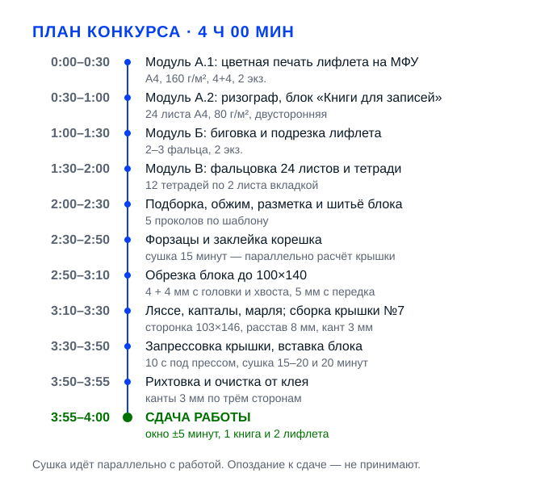
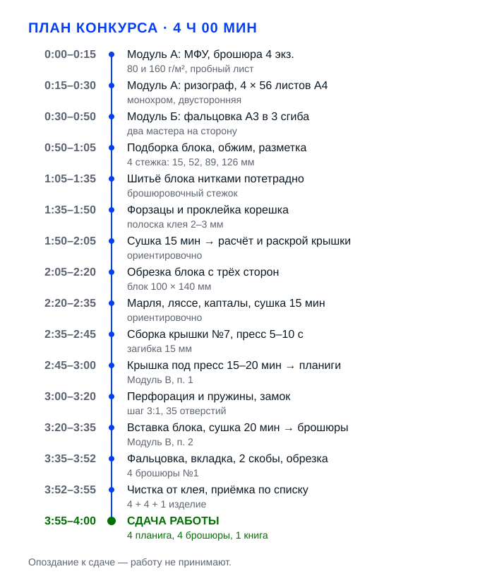
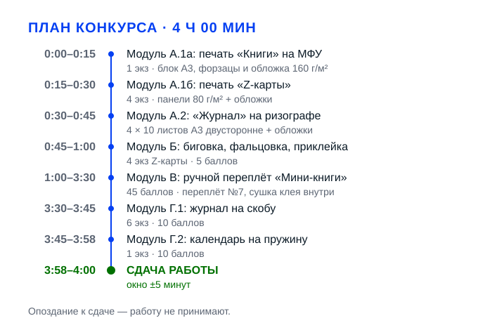

Брошюровка и переплетное дело (Р)
Задания ниже — официальные файлы «Абилимпикс» (источник: abilympics-russia.ru), разложенные по категориям. Решения написаны по тексту задания, регламенту и критериям оценки; в них указано, что именно проверяет эксперт.
Школьник
14–16 лет, базовый уровень заданияВыдержка из официального конкурсного задания: страницы, относящиеся к категории «Школьник» (стр. 5–9 источника).
Пошаговое решение
Четыре часа и три модуля: печать, биговка и ручной переплёт. Сначала на Konica Minolta C250i печатается лифлет с символикой «Абилимпикс» — А4, 160 г/м², цветная двусторонняя печать 4+4, два экземпляра, тридцать минут. Потом на ризографе идут двадцать четыре листа А4 внутреннего блока «Книги для записей», тоже тридцать минут и тоже двусторонняя печать. Дальше лифлет бигуется в два-три фальца и подрезается по меткам, а оставшиеся два с половиной часа уходят на книгу: двадцать четыре листа фальцуются в два перпендикулярных сгиба, из них собираются двенадцать тетрадей по два листа, блок сшивается нитками брошюровочным стежком, обрезается до 100×140 мм и вставляется в крышку №7 «цельнокрытую» с кантами и прямым корешком. Задание линейное: ошибка в фальцовке видна только на обрезке, а кривая крышка обнуляет аккуратный блок. Ниже — пятьдесят шагов по порядку, с размерами и режимами сушки.

Задача 1. Отпечатать лифлет на МФУ в цветеМодуль А.1 · Konica Minolta C250i · 30 минут · 2 экземпляра
Первый модуль — цветная двусторонняя печать макета лифлета с символикой «Абилимпикс» на Konica Minolta C250i: бумага А4 плотностью 160 г/м², печать 4+4, два экземпляра, на всё тридцать минут. Модуль короткий, поэтому почти всё время уходит не на саму печать, а на подготовку: прогрев машины, правильная подача плотной бумаги, настройка типа носителя и проверка первого оттиска. Отсюда и рабочее правило модуля: сначала один пробный лист, потом тираж, и ни в каком другом порядке.
Действие 1.1. Подготовить МФУ и бумагу
Шаг 1.1.1
Включаем МФУ кнопкой на передней панели и ждём окончания прогрева — у Konica Minolta C250i это полторы-две минуты, всё это время на экране горит значок нагрева, а кнопка печати неактивна. Пока машина греется, открываем переднюю дверцу и смотрим на лоток ручной подачи: в нём не должно быть обрывков бумаги, скрепок и пыли, а валик подачи должен быть чистым, без серого налёта тонера. Заодно проверяем, что лоток приёма пуст и в нём не осталось листов от предыдущего участника.
Тридцать минут на модуль — это меньше, чем кажется: если начать с ошибки в лотке, машина выдаст замятие, и на разбор уйдёт половина времени. Чистый валик и свободный тракт — условие ровной подачи плотной бумаги, а результат модуля описан в задании однозначно: отпечатанный двусторонний макет лифлета в двух экземплярах, и никаких промежуточных вариантов там нет.
На панели нет красных значков ошибки, горит «Готов», в лотке ручной подачи пусто и сухо. Проведите пальцем по валику подачи: на подушечке не должно остаться серого следа, а в лотке приёма не лежит чужая бумага, которую машина потом подхватит вместе с вашей.
Включить машину и сразу отправить задание, не дождавшись прогрева: часть задания уйдёт в очередь и распечатается позже, а вы будете искать причину и терять минуты. Вторая ошибка — не заметить в лотке скрепку: плотный лист протащит её внутрь, тракт встанет, и вместо печати вы будете объясняться с техническим специалистом площадки.
Эксперт подходит в первые минуты и смотрит, как участник обращается с машиной: включает по инструкции, проверяет лоток, не стучит по панели и не тянет листы силой. Отдельно отмечается, осмотрел ли участник тракт до включения.
Шаг 1.1.2
Берём пачку бумаги 160 г/м², распускаем её веером, держа за короткую кромку, и выравниваем по длинной кромке о стол — так между листами заходит воздух и машина не захватывает по два листа сразу. Загружаем в лоток ручной подачи стороной для печати вверх, ограничители сдвигаем до касания с бумагой, но не зажимаем: плотный лист должен лежать свободно, без изгиба и без зазора больше миллиметра.
Плотная бумага 160 г/м² тяжелее обычной офисной почти вдвое, и захват у неё хуже: нераспущенная кипа идёт «двойником», а это сразу брак — на лифлете видно каждую лишнюю полосу, и экземпляр придётся переделывать. Время на перепечатку в модуль не заложено, а результат оценивают полистно, по обоим экземплярам сразу.
Углы пачки ровные, листы не стоят «домиком», в лотке лежит ровно столько бумаги, сколько нужно на два экземпляра плюс два пробных листа. Потяните верхний лист за угол: он должен выйти один, без второго, и не потянуть за собой соседние.
Загрузить кипу, не распустив её: первые листы пойдут по два, машина зажуёт их на изгибе, и вы потеряете и бумагу, и время на разбор тракта. Вторая ошибка — задвинуть ограничители слишком плотно, тогда лист идёт с перекосом, изображение встаёт по косой, и метки реза на обороте уже не совпадут.
Эксперт смотрит на пачку в лотке: распущена ли, выровнена ли по кромке, не зажата ли ограничителями. Для него это первый признак того, что участник работал с плотной бумагой раньше, а не только с офисной.
Шаг 1.1.3
В меню машины заходим в настройки лотка ручной подачи и ставим формат А4 и тип носителя «плотная 2» (Thick 2), потому что 160 г/м² — это верхняя граница обычного диапазона. Если тип оставить «обычная», машина прогонит лист на штатной скорости закрепления, и тонер ляжет поверхностно, без полного проплавления в волокна. Проверяем заодно, что в настройках не стоит «авто»: автомат часто ошибается на плотных носителях.
Настройка типа носителя управляет температурой и скоростью печки. Для плотной бумаги нужен более медленный проход и больше тепла: иначе изображение держится на листе механически и осыпается при малейшем трении — а лифлет по заданию ещё будут биговать и фальцевать, то есть гнуть по линии сгиба, где тонер и отслаивается в первую очередь.
На экране в строке лотка стоит «А4 / плотная 2», вес выбран из списка, а не «авто». Проверить просто: возьмите пробный оттиск и потрите сгиб пальцем — краска не должна оставаться на коже, а на самом сгибе не должно появиться белой полосы.
Оставить «обычную» бумагу: внешне оттиск выглядит нормально, но при биговке по линии сгиба появляется белая полоса и осыпавшийся тонер — это видимый брак, и модуль Б уже не спасти, потому что лифлет с трещиной по фальцу не примут ни в каком виде.
Эксперт проверяет настройки лотка до первой печати: для него это признак того, что участник понимает разницу между форматом и типом бумаги, а не просто нажимает «Печать».
Шаг 1.1.4
Перед тиражом печатаем один пробный лист — лучше на такой же бумаге 160 г/м², а не на офисной, потому что на тонкой картинка темнее и обманывает глаз. На пробном листе смотрим три вещи: плотность цвета в светах и тенях, отсутствие полос и точек, ровность полей. Если цвета бледные, а машина свежая, причина почти всегда в типе носителя или в настройке «качество изображения».
Пробный лист стоит одну минуту и одну страницу бумаги, а заменяет перепечатку всего тиража. Это и есть главная логика первых тридцати минут: любая правка на одном листе дешевле, чем та же правка на двух готовых буклетах, тем более что лифлет печатается двусторонним и брак на одной стороне уничтожает обе.
На пробном листе нет серых полос вдоль хода листа, нет белых точек, плотность ровная по всему полю, поля не срезаны. Край изображения отстоит от края листа не меньше чем на 5 мм — иначе при подрезке по меткам реза срежется часть картинки или символики «Абилимпикс».
Пропустить пробу и сразу пустить тираж: полосы от грязного валика или бледный цвет обнаружатся на готовых экземплярах, а бумаги на переделку может уже не хватить — на модуль выдаётся фиксированное количество листов, и запас считается впритык.
Эксперт часто стоит рядом в момент пробы и смотрит, что именно участник проверяет на листе: цвет, полосы, поля или просто «нормально выглядит». Проверка «на глаз, целиком» здесь не засчитывается.
Действие 1.2. Задать параметры печати в Adobe Acrobat
Шаг 1.2.1
Открываем файл макета в Adobe Acrobat и первым делом смотрим размер страницы: он должен быть 210×297 мм. В окне печати ставим масштаб «Фактический размер» (Actual size) и снимаем галочку «По размеру страницы»: масштабирование ломает всю геометрию будущих фальцев, и лифлет потом не сложится по бигам. Заодно проверяем ориентацию — книжная, без поворота на 90 градусов.
Лифлет бигуется и фальцуется по точным размерам панелей, которые заложены в макет. Если Acrobat уменьшит страницу на 4 %, панели станут уже, и последний фальц не совпадёт с линией бига — изделие «поведёт», а внутренние панели будут выглядывать из-под наружных. Проверить это потом, на готовом листе, почти невозможно, а найти причину в параметрах печати — дело одной минуты.
В окне печати в поле масштаба стоит 100 % или «Фактический размер», а в предпросмотре справа видно, что изображение занимает лист целиком, без белой рамки по краям. Размер страницы в свойствах документа совпадает с А4 до миллиметра.
Оставить включённым «Уменьшить до размера печатной области»: на экране всё выглядит прилично, а на листе поля уезжают на 3–5 мм, и метки реза уже не совпадают с реальными границами панелей. При подрезке вы срежете часть изображения, а не белое поле.
Эксперт может попросить показать окно печати: для него важно, чтобы участник осознанно выбирал масштаб, а не жал «Печать» на настройках по умолчанию. Это отдельный пункт в критериях про работу с оборудованием.
Шаг 1.2.2
В списке принтеров выбираем Konica Minolta C250i, в поле «Лоток» — ручной подачи, в поле бумаги — А4 плотная 2, число копий ставим 2. Дальше включаем двустороннюю печать: в задании указано 4+4, то есть полный цвет с обеих сторон. Если в раскрывающемся списке есть выбор «переплёт по длинному или короткому краю», ставим по длинному и проверяем результат на первом же листе, сложив его пополам.
Двусторонняя печать — обязательное условие модуля: результат описан как «отпечатанный двусторонний макет лифлета», и односторонний лист не примут, даже если цвет идеален. При этом в перечне параметров задания встречается слово «односторонний» — это разночтение внутри конкурсного задания, и разрешать его нужно на старте у эксперта, а не догадкой посередине работы.
В предпросмотре видно обе стороны, в строке настроек стоит «2-сторонняя», копий — 2. Первый вышедший лист проверяем на просвет у окна: лицо и оборот должны совпадать по вертикали, а расхождение контуров не превышать одного миллиметра.
Выбрать неверное направление переворота: полосы на обороте встанут вверх ногами, и при фальцовке внутренние панели окажутся перевёрнутыми — переделывать придётся весь тираж из двух экземпляров, а это ещё и повторный прогрев машины и потеря десяти минут.
Эксперт смотрит на список параметров в окне печати до запуска: принтер, лоток, бумага, двусторонняя, две копии — пять пунктов, каждый из которых прямо назван в задании. Пропущенный пункт виден ещё до первого оттиска.
Шаг 1.2.3
Запускаем печать и остаёмся у машины, а не отходим: при ручной подаче плотного листа нужно подавать следующую страницу, если машина не подхватывает её сама, и следить, чтобы лист входил ровно, без перекоса. Как только вышел первый лист, берём его за угол, кладём на стол и проверяем совмещение: сложите лист пополам и посмотрите на свет — контуры на обеих сторонах должны совпадать.
Совмещение лица и оборота — то, что невозможно исправить после печати и что сразу видно на готовом лифлете: если картинка на обороте смещена на 5 мм, при фальцовке она «выползет» на соседнюю панель. Ловить это нужно на первом листе, пока есть чистая бумага и пока машина ещё не ушла в повторный прогрев после остановки.
Расхождение контуров на просвет не больше 1 мм, текст на обороте не «двоится», поля с обеих сторон одинаковые. Нет замятий, угол не загнут, лист вышел без полос и без серых следов от валиков внутри тракта.
Проверить только лицевую сторону и успокоиться: на обороте сдвиг обнаружится уже при биговке, когда панели лифлета перестанут совпадать по содержанию, а время модуля Б будет потрачено на брак. Вторая ошибка — отойти от машины и вернуться к замятию.
Эксперт подходит к машине во время печати и смотрит, стоит ли участник рядом, подаёт ли листы и контролирует ли выход, а не занимается в это время другим модулем или телефоном.
Шаг 1.2.4
Снимаем два готовых листа с лотка приёма, не сгибая и не сколов углы, и раскладываем на столе лицевой стороной вверх. Проверяем каждый по одному: плотность заливки одинаковая по площади, нет вертикальных полос, нет точек от тонера, края чистые, а на обороте нет следов от валиков печки. Отдельно смотрим мелкий текст и символику «Абилимпикс» — они должны читаться без «замыливания» и без радужного ореола.
Оценка идёт по готовому изделию, и любой дефект печати переносится дальше: на биговке полоса станет трещиной, на фальцовке — белым надломом. Два экземпляра означают, что один ещё можно забраковать своими руками и перепечатать, пока модуль не закрыт, но только если дефект замечен сразу, а не после сдачи.
Оба листа чистые, без полос и пятен, текст читается, совмещение в норме. Сгиб, проверенный на уголке листа, не даёт белой полосы и не оставляет краски на пальце — значит, тонер пропечён полностью и выдержит фальцовку.
Сдать лист с полосой в расчёте «потом подрежу»: подрезка не убирает полосу внутри изображения, она идёт вдоль всего листа, а экземпляр уже посчитан и второй тоже с дефектом. В итоге модуль теряет баллы и за качество печати, и за количество.
Эксперт просматривает оба экземпляра отдельно, сначала на просвет, потом целиком, и отмечает дефекты печати своим пунктом: полосы, точки, смещение лица относительно оборота, бледность заливки, загрязнение фона. Отдельно он смотрит края листа — по ним потом пойдёт подрезка.
Действие 1.3. Закрыть модуль и сдать оттиски
Шаг 1.3.1
Кладём два отпечатанных листа в папку или на чистый лист картона изображением вверх, не сгибая и не подворачивая углы, и подписываем карандашом на обороте: номер рабочего места, «лифлет, 2 экз.». Рядом оставляем пробный лист, если он есть, — он подтверждает, что настройки проверялись и что участник работал осознанно. Папку убираем на край стола, подальше от клея, воды и инструмента.
Лифлет уходит в модуль Б, где его будут биговать и фальцевать, поэтому мятый угол или загнутая кромка — это уже не «печать», а геометрия: по такой кромке не выставить упор биговщика, и панели получатся разной ширины. Подпись на обороте нужна, чтобы эксперты не перепутали экземпляры разных участников при оценке.
Оба листа лежат ровно, без заломов, подписаны, количество сходится: два экземпляра, по четыре стороны в цвете каждый. Кромки не загнуты, углы острые, листы не слиплись от тонера и не пачкают пальцы, когда их перекладывают.
Сложить листы пополам «чтобы не занимали место»: на сгибе останется надлом и осыпавшийся тонер, а биговать лифлет придётся по уже повреждённой линии — трещина пойдёт точно по бигу, на самом видном месте изделия.
Эксперт проверяет комплектность при приёмке модуля: два экземпляра, чистые, без заломов, подписанные. Отсутствие подписи иногда трактуется как потеря экземпляра.
Шаг 1.3.2
Забираем остаток бумаги из лотка ручной подачи, складываем в пачку и убираем на полку, лоток закрываем. Выключаем МФУ кнопкой питания и ждём, пока погаснет экран, — резкое отключение питания при работающей печке оставляет тонер на валиках. Рабочее место оставляем чистым: обрезанные кромки, упаковка и бумажные обрезки уходят в мусор, инструмент — на своё место.
Порядок на рабочем месте — часть оценки организации труда, и он же экономит время следующего модуля: ризограф стоит рядом, и если на столе лежат обрезки и упаковка, вы будете искать место для кипы 80 г/м², а потом обнаружите, что кипа уже подмокла или помята. Кроме того, выключенная машина — условие безопасного перехода к следующему оборудованию.
Стол свободен, бумага убрана в пачку, машина выключена, оттиски лежат в папке. На столе нет обрезков, скрепок и остатков упаковки, а инструмент лежит там, где его взяли. Лоток ручной подачи закрыт, на панели не горит ни один индикатор.
Уйти к ризографу, оставив МФУ включённым и лоток открытым: машина уйдёт в режим прогрева и потребует внимания как раз тогда, когда вы начнёте печатать блок, а лишние звуки и индикаторы будут отвлекать от новой работы.
Эксперт фиксирует порядок на рабочем месте в конце модуля и снижает оценку за неубранное оборудование, оставленную в лотке бумагу и мусор на столе. Для него это часть критерия организации работы, а не мелочь.
Задача 2. Отпечатать блок «Книги для записей» на ризографеМодуль А.2 · ризограф · 30 минут · 24 листа А4, двусторонняя
Второй модуль — двадцать четыре листа А4 внутреннего блока на ризографе, печать двусторонняя, бумага 80 г/м², тридцать минут. Ризограф печатает через мастер-плёнку: каждая сторона — это отдельная плёнка, отдельный проход и отдельная стопка, поэтому модуль распадается на две одинаковые половины. Именно эти листы потом сфальцуют в тетради и сошьют, так что здесь закладывается качество всей книги: перекос на выходе ризографа не исправит никакая фальцовка.
Действие 2.1. Подготовить ризограф и бумагу
Шаг 2.1.1
Включаем ризограф (дубликатор) кнопкой питания и ждём, пока машина проведёт самопроверку: на пульте по очереди загорятся индикаторы, затем останется только «Готов». Пока идёт проверка, открываем боковую крышку и смотрим, есть ли мастер-плёнка в рулоне и краска в тубе — на пульте это две отдельные лампы, и если хоть одна горит, печать не начнётся вообще.
Ризограф не печатает без расходников, и замена тубы или рулона — это пять-семь минут, которых в модуле нет. Проверить расходники до первой команды дешевле, чем искать причину, почему машина не делает мастер: у неопытного участника на это уходит половина тридцатиминутного окна, а внутренние листы нужны все двадцать четыре.
На пульте нет горящих ламп «нет краски» и «нет мастер-плёнки», дисплей показывает «Готов», лотки закрыты до щелчка. Если лампа всё же горит, сразу зовём технического специалиста площадки, а не пытаемся менять тубу самостоятельно.
Начать с загрузки бумаги, не проверив расходники: через минуту выяснится, что мастер-плёнки нет, бумага уже заряжена и стоит в лотке, а машина всё равно не работает — время уходит на ожидание, и модуль закрывается с недопечатанными листами.
Эксперт смотрит, что участник делает в первую минуту: включает и ждёт самопроверку или сразу начинает дёргать лотки. Правильная последовательность здесь — отдельный пункт.
Шаг 2.1.2
Настраиваем лоток подачи и лоток приёма под формат А4: сдвигаем боковые ограничители до касания с краем бумаги, задний упор ставим по длинной стороне, передние ролики приёма разводим так, чтобы лист входил свободно, но не болтался. Оба лотка должны быть выставлены по одной оси: перекос приёмного лотка относительно подающего — главная причина «веера» на выходе.
Ризограф прогоняет лист с высокой скоростью, и любая несоосность лотков превращается в перекос стопы: листы ложатся друг на друга со сдвигом до пяти миллиметров. Из такой стопы невозможно ровно сфальцевать тетрадь, а при шитье блок поведёт винтом — то есть ошибка первых двух минут уничтожает двухчасовой модуль переплёта.
Ограничители касаются бумаги без зазора и без нажима, задний упор стоит по формату А4, лотки защёлкнуты. Прогоните один лист вручную: он должен лечь в приём ровно, параллельно кромке лотка, без поворота.
Выставить лотки «примерно» и не проверить пробным листом: первые двадцать оттисков лягут с перекосом, а исправлять придётся уже всю стопу, перекладывая листы по одному. На двадцать четыре листа это ещё и потеря темпа.
Эксперт проверяет, выставлены ли оба лотка под А4 и не остался ли ограничитель на А3 — это частая ошибка при переходе между модулями на одной машине. Хороший признак — участник не просто выставил ограничители, а прогнал пробный лист и посмотрел, как он лёг.
Шаг 2.1.3
Берём кипу 80 г/м², распускаем её, держа за короткую кромку, и выравниваем по длинной кромке о стол: между листами должен зайти воздух, иначе ризограф захватит два листа и зажуёт их. Загружаем в лоток подачи, не выше верхней метки, и обязательно проверяем кипу на скрепки и загнутые углы — на ризографе скрепка рвёт мастер-плёнку и портит барабан. Если кипа пришла в упаковке, снимаем её полностью: пыль и клейкая лента на первом листе сразу дают пятно на мастер-плёнке.
Листы 80 г/м² тонкие, и статическое электричество склеивает их в блоки: нераспущенная кипа идёт по два-три листа, машина останавливается с ошибкой подачи. Плюс из тонкой бумаги потом фальцуются тетради, и загнутый угол сразу даёт «собачье ухо» на сгибе, которое при обрезке не убирается, потому что оно внутри тетради.
Кипа лежит ровно, не выше метки, листы распущены и не слипаются при перелистывании. Углы целые, скрепок нет — проверяйте на просвет и на ощупь, проводя пальцем по кромке стопы. Поднимите верхние десять листов за угол: они должны расходиться по одному, а не выходить блоком.
Загрузить кипу выше метки: ризограф зажмёт её и выдаст ошибку подачи, а при разборе часть листов пойдёт с заломами, и на блок останется двадцать два листа вместо двадцати четырёх — недостачу уже не восполнить в отведённое время.
Эксперт смотрит на кипу в лотке и на то, проверял ли участник её на скрепки. Для ризографа это не формальность: скрепка рвёт мастер-плёнку и стоит замены барабана.
Действие 2.2. Изготовить мастер-плёнку и отпечатать обе стороны
Шаг 2.2.1
Кладём оригинал первой стороны на встроенный сканер ризографа лицевой стороной вниз, выравниваем по упору в углу стекла и прикрываем крышкой. На пульте выбираем режим сканирования, проверяем, что формат стоит А4, а масштаб — 100 %, и задаём плотность изображения вручную, среднее значение, а не «авто»: автомат на тексте с серой заливкой уходит в тёмное.
Мастер-плёнка изготавливается по тому, что лежит на стекле, и любая неровность положения оригинала сразу становится дефектом всех двадцати четырёх оттисков: перекос в один градус даёт на листе сдвиг до пяти миллиметров по краю. Переделка мастер-плёнки — это минус один расходник и минус три минуты, а на модуль их всего тридцать.
Оригинал прижат крышкой, в предпросмотре на пульте изображение стоит ровно, без наклона и без обрезанных полей. Плотность выбрана вручную, фон белый, а не серый. Отдельно проверьте, что в предпросмотре видны все четыре поля, а не три — обрезанное поле потом не вернуть.
Сканировать с приоткрытой крышкой или с оригиналом, сдвинутым к самому краю стекла: получите тень по кромке и обрезанную строку, а мастер-плёнку придётся делать заново — расходник и время уходят впустую.
Эксперт подходит к машине в момент сканирования и смотрит, выровнен ли оригинал по упору и закрыта ли крышка. Это видно за две секунды и сразу отличает уверенную работу от наспех.
Шаг 2.2.2
Запускаем изготовление мастер-плёнки и ждём характерного звука протяжки — плёнка наматывается на барабан, машина делает холостой прогон и останавливается. На пульте задаём тираж 24 и нажимаем печать. Первые три оттиска снимаем и смотрим: совмещение с краем, плотность краски, отсутствие серых полос и складок. Тираж задаём цифрами на клавиатуре, а не «плюс-минус»: на двадцати четырёх легко промахнуться на один лист, а лишний оттиск уже некуда деть.
Первый оттиск на ризографе всегда чуть бледнее последующих, поэтому судить по нему о всём тираже нельзя, а вот дефекты механики видны именно на первых листах — пока краска не разошлась по барабану. Если полосы есть, их надо ловить сейчас: после двадцати четырёх листов исправлять нечего, бумага кончилась, а брак уже в стопе.
Краска ложится ровно, фон белый, текст пропечатан, полей хватает. Лист не имеет продольных полос и поперечных «волн», кромки не загнуты, листы в приёме лежат ровной стопой без сдвига. Плотность заливки сравниваем с оригиналом: серый фон должен остаться серым, а не уйти в чёрный.
Пропустить контроль первых оттисков и дождаться всего тиража: полоса от грязного барабана повторится на всех двадцати четырёх листах, и блок придётся печатать заново, а бумаги на повтор уже не выдадут.
Эксперт смотрит, снимает ли участник первые оттиски и что именно на них проверяет. Печать «вслепую» на ризографе — самая заметная ошибка этого модуля.
Шаг 2.2.3
Снимаем первую мастер-плёнку с барабана (машина делает это сама, но плёнку надо убрать в контейнер, а не оставить на крышке). Кладём на сканер оригинал второй стороны, выравниваем по тому же упору, делаем вторую мастер-плёнку. Стопу оттисков переворачиваем и укладываем в лоток обратной стороной вверх, не перекладывая листы по одному. Перед печатью второй стороны обязательно делаем один пробный оттиск и складываем его пополам: только так видно, куда смотрит верх страницы.
Ризограф печатает одну сторону за проход, поэтому двусторонняя печать здесь — это два тиража с переворотом стопы. Если перевернуть стопу неправильно (не по той оси), вторая сторона ляжет вверх ногами относительно первой, и тетрадь при фальцовке получит перевёрнутые страницы — ошибка, которую нельзя исправить ничем, кроме повторной печати.
Стопа перевёрнута целиком, без перекладывания, кромка выровнена по тому же упору, что и в первый раз. Пробный лист после второй стороны: сложите его пополам — верх и низ текста должны совпадать по направлению.
Перевернуть стопу не по той оси или переложить листы по одному, сбив порядок: получите разные стороны с разворотом на 180 градусов, а на блоке это выглядит как перевёрнутый текст через каждую страницу.
Эксперт проверяет именно направление переворота стопы — самый частый провал в этом модуле, и смотрит, проверяет ли участник пробный лист после второй стороны.
Шаг 2.2.4
Печатаем второй тираж на 24 листа и после выхода контролируем совмещение: берём лист, складываем пополам и смотрим на свет — строки на обеих сторонах должны идти параллельно, а смещение по вертикали не превышать двух миллиметров. Затем проверяем стопу целиком: ровная ли она, нет ли листов, выпавших из неё или с загнутым углом. Если смещение больше двух миллиметров, не крутим настройки наугад: проверяем, ровно ли легла стопа в лотке, и только потом трогаем положение изображения на стекле.
Два миллиметра — это граница, за которой при обрезке блока с головки и хвоста по четыре миллиметра текст на одной из сторон подойдёт слишком близко к обрезу. Совмещение на ризографе зависит от того, как легла стопа, поэтому проверять надо не один лист, а несколько из разных мест стопы.
Двадцать четыре листа на месте, стопа ровная, совмещение в пределах двух миллиметров на листах из начала, середины и конца стопы. Ни один лист не загнут, углы целые, порядок не нарушен. Считаем листы: двадцать четыре, не больше и не меньше, потому что лишние потом придётся отбраковывать уже в тетрадях.
Проверить только верхний лист стопы: нижние могли лечь со сдвигом, и в середине блока окажутся страницы с полями в три миллиметра вместо пяти. При обрезке они уйдут под нож, и текст обрубится. Такая ошибка не видна на стопе и обнаруживается только на сшитом блоке, когда исправлять уже нечего.
Эксперт выборочно смотрит листы из середины стопы и проверяет совмещение на просвет — это быстрее, чем смотреть все двадцать четыре. Он же смотрит, не остались ли в стопе листы с пятнами краски от пальцев.
Действие 2.3. Закрыть ризограф и сдать оттиски
Шаг 2.3.1
Снимаем мастер-плёнку с барабана, если она осталась, и убираем её в контейнер для отработанных плёнок, а не в обычный мусор. Достаём остаток бумаги из лотка, закрываем лотки подачи и приёма до щелчка, выключаем машину кнопкой и ждём полной остановки. Стол вокруг машины протираем от краски и бумажной пыли. Контейнер закрываем крышкой: плёнка пачкает всё, к чему прикасается, включая чистые оттиски на соседнем столе.
Отработанная мастер-плёнка испачкана краской и на барабане оставляет следы, которые потом переходят на первые оттиски следующего участника. Порядок на площадке — это и уважение к следующему рабочему месту, и прямой пункт оценки организации работы, который эксперт фиксирует в конце модуля.
Мастер-плёнка в контейнере, лотки закрыты, машина выключена, на столе нет бумажной пыли и пятен краски. Рядом с машиной не осталось инструмента и обрезков. Проведите ладонью по столу: на руке не должно остаться краски.
Оставить мастер-плёнку на барабане и уйти: краска подсыхает, следующий оттиск идёт с полосами, а в худшем случае плёнка прилипает и рвётся при съёме — это уже вмешательство техника. Вторая ошибка — выбросить плёнку в обычный мусор: она испачкает урну и руки тому, кто будет его выносить.
Эксперт фиксирует состояние машины после модуля: снята ли плёнка, закрыты ли лотки, выключено ли питание. Это отдельные мелкие пункты, которые в сумме дают заметный вес.
Шаг 2.3.2
Собираем двадцать четыре листа в ровную стопу, выравниваем по двум кромкам и кладём на картон или в папку, не сгибая. Сверху кладём груз — любой чистый лист картона с прессом, чтобы стопа не разъехалась. Подписываем: номер рабочего места, «блок, 24 листа, 2 стороны». Стопу несём, поддерживая снизу обеими руками, а не за один угол: двадцать четыре листа 80 г/м² гнутся от собственного веса.
Эти листы пойдут в фальцовку, где каждый из них сложится в два перпендикулярных сгиба. Если стопа лежит неровно или листы помяты, тетради получатся разной ширины, и блок при обрезке придётся выравнивать по самой узкой — то есть терять формат 100×140 и уходить в меньший размер, чего задание не допускает.
Двадцать четыре листа, все лицом в одну сторону, стопа выровнена по двум кромкам, углы целые, подпись есть. Ни один лист не выступает из стопы больше чем на миллиметр. Углы проверяем по диагонали: приложите линейку от угла к углу, стопа не должна «винтить».
Сложить стопу пополам, чтобы унести: на всех двадцати четырёх листах останется залом по центру, а фальцевать нужно по своим линиям — залом пойдёт поперёк и испортит тетрадь. Вторая ошибка — оставить стопу на краю стола: её снесут локтем, и листы придётся выравнивать заново, а часть пойдёт с заломами.
Эксперт пересчитывает листы при приёмке модуля. Двадцать три вместо двадцати четырёх — это недопечатанный блок, и модуль В уже не собрать в заявленном объёме.
Задача 3. Сбиговать и сфальцевать лифлетМодуль Б · биговщик · 30 минут · 2 экземпляра
Модуль Б — тридцать минут на биговку и фальцовку двух отпечатанных листов, результат — сбигованное и сфальцованное изделие «Лифлет» в 2–3 фальца, подрезанное по меткам реза. Технически это самый короткий модуль, но и самый беспощадный к ошибкам: биг — это необратимая операция, лишняя линия на листе видна навсегда, а неверно выставленный размер панели не исправляется ни подрезкой, ни повторной фальцовкой.
Действие 3.1. Разобрать схему и настроить биговщик
Шаг 3.1.1
Открываем макет и определяем схему: два фальца означают три панели, три фальца — четыре. Считаем ширину панели от 210 мм: при трёх панелях это 70 мм на каждую, при четырёх — по 52,5 мм. Дальше вводим поправку на толщину: бумага 160 г/м², поэтому внутренняя панель, которая при складывании уходит внутрь, должна быть на 1–1,5 мм уже, иначе край лифлета не закроется ровно, а «вылезет» из-под наружной панели.
Схема фальцев — это арифметика, а не вкус: разница в полтора миллиметра между панелями и есть профессиональная фальцовка, тогда как равные панели на плотной бумаге дают утолщение на корешковом сгибе и заметный перекос всего изделия. Именно по ровности кромок и совпадению панелей эксперты оценивают результат модуля.
На бумаге выписаны все размеры панелей с поправкой: например 70 / 68,5 / 70 при двух фальцах или 52,5 / 51 / 51 / 52,5 при трёх. Сумма панелей сходится с 210 мм до полумиллиметра. Обязательно пересчитайте сумму ещё раз перед первой линией: одна ошибка в арифметике стоит целого экземпляра.
Начать биговать, не посчитав панели, «по глазомеру»: последний фальц не совпадёт, и край лифлета пойдёт углом. Исправлять нечем — биг уже продавлен, и повторная линия рядом даст двойной рубец, который видно на просвет.
Эксперт в первые минуты смотрит, есть ли у участника расчёт на бумаге. Схема, посчитанная заранее, — половина успеха этого модуля. Отдельно он отмечает, сделана ли поправка на толщину бумаги — это разница между школьным и профессиональным уровнем.
Шаг 3.1.2
Освобождаем биговщик, проверяем, что на столе есть подложка и линейка. Ставим упор на первую линию и выставляем размер по шкале машины, затягиваем фиксатор. Прогоняем пробный лист из макулатуры той же плотности 160 г/м², замеряем расстояние от кромки до бига штангенциркулем или линейкой с ценой деления 1 мм и только после этого трогаем чистовой лист.
Пробный лист на макулатуре стоит ноль, а ошибка на чистовом — целый экземпляр из двух. Шкала биговщика часто сбита на полтора-два миллиметра после предыдущего участника, и без промера вы этого не заметите: на глаз отклонение в миллиметр не читается, а на изделии панели разъедутся.
Пробный биг стоит точно по размеру: расстояние от кромки до линии совпадает с расчётным до миллиметра, линия ровная и параллельна кромке. Упор затянут и не сдвигается от нажатия. Второй пробный биг делаем после каждой перестановки упора, а не только на первой линии.
Пропустить пробный лист и сразу биговать чистовой: сбитая шкала даст линию на два миллиметра в стороне, панели станут разной ширины, и лифлет при складывании перекосится — экземпляр испорчен безвозвратно.
Эксперт смотрит на пробный лист на столе: если его нет, а биг на чистовом уже сделан, это сразу читается как работа без настройки. Он же смотрит, затянут ли фиксатор упора: незатянутый сдвигается от вибрации, и размер уезжает к третьей линии.
Шаг 3.1.3
Определяем направление волокна у бумаги. Простой тест: отрываем узкую полоску от обрезка — по волокну край рвётся ровно, поперёк даёт рваную «пилу». Второй способ: сгибаем обрезок в двух направлениях — вдоль волокна сгиб гладкий, поперёк трещит. Биг и фальц должны идти вдоль волокна, поэтому при необходимости разворачиваем схему листа на 90 градусов ещё до первой линии.
Бумага рвётся и трескается поперёк волокна: на 160 г/м² это проявляется белой полосой точно по бигу — тонер отслаивается, обнажая бумажную массу. Переориентировать лист после биговки уже нельзя, поэтому направление проверяют до первой линии, а не после.
Тест проведён, направление записано, и линии бига идут вдоль волокна. На пробном сгибе, сделанном поперёк волокна, видна трещина — это и есть контроль, что вы не перепутали сторону. Если трещина есть и на макулатуре, направление выбрано неверно — разворачиваем лист, пока он ещё чистый.
Биговать поперёк волокна «как лежит»: сгиб получится с трещиной по всей длине, краска осыплется, и лифлет будет выглядеть как брак печати, хотя печать тут ни при чём. Второй раз эта ошибка проявляется при подрезке: треснувший сгиб осыпается и пачкает соседние панели тонером.
Эксперт проверяет сгиб на излом: берёт край лифлета и смотрит на линию сгиба против света. Трещина по тонеру — минус за качество изделия. Ему достаточно одного взгляда на сгиб против света, чтобы понять, проверял ли участник волокно.
Действие 3.2. Сбиговать и сфальцевать лист
Шаг 3.2.1
Бигуем со стороны, которая окажется снаружи сгиба: лист кладём на биговщик нужной стороной вверх, кромку прижимаем к упору, ведём каретку плавно, без рывка и без остановки посередине линии. Для 160 г/м² ставим среднее давление: нож должен продавить волокна, но не прорезать бумагу и не оставить блестящего рубца с обратной стороны. Каретку ведём одной рукой, второй придерживая лист у дальнего края, чтобы он не поднялся и не пошёл «волной».
Биг — это не рез, а подготовка сгиба: он надламывает волокна по линии, чтобы при складывании бумага не треснула. Если биговать с внутренней стороны сгиба, линия уйдёт внутрь и при складывании вывернется наружу — получится белая полоса ровно там, где её видно в готовом изделии, на самом сгибе.
Линия бига ровная, одинаковой глубины по всей длине, параллельна кромке. На обороте нет светлого рубца и нет пробоя насквозь — проверьте, подняв лист на свет: точки просвета означают, что нож продавил бумагу.
Провести каретку с остановкой посередине: в этом месте останется вмятина и утолщение, и при фальцовке лист пойдёт не по линии, а рядом, «по кривой». Особенно заметно на длинных фальцах 210 мм. На плотной бумаге это особенно заметно: вместо ровной линии получается плавная дуга, и лифлет не закрывается.
Эксперт смотрит на линию бига против света и на просвет — ровность глубины и отсутствие пробоя видны сразу. Пробой насквозь он считает отдельным дефектом, потому что такой сгиб рвётся при первом же раскрытии.
Шаг 3.2.2
После первого бига проверяем результат на пробном сгибе: складываем лист по линии руками, прижимаем и раскрываем — на сгибе не должно быть трещин, белых волокон и осыпавшегося тонера. Если трещина есть, давление увеличиваем на одно деление и делаем второй пробный биг на обрезке, а не на чистовом листе. Давление меняем по одному делению и каждый раз проверяем новым пробным сгибом, а не тем же самым.
Это единственная возможность проверить настройку до того, как испорчен весь тираж. Трещина на сгибе — самая частая причина снижения оценки в этом модуле, и появляется она именно из-за недостаточного давления или бига не с той стороны, а не из-за плохой бумаги.
Пробный сгиб разглажен и раскрыт: линия чистая, тонер не осыпался, бумага не расслоилась. Сгиб держит форму и не «пузырится» рядом с линией. Посмотрите на сгиб против света: мелкие белые точки по линии уже означают недостаточное давление.
Проверить биг, не сгибая: визуально линия выглядит нормально при любом давлении, а трещина проявляется только на сложенном листе. В результате все панели треснут уже после фальцовки, когда исправлять поздно.
Эксперт часто просит показать пробный сгиб: по нему видно, настраивал участник давление или просто провёл линию. Для него пробный сгиб — доказательство того, что участник проверял настройку, а не просто выполнил операцию.
Шаг 3.2.3
Бигуем остальные линии по расчётным размерам, каждый раз переставляя упор и проверяя размер линейкой. Затем фальцуем: складываем лист по первому бигу, совмещаем кромки, проглаживаем сгиб косточкой от середины к краям, потом по второму и третьему бигу в нужной последовательности — при схеме «в три фальца» внутренние панели уходят внутрь по очереди. Косточку ведём от середины к краям, а не наоборот: так из-под неё выходит воздух и сгиб не заминается складкой.
Последовательность фальцовки определяет, какая панель окажется внутри: если сложить не в том порядке, внутренняя панель выйдет наружу, и лифлет раскроется не той стороной — содержимое пойдёт не по порядку, а обложка окажется внутри. Проверить это можно только развернув готовое изделие.
Все линии бига на своих местах, кромки сложенного лифлета совпадают с точностью до миллиметра, «лесенки» из панелей нет. Развернули — панели идут по порядку, обложка снаружи. Проверьте каждую панель на просвет: текст на соседних панелях не должен «переползать» через биг.
Фальцевать без косточки, просто прижимая пальцами: сгиб получается округлым, лифлет «пухнет», кромки не совпадают, а на плотной бумаге появляется залом рядом с бигом. На бумаге 160 г/м² такой залом остаётся навсегда и виден как светлая полоса рядом с линией сгиба.
Эксперт проверяет кромки сложенного изделия: проводит пальцем по торцу и смотрит на «лесенку». Ровный торец — признак правильной фальцовки. Он разворачивает изделие целиком и проверяет, что панели читаются в том порядке, в котором свёрстан макет.
Шаг 3.2.4
Проглаживаем все сгибы ещё раз, положив лифлет на ровную поверхность и прижав линейкой, чтобы сгиб «запомнил» форму. Затем ставим изделие на торец и смотрим на него сбоку: панели должны стоять параллельно, без веера и без волны. Если какая-то панель выступает, значит, биг по ней сделан неточно или давление было неравномерным. Прижимать лучше через чистый лист бумаги, чтобы не оставить на оттиске жирных следов от пальцев.
Сгиб на плотной бумаге обладает памятью: непроглаженный фальц постепенно раскрывается, и лифлет в руках эксперта разваливается, хотя формально он сложен. Это отдельный, легко снимаемый балл — и за качество фальцовки, и за внешний вид готового изделия.
Лифлет лежит сложенным и не раскрывается сам, торец ровный, все панели одинаковой ширины. Проверьте, поставив изделие на ребро: оно стоит, а не заваливается набок. Проверьте и обратную сторону: на сгибе не должно быть «пузыря», который появляется при неравномерном давлении.
Оставить лифлет непроглаженным: через минуту он начнёт раскрываться, и на сдаче будет выглядеть как небрежно сделанный. Вторая ошибка — проглаживать горячим утюгом без бумаги, тогда тонер прилипнет к подошве и сойдёт с оттиска.
Эксперт берёт изделие в руки и смотрит, держит ли оно форму: раскрывающийся лифлет оценивается ниже, даже если геометрия верная. Он ставит изделие на ребро и смотрит на линию торца — это самый быстрый способ увидеть веер панелей.
Действие 3.3. Подрезать по меткам и сдать
Шаг 3.3.1
Кладём лифлет на одноножевую резальную машину, совмещаем метки реза с линией ножа, прижимаем стопу прижимом и только потом опускаем нож. Руки держим на рукоятке и вне зоны движения ножа, а не придерживаем лист у линии реза. Режем по одной линии за проход, каждый раз снимая припуск не больше 3–4 мм. Прижим опускаем до касания со стопой и только потом тянем нож: без прижима лист ползёт под ножом.
Метки реза стоят в макете не случайно: по ним убирается технологический припуск, и после подрезки панели получают точный размер. Если срезать сразу 10 мм «на глаз», можно уйти в изображение и обрезать часть текста — а на лифлете с плотной заливкой это заметно сразу, потому что срез пойдёт по картинке.
После подрезки все панели одинаковой ширины, метки реза не видны, изображение не срезано. Углы прямые — проверьте угольником, приложив его к торцу изделия. После каждого реза снимаем обрезки со стола, чтобы они не попали под следующую стопу и не дали ступеньку.
Резать, придерживая лист пальцами у линии ножа: это риск травмы, и на площадке такое немедленно останавливают. Вторая ошибка — резать всю стопу одним ударом без прижима: листы сдвинутся, и линии реза получатся ступенькой.
Эксперт стоит рядом при работе на резальной машине и следит именно за положением рук и прижимом — это пункт безопасности, за который снимают баллы. Он же проверяет, снят ли прижим после реза: оставленный под давлением лист заминается по краю.
Шаг 3.3.2
Кладём два готовых лифлета рядом, разворачиваем и проверяем порядок панелей: обложка снаружи, текст внутри идёт по страницам. Подписываем карандашом на внутренней стороне последней панели: номер рабочего места, «лифлет, 2 экз.». Сдаём эксперту, называя параметры: два фальца, бумага 160 г/м², два экземпляра. Второй экземпляр держим закрытым, чтобы не сбить сгибы, а показываем изделие раскрытым, а не разложенным по столу.
Модуль считается выполненным только когда изделие сдано и названо: эксперт должен понимать, что именно он оценивает, а участник — показать, что знает параметры своей работы. Проверка порядка панелей перед сдачей ловит ту ошибку, которую уже нельзя исправить, но можно хотя бы не выдать за готовое изделие.
Два экземпляра, оба сложены, подрезаны, с ровным торцом, панели идут по порядку. Подпись есть, параметры названы. Лифлеты лежат на столе, а не в руках — так эксперт видит их целиком. Проверьте и подрезку: торец должен быть ровным по всей длине, без «ступеньки» от ножа.
Сдать изделие, не развернув его: перевёрнутая внутренняя панель обнаружится у эксперта, а не у вас, и вместо исправления вы получите снижение оценки за содержание. Вторая ошибка — назвать не те параметры: два фальца вместо трёх сразу показывают, что участник не знает своего изделия.
Эксперт оценивает именно сданное изделие, поэтому важно передать его в руки, а не оставить на краю стола — необработанный лифлет может быть не засчитан.
Задача 4. Сфальцевать, сшить и обрезать блокМодуль В · первая половина · около 1 часа 15 минут
Самая длинная часть задания — два с половиной часа на «Книгу для записей» в переплёте №7. Начинается она с 24 оттисков А4: каждый лист фальцуется в два перпендикулярных сгиба, из двух листов вкладкой собирается тетрадь, из двенадцати тетрадей подборкой — блок. Дальше обжим, разметка корешка, шитьё нитками брошюровочным стежком, форзацы, заклейка корешка и обрезка до 100×140 мм. Здесь нельзя ускоряться: любая неточность в фальцовке или шитье вылезет на обрезке, когда исправлять будет уже нечего.
Действие 4.1. Сфальцевать листы и собрать тетради
Шаг 4.1.1
Берём двадцать четыре листа А4 и фальцуем каждый в два перпендикулярных сгиба. Первый сгиб — вдоль длинной стороны: складываем лист пополам, совмещаем кромки, проглаживаем косточкой от середины к краям, получаем А5. Второй сгиб — поперёк, перпендикулярно первому: складываем А5 ещё раз, так же совмещая кромки, получаем А6 из восьми страниц. Сгибы идут строго по волокну, поэтому перед началом проверяем направление на обрезке.
Восемь страниц на лист и двенадцать тетрадей по два листа дают ровно 192 страницы — это объём, заложенный в задание. Перпендикулярность сгибов критична: если второй сгиб пойдёт не под прямым углом, страницы в тетради встанут «веером», и при обрезке с трёх сторон часть текста уйдёт под нож, потому что поле с одной стороны окажется шире, чем с другой.
На каждом листе два сгиба, угол между ними прямой — проверьте угольником на выборке из трёх тетрадей. Кромки совпадают, «лесенки» на торце нет, все двадцать четыре листа сложены до формата А6 и лежат ровной стопой.
Фальцевать «на глаз», без совмещения кромок: одна тетрадь выйдет на два миллиметра шире другой, и при обрезке блока придётся равняться по самой узкой — формат уйдёт в 98×138 вместо 100×140, а это прямое несоответствие заданию.
Эксперт смотрит на торец стопы тетрадей: ровная линия означает, что фальцовка шла по одному стандарту, а не «как получилось». Он же проверяет пальцем, проглажен ли сгиб: непроглаженный фальц на 80 г/м² потом раскрывается в тетради.
Шаг 4.1.2
Собираем тетрадь из двух листов вкладкой: один сложенный лист вкладываем внутрь другого, совмещая корешки и проверяя, чтобы страницы шли по порядку — у вложенного листа первая страница должна быть третьей в тетради. Корешки выравниваем по одной линии, выступающие кромки подравниваем, но не обрезаем: обрезка будет общая, после шитья. Удобно разложить двенадцать тетрадей веером и проверять подряд, а не брать по одной из стопки.
Вкладка задаёт порядок страниц внутри тетради, и перепутать её легко: если вложить лист не той стороной, весь блок прочтётся с перевёрнутой страницей в середине каждой тетради. Ошибка обнаруживается только при перелистывании готовой книги, когда разбирать и перешивать блок уже нет ни времени, ни возможности.
В тетради два листа, корешки совпадают, страницы идут подряд — разверните тетрадь и пролистайте: 1, 2, 3, 4, 5, 6, 7, 8 без пропусков и переворотов. Все двенадцать тетрадей проверены по этому признаку.
Собрать тетради, не проверив порядок: одна перевёрнутая тетрадь в блоке — это брак всего изделия, потому что книгу нельзя переплести заново без расшивания. Проверка занимает минуту на все двенадцать тетрадей.
Эксперт выборочно раскрывает тетради и проверяет последовательность страниц — это делается быстро и сразу показывает, работал участник с содержанием или только с бумагой.
Шаг 4.1.3
Раскладываем двенадцать готовых тетрадей в стопку по порядку и пересчитываем: двенадцать штук, в каждой по два листа, итого двадцать четыре исходных листа. На верхней тетради карандашом пишем номер рабочего места. Стопку кладём корешками в одну сторону, чтобы потом не искать правильную ориентацию при подборке. Если тетрадь получилась заметно толще остальных, значит, в неё попал лишний лист — это видно по корешку ещё до шитья.
Пересчёт — единственный способ убедиться, что все оттиски ушли в дело: если одна тетрадь потерялась под столом, блок получится на шестнадцать страниц короче, и обнаружится это при шитье, когда тетради уже проколоты. Двенадцать тетрадей — это ещё и расчётная толщина корешка, по которой потом считается переплётная крышка.
Тетрадей ровно двенадцать, у всех одинаковый формат и толщина, корешки смотрят в одну сторону. Стопа стоит ровно, без перекоса, верхняя тетрадь подписана. Проверьте толщину стопы: двенадцать тетрадей по два листа 80 г/м² дают ровную, без «пузырей», стопу высотой около 2,5 мм.
Начать подборку, не пересчитав тетради: недостача выяснится на разметке корешка, когда шаблон уже размечен под двенадцать тетрадей, и придётся пересчитывать проколы заново. Вторая ошибка — складывать тетради как попало: часть ляжет корешком в другую сторону, и при подборке блок пойдёт «ёлочкой».
Эксперт пересчитывает тетради в момент сдачи модуля и сверяет с заявленными двенадцатью. Меньшее количество — прямое невыполнение задания. Он смотрит на порядок на столе: разложены ли тетради по номерам или лежат кучей — по этому видно, есть ли план работы.
Действие 4.2. Скомплектовать блок, обжать и разметить корешок
Шаг 4.2.1
Собираем блок подборкой: берём тетради по порядку и укладываем одну на другую, корешок к корешку, не вкладывая их друг в друга. Выравниваем стопу по корешку и по головке, пристукивая её о стол корешком вниз — так тетради садятся на место. Следим, чтобы ни одна тетрадь не легла обратной стороной: у подборки ошибка видна сразу по корешку, где тетрадь выпирает.
Подборка, а не вкладка — потому что тетрадей двенадцать: вложить их одна в другую физически невозможно. При подборке каждая следующая тетрадь ложится на предыдущую, и блок получается толщиной в двенадцать тетрадей. Если нарушить порядок, страницы пойдут не подряд, а книгу потом не перелистать.
Стопа собрана, корешки образуют ровную линию, головки выровнены. Пролистайте блок: страницы идут по возрастанию, ни одна тетрадь не выпадает и не выступает из стопы больше чем на миллиметр. Хороший тест — поставить блок на корешок: он должен стоять устойчиво, не заваливаясь в сторону.
Собрать блок, не выровняв головку: при обрезке с головки снимется разный припуск, и на одной из тетрадей текст подойдёт вплотную к обрезу — визуально это читается как брак вёрстки, хотя виновата сборка.
Эксперт проверяет блок на «ступеньку»: проводит пальцем по головке и по корешку. Ровная линия — признак аккуратной подборки. Он может попросить пролистать блок: последовательность страниц проверяется за десять секунд.
Шаг 4.2.2
Кладём блок в пресс корешком к упору, подкладываем под сторонки ровные дощечки, чтобы не оставить вмятин на форзацных листах, и обжимаем винтом до плотного касания, без фанатизма: бумага 80 г/м² легко заминается. Держим под давлением две-три минуты, затем снимаем и проверяем, что стопа «села» — воздух вышел, тетради больше не пружинят. Винт затягиваем двумя руками равномерно, чтобы дощечки не перекосились и давление распределилось по всей площади.
Обжим убирает воздух между тетрадями и выравнивает блок по толщине: без него корешок при разметке получится «пухлым», проколы лягут на разной глубине, а шитьё стянет блок волной. Кроме того, обжатый блок ровнее ложится под нож при обрезке, и срез получается чистым, без «бархатного» края.
Блок после обжима стал тоньше и плотнее, тетради не сдвигаются при нажатии пальцем, корешок ровный по всей длине. Дощечки не оставили следов на бумаге. Сравните толщину блока до и после обжима: разница в полмиллиметра уже говорит о том, что воздух вышел.
Пережать блок: на бумаге 80 г/м² остаются вмятины от дощечек и заломы у корешка, которые потом видны на готовой книге. Вторая ошибка — не обжать вообще: корешок «пухнет», и разметка проколов уезжает. Третья ошибка — обжимать блок без дощечек: винт оставляет на форзаце вмятину, которая на готовой книге выглядит как след от инструмента.
Эксперт смотрит на корешок блока после обжима: ровный, без волны. Если блок «дышит», разметка и шитьё пойдут с перекосом. Он оценивает, умеет ли участник пользоваться прессом: равномерность затяжки видна по тому, как легли дощечки.
Шаг 4.2.3
Размечаем корешок по шаблону: от головки и от хвоста отступаем по 15–20 мм, между ними делим оставшееся расстояние на три равные части — получается пять точек прокола. Разметку наносим карандашом по линейке на средней тетради, затем шилом делаем по одной точке насквозь через всю стопу, чтобы все тетради получили одинаковые отверстия. Разметку наносим мягким карандашом тонкой линией: жирный графит пачкает корешок и потом проступает через заклейку.
Пять проколов — это классическая схема брошюровочного стежка: два крайних держат тетрадь от смещения, три средних распределяют натяжение нити. Одинаковая разметка по всем тетрадям — условие того, что при шитье нить пойдёт ровно, а не «поедет» по корешку вкось, стягивая блок в одну сторону.
Пять точек на корешке, расстояния между ними равные, отступы от головки и хвоста одинаковые. Проколы сквозные, ровные, без рваных краёв, ни одна тетрадь не сдвинулась относительно разметки. Проверьте разметку линейкой с двух сторон блока — при симметричной разметке точки совпадают и на головке, и на хвосте.
Размечать каждую тетрадь отдельно «на глаз»: отверстия не совпадут, и при шитье нить пойдёт по диагонали, стянув блок в перекос. Такой блок потом не выровнять никакой обрезкой. Вторая ошибка — колоть шилом сразу всю стопу, не проверив перпендикулярность: отверстия уйдут вкось, и нить ляжет по диагонали.
Эксперт проверяет симметрию разметки: равенство отступов от головки и хвоста — простой измеримый признак, по которому сразу видно качество подготовки.
Действие 4.3. Сшить блок нитками брошюровочным стежком
Шаг 4.3.1
Раскрываем тетрадь посередине, кладём её на подкладную доску корешком к себе и прокалываем шилом пять отверстий по разметке — изнутри наружу, строго вертикально, чтобы не порвать бумагу. Повторяем для всех двенадцати тетрадей. Шило берём тонкое, диаметром около миллиметра: отверстие должно быть чуть шире иглы, но не больше. Подкладная доска нужна обязательно: без неё шило уходит в стол, а отверстие получается косым и рваным.
Проколы, сделанные заранее и по разметке, дают ровный стежок: игла идёт по готовому каналу, бумага не рвётся, а нить не цепляет волокна. Если колоть на ходу, во время шитья, отверстия получаются рваными, и в них потом проваливается узел — корешок расходится уже при первом раскрывании книги.
Все двенадцать тетрадей проколоты, пять отверстий в каждой, они совпадают между собой по линейке. Края отверстий чистые, без разрывов и без «бахромы» из волокон. Совместите две тетради проколами: отверстия должны совпасть без усилия, иначе при шитье нить пойдёт вкось.
Прокалывать шилом на весу, держа тетрадь в руке: отверстия идут с наклоном, и при шитье нить выходит на соседнюю страницу, оставляя след на тексте. Такую тетрадь видно на просвет. Вторая ошибка — колоть толстым шилом: отверстие становится шире нити, и стежок «гуляет», а корешок расходится.
Эксперт смотрит на отверстия на просвет: ровные каналы без разрывов — признак аккуратной подготовки, а рваные края он отмечает как дефект шитья. Он смотрит, лежит ли тетрадь на доске ровно и не сдвигается ли она между проколами.
Шаг 4.3.2
Шьём потетрадно, начиная с последней тетради: вводим иглу в среднее отверстие изнутри, выводим наружу, проходим по корешку к следующему отверстию, снова внутрь — и так по всей тетради. Дойдя до края, переходим нитью в следующую тетрадь через тот же прокол, стягиваем и закрепляем петлёй. Нить держим в натяжении, но не перетягиваем: корешок должен остаться прямым.
Переход нити из тетради в тетрадь и есть то, что делает блок единым: без него каждая тетрадь висит отдельно, и блок рассыпается при обрезке. Натяжение — вторая половина успеха: слабое даёт «болтанку» и волну на корешке, сильное стягивает блок так, что он не раскрывается и корешок выгибается дугой.
Блок держится: возьмите его за крайнюю тетрадь и слегка потяните — остальные идут за ней, зазоров между тетрадями нет. Корешок ровный, без «гармошки» и без волны, узлы спрятаны внутри тетради, а не снаружи.
Шить каждую тетрадь отдельно, без перехода нити: блок распадётся при обрезке или сразу после, и два с половиной часа работы уйдут впустую. Вторая ошибка — тянуть нить изо всех сил: блок скручивается винтом и потом не входит в крышку.
Эксперт проверяет блок на раскрывание: книга должна открываться свободно, а корешок — оставаться прямым. Стянутый блок он отмечает отдельно. Он проверяет и узлы: они должны быть внутри тетради, а не на корешке, иначе при заклейке образуется бугор.
Шаг 4.3.3
После шитья обжимаем блок ещё раз, теперь уже сшитым, и проверяем его на перекос: кладём на стол и смотрим, лежит ли он ровно, не «винтит» ли. Концы нити обрезаем, оставляя 10–15 мм, и прячем под заклейку корешка, а не обрезаем под корень: короткий конец выскочит при первом раскрывании. Толщину блока по корешку замеряем штангенциркулем и записываем: это число понадобится при расчёте крышки.
Сшитый блок ведёт себя иначе, чем просто сложенная стопа: нить стягивает тетради, и перекос проявляется именно сейчас. Если его не заметить, при обрезке с трёх сторон блок «уйдёт», и углы получатся не прямыми — а прямой угол блока и есть то, по чему оценивают изделие.
Блок лежит на столе без перекоса, диагонали совпадают, толщина по корешку и по передку одинаковая. Концы нити спрятаны, узлы не выпирают на корешке. Проверьте блок на просвет у головки: тетради должны стоять вплотную, без светлых щелей между ними.
Обрезать нить под корень: узел выскочит, и тетрадь разойдётся при раскрывании книги — обычно это происходит уже на сдаче, в руках эксперта. Вторая ошибка — не обжать блок после шитья, тогда он останется «толстым» и не встанет в рассчитанную крышку.
Эксперт проверяет диагонали блока линейкой: расхождение больше двух миллиметров — это перекос, и его отмечают отдельным пунктом. Он обращает внимание, записан ли размер толщины: без него крышку придётся считать заново, а это потерянные минуты.
Действие 4.4. Приклеить форзацы, заклеить корешок, обрезать блок
Шаг 4.4.1
Форзац — простой, приклейной: берём два листа и фальцуем каждый в один сгиб, получая разворот. Готовим его под обрезной формат 100×140: по ширине 203 мм — две стороны по 100 плюс 3 мм на корешковое поле, по высоте 144 мм, то есть с запасом 2 мм, который снимет нож при обрезке блока. Линию сгиба совмещаем с корешком. Подрезать форзац лучше до приклейки, а не после: подрезанный на блоке форзац тянет клей и идёт волной.
Припуск в 3 мм по корешковому полю — это та полоса, на которую форзац приклеивается к блоку; без неё форзац не держится и отходит при раскрывании. Сгиб форзаца должен точно совпасть с корешком, иначе при открывании книги образуется «карман», в котором скапливается пыль, а сам форзац тянет крышку.
Форзац готов под 203×144, сгиб совпадает с корешком, припуск 3 мм ровный по всей длине. На блоке форзац лежит без натяга и не выступает за обрез, а после подрезки блока станет с ним заподлицо.
Сделать форзац без припуска, «точно по размеру»: клеить будет не на что, и он отойдёт от блока при первом раскрывании — на готовой книге это выглядит как разошедшийся корешок. Вторая ошибка — взять для форзаца плотную бумагу: она не ляжет по корешку и будет тянуть крышку при раскрывании.
Эксперт смотрит на линию сгиба форзаца относительно корешка — совпадение видно на просвет, когда книга ещё не вставлена в крышку. Он смотрит, одинаковы ли оба форзаца по размеру: разница между передним и задним заметна на готовой книге.
Шаг 4.4.2
Наносим клей тонкой полоской 3–5 мм по корешковому полю форзаца, прикладываем к первой странице блока, совмещая сгиб с корешком, и разглаживаем через чистый лист от корешка к краю. То же со вторым форзацем на последней странице. Затем обжимаем корешок блока и делаем предварительную заклейку: промазываем ПВА по всей ширине и заклеиваем бумажной полоской, оставляя сохнуть на 15 минут, — без неё блок разъедется под ножом.
Полоска клея, а не сплошная промазка: сплошной клей на 80 г/м² даёт «волнистость» форзаца, и он коробится ещё до вставки в крышку. Пятнадцать минут сушки — время из задания, и тратить его нужно именно здесь: заклеенный корешок держит блок и не даёт тетрадям разъехаться при обрезке.
Форзац приклеен ровно, без пузырей и складок, корешок заклеен по всей длине, полоска лежит без перекоса. Через пятнадцать минут клей не липнет к пальцу, а блок не «дышит». Проверьте кромку форзаца у корешка: она должна быть приклеена по всей длине, без отстающих участков.
Промазать форзац клеем целиком: бумага намокнет, форзац пойдёт волной, и после высыхания на нём останутся заломы — они видны на готовой книге сразу при открывании. Вторая ошибка — не выждать пятнадцать минут: сырой корешок при обрезке тянется, и срез получается «рваным».
Эксперт смотрит на форзац при открытой крышке: пузыри и волнистость — самые заметные дефекты переплёта, их видно с расстояния вытянутой руки. Пока корешок сохнет, эксперт смотрит, чем занят участник: грамотный сразу переходит к расчёту крышки.
Шаг 4.4.3
Обрезаем блок с трёх сторон на одноножевой резальной машине. Сначала головку — снимаем 4 мм, затем хвост — ещё 4 мм, последним передок — 5 мм. Блок кладём корешком к упору, прижимаем стопу, метки реза совмещаем с линией ножа. После каждого реза проверяем размер штангенциркулем с трёх точек: сверху, посередине, снизу. После первого реза обязательно снимаем обрезки и протираем стол: крошка под блоком даёт перекос при следующем резе.
Именно эта арифметика даёт результат, названный в задании: блок до обрезки — А6, то есть 105×148 мм, а обрезной блок — 100×140 мм. С головки и хвоста уходит по 4 мм, с передка 5 мм, и получается точно 100×140. Ошибка в припуске на любом из трёх резов ломает формат, а переиграть обрезку нельзя — бумага уже снята.
Размер после обрезки 100×140 мм, проверенный в трёх точках по каждой стороне, углы прямые — проверьте угольником. Срез чистый, без «бархатного» края и без вырывов, форзацы подрезаны вместе с блоком заподлицо.
Срезать больше нужного «для ровности»: блок уйдёт в 96×136, и кант крышки, рассчитанный под 100×140, станет неровным. Вторая ошибка — резать без прижима: стопа сдвинется, и на головке появится ступенька.
Эксперт измеряет обрезной блок штангенциркулем в трёх точках и сверяет с 100×140 — это самый быстрый и самый однозначный замер во всём задании. Он сверяет размер не только по ширине, но и по высоте: 140 мм — это то, от чего потом считается кант крышки.
Задача 5. Собрать крышку №7 «цельнокрытую» и вставить блокМодуль В · вторая половина · около 1 часа 15 минут
Финал модуля В — обработка корешка (ляссе, капталы, марля), расчёт и сборка переплётной крышки типа №7 «цельнокрытой» с кантами, вставка блока, обжим, рихтовка и сдача одного экземпляра. Это та часть работы, где виден результат целиком: книга либо стоит ровно, открывается и держит форму, либо все предыдущие полтора часа видны только как аккуратно обрезанный блок внутри кривой крышки. Считать крышку нужно по фактическим замерам блока, а не по номиналу.
Действие 5.1. Обработать корешок блока
Шаг 5.1.1
Приклеиваем ляссе: берём ленту шириной 5–7 мм, приклеиваем её конец к корешку у головки полоской клея 10 мм, оставляя свободный хвост длиной около 10 см, чтобы он выходил за обрез. Затем капталы: полоски ткани с утолщённым краем клеим по головке и по хвосту, отступив от корешка 1–2 мм, клеем 2–3 мм, утолщением наружу. Последней — марля шириной по корешку плюс по 15 мм захода на форзацы.
Капталы закрывают стык блока и крышки и держат головку от разрыва при раскрывании, а марля связывает блок с крышкой и не даёт ему «сесть» в переплёте. Всё это клеится до заклейки корешка, потому что потом полоска бумаги закроет доступ к нему, и поставить капталы ровно будет уже невозможно.
Капталы стоят на одном уровне с обрезом блока, не выступают и не утоплены, утолщение смотрит наружу. Марля лежит по центру корешка, заходы на форзацы одинаковые, ляссе выходит из-под каптала у головки.
Приклеить капталы с отступом в 5 мм от края: в готовой книге между капталом и обрезом останется щель, через которую видно клей — а это самый заметный дефект при оценке внешнего вида переплёта. Вторая ошибка — приклеить ляссе после заклейки корешка: его придётся крепить поверх бумажной полоски, и оно оторвётся при первом же использовании.
Эксперт смотрит на головку блока с торца: каптал должен идти ровной полосой точно по обрезу, без перекосов и провисаний. Он же проверяет, не попал ли клей на сами капталы: на ткани пятно видно сразу и убрать его нельзя.
Шаг 5.1.2
Делаем окончательную заклейку поверх марли: промазываем корешок ПВА по всей ширине, не заходя за края марли, и закрываем бумажной полоской шириной по корешку — предварительная заклейка к этому моменту уже высохла. Разглаживаем через чистый лист от середины к краям, чтобы выгнать воздух. Оставляем сохнуть на 15 минут, положив блок под лёгкий груз корешком вниз, но не зажимая его в пресс. Клей наносим кистью от середины к краям, тонким слоем: толстый слой ПВА даёт усадку и стягивает корешок дугой.
Пятнадцать минут — время из задания, и это не формальность: заклейка должна схватиться до вставки в крышку, иначе при обжиме корешок «поплывёт» и полоска сдвинется. Груз без зажима нужен, чтобы блок не покоробился: под давлением сырой клей уходит в бумагу неравномерно.
Полоска лежит ровно, без пузырей и складок, края приклеены по всей длине. Через пятнадцать минут клей не липнет, полоска не сдвигается при лёгком нажатии пальцем. Проведите по полоске ногтем: она не должна «ходить» под пальцем или отходить по краю.
Заклеить корешок и сразу вставить блок в крышку: сырой клей выдавится на форзац, и на нём останутся пятна, которые нельзя убрать, не повредив бумагу. Вторая ошибка — заклеить корешок слишком широкой полоской: она заходит на капталы и закрывает их, а каптал должен быть виден с торца.
Эксперт проверяет корешок на просвет и на ощупь: ровная, сухая, без бугров заклейка — признак того, что участник выдержал технологическую паузу. Он смотрит на торец корешка: полоска должна идти ровно, не заходя на капталы и не оставляя открытых участков у головки.
Действие 5.2. Рассчитать и собрать крышку №7
Шаг 5.2.1
Замеряем блок штангенциркулем: высота 140 мм, ширина 100 мм, толщина по корешку — фактическая, обычно 4–5 мм с учётом заклейки. Считаем сторонку: ширина = 100 + 3 мм канта с передка = 103 мм, высота = 140 + 3 + 3 мм кантов с головки и хвоста = 146 мм. Отстав по ширине равен толщине корешка, расстав с каждой стороны — 8 мм. Итого развёртка крышки: 103 + 8 + 4 + 8 + 103 = 226 мм.
Кант в 3 мм — это тот выступ крышки за обрез блока, который защищает страницы и придаёт книге законченный вид; при высоте блока 140 мм он стандартный. Расстав в 8 мм нужен, чтобы крышка закрывалась: без него сторонки упрутся друг в друга на корешке, и книга не закроется полностью. Все размеры считаются от фактического блока, а не от номинала 100×140: реальная толщина после заклейки всегда больше расчётной.
На бумаге выписаны четыре числа: сторонка 103×146, отстав по толщине корешка, расстав 8 мм, развёртка 226 мм. Сумма сходится, и она совпадает с замером блока плюс канты. Проверьте расчёт «от обратного»: развёртка минус две сторонки и два расстава должна дать ровно толщину корешка.
Считать крышку «на глаз», по номинальному размеру блока: если толщина корешка окажется на миллиметр больше, крышка не закроется, а канты получатся разной ширины. Исправлять придётся переделкой всей крышки, а картон уже раскроен.
Эксперт в этот момент смотрит на расчёт: цифры на бумаге и штангенциркуль в руках — признак того, что участник понимает конструкцию переплёта, а не собирает «как получится».
Шаг 5.2.2
Раскраиваем переплётный картон толщиной 1,5–2 мм: две сторонки 103×146 и отстав по толщине корешка. Режем на одноножевой машине или резаком по линейке, каждый размер проверяя штангенциркулем: допуск здесь ±0,5 мм, потому что разница в миллиметр уже видна на готовой книге как перекос. Затем раскраиваем покрывной материал: 226 + 2×15 мм загиба по ширине и 146 + 2×15 мм по высоте.
Сторонки задают геометрию книги, и любая неточность в них не компенсируется: кант с одной стороны будет шире, чем с другой, и книга встанет криво. Пятнадцать миллиметров загиба — это то, что заворачивается на внутреннюю сторону крышки и держит картон; меньше — картон выйдет из-под материала, больше — на внутренней стороне образуется лишняя толщина.
Все пять деталей вырезаны, размеры совпадают с расчётом до полумиллиметра, углы прямые. Покрывной материал раскроен с припуском 15 мм со всех четырёх сторон. Разложите детали на столе и приложите линейку: разница в размерах между двумя сторонками недопустима, они должны быть идентичны.
Резать картон «по линейке на столе» без прижима: край получается косым, и при оклейке он проступает через материал бугром. Вторая ошибка — сделать загиб 25 мм: он наезжает на форзац и мешает вклейке блока.
Эксперт измеряет сторонки выборочно: 103×146 — размер, который он проверит обязательно, потому что от него зависит посадка блока. Он может попросить показать раскрой: по нему видно, экономно ли разложены детали и не пошёл ли картон с перекосом волокна.
Шаг 5.2.3
Раскладываем покрывной материал лицом вниз, размечаем карандашом по расчёту: от левого края 15 мм загиба, затем сторонка 103, расстав 8, отстав, расстав 8, сторонка 103. Приклеиваем детали по разметке, начиная с отстава, прижимаем через лист, затем загибаем поля 15 мм, срезаем уголки под 45 градусов, оставляя 1,5–2 мм до картона, и заворачиваем их внутрь.
Расстановка деталей с расставами — это и есть конструкция №7: отстав отделён от сторонок полосами материала, которые работают как шарнир. Уголки, срезанные под 45 градусов с припуском в полтора миллиметра, дают ровный угол без утолщения: если срезать вплотную к картону, материал разойдётся, а если не срезать — угол получится толстым и бугристым.
Расставы одинаковые с обеих сторон, отстав по центру, поля загнуты ровно на 15 мм. Углы острые, без морщин и без просвета картона, материал натянут без пузырей. Проверьте расставы на просвет: полосы материала между отставом и сторонками должны быть одинаковой ширины.
Приклеить сторонки без расстава, вплотную к отставу: крышка не закроется, а на сгибе покрывной материал треснет при первом же открывании. Вторая ошибка — не срезать уголки: на углах образуется утолщение в два слоя картона.
Эксперт смотрит на углы крышки: ровный острый угол без морщин — самый наглядный признак качества сборки, он виден с любого расстояния. Он проводит пальцем по расставу: если чувствуется ступенька от картона, значит, детали приклеены с перекосом.
Шаг 5.2.4
Кладём собранную крышку под ручной пресс и запрессовываем на 10 секунд, затем оставляем под грузом на 15–20 минут для окончательной просушки. Пока крышка сохнет, готовим рабочее место под вставку блока: чистый лист, клей, косточка, чистые тряпочки. Крышку из-под пресса достаём, держа за сторонки, а не за расставы. Прокладки под плиту пресса — чистые листы бумаги: они впитывают лишний клей и не дают крышке прилипнуть к металлу.
Десять секунд под прессом убирают воздух и приклеивают материал по всей площади, а пятнадцать-двадцать минут сушки дают клею схватиться так, чтобы крышка не «повело» при вклейке блока. Брать крышку за расставы нельзя: это самые тонкие места, они мнутся от пальцев, и на готовой книге остаётся вмятина у корешка.
Крышка лежит ровно, не выгибается «лодочкой», расставы целые, материал приклеен без пузырей. Проверьте, поставив крышку на стол: она стоит на всех четырёх углах, без качания. Через пятнадцать минут проверьте углы: материал не должен отходить от картона, а загиб — топорщиться.
Достать крышку из-под пресса раньше времени и сразу вставлять блок: клей ещё сырой, и сторонки сдвинутся относительно отстава — книга получится с перекошенным корешком. Вторая ошибка — сушить крышку без груза: она выгибается «лодочкой» и потом не садится на блок ровно.
Эксперт проверяет крышку на «лодочку»: приложив линейку к сторонке, сразу видно, выгнулась она или осталась плоской. Он смотрит, чем занят участник во время сушки: подготовка к вклейке блока — правильный признак.
Действие 5.3. Вставить блок, обжать, отрихтовать и сдать
Шаг 5.3.1
Промазываем форзац клеем по всей площади, кроме полосы 3–5 мм у корешка, вкладываем блок в крышку и прижимаем форзац к сторонке, начиная от корешка и разглаживая к краям. Совмещаем канты: сверху 3 мм, снизу 3 мм, с передка 3 мм — одинаковые по всем трём сторонам. То же повторяем со вторым форзацем. Клей на форзац наносим от корешка к краю, а прикладываем наоборот — от корешка: так под форзацем не остаётся воздушного пузыря.
Полоса у корешка остаётся сухой, чтобы форзац мог «дышать» при раскрывании: если приклеить его вплотную к корешку, книга не откроется полностью, а форзац треснет по сгибу. Одинаковый кант с трёх сторон — это то, что делает книгу ровной: разница в миллиметр сразу видна на торце как перекос блока в крышке.
Канты одинаковые по всем трём сторонам, форзац приклеен без пузырей и складок, блок сидит в крышке без перекоса. Проверьте: расстояние от обреза блока до края крышки одинаковое при замере в шести точках.
Промазать форзац целиком, включая корешковую полосу: книга не будет раскрываться, а форзац пойдёт волной. Или не совместить канты: с одной стороны он станет 5 мм, с другой — 1 мм, и блок встанет косо.
Эксперт проверяет канты линейкой в нескольких точках — это измеримый критерий, по которому сразу видно, выставлял участник блок по кантам или вклеил как легло.
Шаг 5.3.2
Кладём книгу в пресс, подложив чистые листы под обе сторонки, и обжимаем 10 секунд — этого достаточно, чтобы клей схватился по площади форзаца. Затем переносим под ручной пресс и оставляем на 20 минут для окончательной просушки. Давить сильно не нужно: задача — прижать форзац, а не сплющить блок. Прокладки меняем на чистые, чтобы клей с форзаца не перешёл на плиту пресса и потом не отпечатался на другой стороне.
Десять секунд обжима и двадцать минут под грузом — режимы из задания, и они выведены из поведения ПВА: за десять секунд клей схватывается, за двадцать минут набирает прочность, достаточную для рихтовки. Если начать рихтовать сразу, форзац поедет, и кант уйдёт.
Книга лежит в прессе ровно, форзац приклеен по всей площади, кант не изменился после обжима. Через двадцать минут книга держит форму и не «дышит» при нажатии на сторонку. Проверьте кант после обжима: он не должен измениться ни на одном из трёх краёв.
Обжимать книгу без прокладок: на сторонке останутся следы от плиты пресса, которые уже не убрать. Вторая ошибка — передержать под сильным давлением: блок сплющивается, и книга становится тонкой у корешка.
Эксперт смотрит, выдержана ли пауза: если книга уже отрихтована через минуту после вклейки, значит, технология нарушена, и это видно по канту. Он обращает внимание на прокладки и на усилие: слишком сильный обжим виден по сплющенному корешку.
Шаг 5.3.3
Снимаем книгу с пресса и рихтуем: кладём на стол, прижимаем одной рукой, второй выравниваем сторонки так, чтобы углы сошлись, и проглаживаем корешок косточкой. Затем убираем следы клея: свежие пятна снимаем ластиком или мягкой тряпочкой, засохшие — аккуратно скальпелем под углом, не задевая покрывной материал. Косточку ведём по корешку вдоль, а не поперёк: поперёк она оставляет поперечные вмятины на материале.
Рихтовка убирает перекос, который появляется при обжиме: сторонки почти всегда встают на полмиллиметра одна к другой, и без выравнивания книга стоит «ромбом». Следы клея на покрывном материале — самая частая причина снижения оценки за внешний вид, причём убрать их потом, после сдачи, уже нельзя.
Книга стоит ровно, углы сторонок на одной линии, корешок прямой, без вмятин. На покрывном материале нет пятен клея и отпечатков пальцев — проверьте при косом свете, поднеся книгу к лампе. Проверьте книгу с торца: сторонки должны стоять параллельно, без «ромба» и без выступа одного угла.
Рихтовать, держа книгу за корешок: он мнётся, и на нём остаётся вмятина от пальцев. Вторая ошибка — стирать клей водой: на бумвиниле остаётся матовое пятно, которое виднее самого пятна клея. Третья ошибка — тереть свежее пятно пальцем: клей размазывается по большей площади и впитывается в материал.
Эксперт осматривает книгу при косом свете: пятна и отпечатки видны именно так, а не под прямым освещением. Он смотрит на корешок и на углы: именно там остаются следы от неаккуратной рихтовки.
Шаг 5.3.4
Ставим готовую книгу на стол, проверяем ещё раз: обрезной блок 100×140 мм, канты 3 мм, корешок прямой, капталы на месте, ляссе выходит у головки, книга открывается и закрывается свободно. Подписываем изделие карандашом на форзаце с внутренней стороны и сдаём эксперту, называя параметры: переплёт №7 «цельнокрытый», 12 тетрадей, форзац простой приклейной, один экземпляр.
Сдача — отдельный момент: эксперт оценивает то, что ему передали, и то, что участник назвал. Если параметры названы верно, видно, что работа понималась, а не выполнялась по шагам наугад. Проверка «открывается и закрывается» ловит главную неисправность переплёта — зажатый корешок или сдвинутый блок.
Книга открывается до конца, страницы не зажаты, корешок не трещит, канты ровные, капталы целые. Подпись стоит, параметры названы, количество экземпляров — один, как в задании. Проверьте и ляссе: оно должно выходить из-под каптала у головки и не быть приклеенным к форзацу.
Сдать книгу, не проверив раскрывание: зажатый корешок обнаруживается именно на этом движении, и тогда исправлять уже нечего — форзац приклеен. Вторая ошибка — оставить книгу на столе и отойти: незасчитанный экземпляр приравнивается к несданному.
Эксперт открывает книгу в двух-трёх местах и смотрит, держится ли блок, не расходится ли корешок, ровно ли лежат тетради — это финальная проверка всего модуля.
Студент
учащиеся колледжей и техникумовВыдержка из официального конкурсного задания: страницы, относящиеся к категории «Студент» (стр. 5–6, 9–11 источника).
Пошаговое решение
Студенческая категория «Брошюровка и переплётное дело» — это четыре часа и три модуля, где почти всё решает не скорость, а порядок операций. Модуль А отдаёт тридцать минут на печать: брошюру на МФУ в цвете и четыре комплекта листов «Планинга» на ризографе по 56 листов А4. Модуль Б — мини-книга в твёрдом переплёте №7 «цельнокрытая» с кантами, с приклейным форзацем и шитьём нитками в четыре стежка. Модуль В — брошюровка: четыре «Планинга» на металлическую пружину и четыре брошюры №1 на электростеплере. Главный дефицит здесь не материал, а сушка: клей в корешке держит 15 минут, крышка под прессом стоит ещё 15–20, и если ждать, ничего не успеть. Поэтому план строится так, чтобы время просушки закрывалось работой по другому изделию, а не простоем.

Задача 1. Вывести брошюру на МФУ в цветеМодуль А, пункт 1 · 15 минут · 4 экземпляра
Первый пункт модуля А — цветная двусторонняя печать макета брошюры на МФУ, четыре экземпляра, бумага 80 г/м² на блок и 160 г/м² на форзацы и обложку. Пятнадцать минут на это даются с запасом только для того, кто сначала настраивает машину и печатает один пробный лист, а потом уже гонит тираж. В брифе по этому пункту есть расхождение: в сводной таблице 2.2 стоит пять экземпляров, в разделе 2.3.2 — четыре. Печатаем по разделу 2.3.2, но на брифинге уточняем цифру у главного эксперта, потому что лишний экземпляр — это минуты, а недостающий — незакрытый пункт задания.
Действие 1.1. Подготовить МФУ и бумагу
Шаг 1.1.1
Включаем МФУ кнопкой питания и ждём, пока оно выйдет из прогрева: у машины с цветным лазерным блоком это 30–60 секунд, и начинать печать раньше бессмысленно, потому что первая страница выйдет с бледными плашками. Пока идёт прогрев, открываем переднюю дверцу, смотрим остаток тонера по четырём цветам на индикаторе и проверяем, что в лотках нет бумаги другого формата, оставшейся от предыдущего участника. Если в лотке лежит пачка с загнутыми углами, её вынимаем целиком, а не поправляем верхние листы.
Пункт 1 задания требует именно «включить и подготовить МФУ к работе», то есть подготовка входит в те пятнадцать минут, а не идёт отдельно. Недогретая машина даёт неравномерную заливку на цветных плашках, а это уже брак оттиска, который придётся перепечатывать в тот же лимит времени. Чужой формат в лотке — самая обидная причина сдвига: машина возьмёт бумагу, но поля уедут, и весь тираж придётся делать заново.
Индикатор готовности не мигает, на дисплее нет сообщений о замятии или низком уровне тонера, в лотках только А4. Проверьте язычок-ограничитель: он должен касаться пачки, но не поджимать её с усилием. Если индикатор мигает, дождитесь готовности, а не начинайте печать раньше.
Начинать печать сразу после включения — первые два-три листа выходят с полосами и бледным цветом, а участник считает это настройками макета и начинает крутить параметры. В итоге теряется пять минут и пачка бумаги.
Эксперт подходит к машине в первые минуты и смотрит, включает ли участник МФУ сам и проверяет ли расходники, а не зовёт наставника по первому вопросу. Отмечает и то, выключено ли МФУ после работы, а не только запущено.
Шаг 1.1.2
Берём пачку бумаги 80 г/м², распускаем её: перегибаем кипу двумя руками в одну и другую сторону, продуваем между листами и выравниваем по кромкам о стол. Кладём в лоток лицевой стороной вверх, ориентируясь по наклейке с форматом А4 в углу лотка, и подводим боковые ограничители так, чтобы они касались пачки без зазора, но и без натяга. Пачку не набиваем выше метки максимального уровня — для А4 это примерно 250 листов.
Нераспущенная кипа идёт в машину слипшимися парами листов, и тогда на выходе получается двойной лист, который застревает в тракте или проходит с грубым сдвигом оборота. Ограничители с зазором дают перекос листа на входе, а перекос в двусторонней печати означает, что оборот не совпадёт с лицом на 2–3 мм, и брошюру потом не сфальцевать ровно.
Кипа стоит ровно, углы не выступают, ограничители касаются бумаги по всей длине. Проведите пальцем по верхнему листу — он должен лежать свободно, без волны. Если кипа распускается с трудом, пачку лучше заменить целиком.
Загрузить пачку «как есть» из упаковки: листы слипаются по кромке после резки, машина тянет по два, и первое же замятие съедает половину лимита. Вторая ошибка — задвинуть ограничители слишком плотно, тогда бумага не поднимается и подача срывается.
Смотрит на распуск кипы: это самый быстрый внешний признак того, работал ли участник с ризографом и МФУ раньше или видит машину впервые. Перекос и слипание он замечает по первому же замятию.
Шаг 1.1.3
Вынимаем второй лоток под бумагу 160 г/м² и загружаем её отдельно, не смешивая с блоком: на форзацы и обложку идёт плотная бумага, и её нельзя подавать из того же лотка. В меню машины у этого лотка выставляем тип «плотная бумага» или «картон 160 г/м²» и размер А4, после чего закрываем лоток до щелчка. Если в меню есть выбор «обычная/плотная/конверт», выбираем ровно тот вес, который написан на упаковке.
На плотной бумаге машина иначе проходит зону закрепления: тонер нужно больше времени и температуры, чтобы он не осыпался на сгибе. При настройке «обычная» на 160 г/м² получается оттиск, который на фальце форзаца трескается по красочному слою, а форзац приклеивается к блоку именно сгибом. Отдельный лоток ещё и экономит время: не нужно менять пачку посреди тиража.
В меню лотка стоит А4 и вес 160 г/м², лоток закрыт, машина не выдаёт предупреждение о несоответствии типа бумаги. Возьмите один лист из пачки: он должен быть заметно жёстче блока и не иметь заломов. Лоток должен сесть до упора, без перекоса и зазора с корпусом.
Печатать обложку с того же лотка, что и блок: машина либо сминает лист на повороте тракта, либо выдаёт оттиск с осыпающимся тонером. Переделка обложки стоит ещё и цветного тонера, которого может не хватить на тираж.
Проверяет, разнесены ли веса бумаги по лоткам до начала печати: это прямое требование пунктов 1, 6 и 7 задания и видно по одному взгляду на лотки. Заодно смотрит, не осталось ли в лотке бумаги другого веса.
Действие 1.2. Задать параметры печати в Adobe Acrobat
Шаг 1.2.1
Открываем файл макета в Adobe Acrobat, вызываем «Файл → Печать» и в окне печати первым делом смотрим блок «Размер и обработка страниц». Ставим «Размер: фактический», масштаб 100 %, снимаем галочку «Подобрать по размеру бумаги» и «Печать по размеру страницы». В строке состояния проверяем, что страница макета действительно А4: если размер в свойствах 210 на 297 мм, всё в порядке, если 216 на 279 — это письмо, и макет придётся печатать как есть, но с пометкой для эксперта.
Автоподгонка под формат — самая частая причина того, что готовая брошюра выходит на 3–4 мм меньше заявленного, а потом не сходится с обложкой и с обрезкой. Пункт 3 задания требует задать параметры печати, и эксперт при разборе смотрит именно на масштаб: 100 % означает, что участник понимает, зачем это нужно, а не просто нажал «ОК».
В окне печати масштаб 100 %, предпросмотр показывает лист А4 целиком с полями, ничего не обрезано по краю. Сравните предпросмотр с линейкой: ширина макета на экране должна соответствовать 210 мм. Если файл в другом формате, скажите об этом эксперту до печати.
Оставить «Подобрать по размеру бумаги»: Acrobat растянет макет на 4 %, поля уедут, а на сгибе брошюры текст съедет к корешку. Ошибка не видна на экране и обнаруживается только на сложенном листе, когда уже напечатан весь тираж.
Эксперт смотрит в диалог печати до запуска и отдельно проверяет первую страницу на соответствие формату: это пункт «задать параметры печати». Сверяет масштаб в диалоге: там должно стоять ровно 100 процентов.
Шаг 1.2.2
В блоке «Двусторонняя печать» выбираем «Двусторонняя, переплёт по короткому краю» для книжной ориентации листа и проверяем результат не по названию пункта, а по факту. Включаем «Ориентация: книжная», «Автоповорот страниц» оставляем включённым, если макет весь в одной ориентации, и выключаем, если в файле есть альбомные вставки. Затем печатаем один лист и складываем его пополам по короткой стороне: страница на обороте должна читаться сверху, а не вверх ногами.
Брошюра по модулю В собирается вкладкой и фальцуется, поэтому оборот должен стоять к лицу строго определённым образом, иначе после сгиба вторая страница окажется перевёрнутой. Разница между «коротким» и «длинным» краем на разных машинах трактуется по-разному, и единственный надёжный способ проверить — сложить оттиск. Это ровно тот шаг, который в задании назван проверкой правильности вывода.
Сложите пробный лист: страница 2 стоит за страницей 1 и читается вертикально, страница 3 — на обороте в правильном положении. Если вторая страница перевёрнута, переключите край переплёта и напечатайте ещё один лист. Сравните положение колонцифр на лице и обороте сложенного листа, они должны стоять друг под другом.
Выбрать край «на глаз» и запустить сразу сорок листов: половина тиража уходит в макулатуру, а на брошюру времени уже не остаётся. Вторая ошибка — включить «Буклет» в настройках: Acrobat сам переставит страницы, и при ручной фальцовке порядок развалится.
Смотрит, печатает ли участник один контрольный лист до тиража. Это пункт 4 задания, и он же самый показательный: сразу видно, кто проверяет, а кто надеется. Смотрит, не включён ли в настройках режим буклета, который переставит страницы.
Шаг 1.2.3
Ниже выставляем цвет: «Цвет», режим «Печать в цвете» и не «Оттенки серого», качество — «Высокое» или 600 dpi, тип бумаги — тот, что загружен в лоток. В поле «Копии» ставим 4 и снимаем галочку «Разобрать по копиям», чтобы листы шли подряд одним блоком. Перед запуском проверяем, что выбран нужный лоток, а не «Автоматически»: автомат может взять плотную бумагу из второго лотка и напечатать блок на картоне.
Цвет и качество напрямую влияют на время печати: режим «Высокое» на цветной странице А4 идёт примерно вдвое дольше чернового, и в пятнадцать минут это укладывается только при правильном выборе. Разбор по копиям перемешает листы четырёх экземпляров, и потом комплектовать блоки придётся вручную, теряя минуты на сортировку.
В предпросмотре видно 4 копии, лоток указан явно, качество высокое, цветной режим включён. После запуска первая страница выходит с ровной цветной заливкой без полос. Проверьте поле копий: там должно стоять 4, а не 1 по умолчанию.
Печатать в «Оттенки серого» по привычке: брошюра выходит чёрно-белой, а задание требует цветной печати, и модуль придётся переделывать целиком. Вторая ошибка — оставить лоток «Автоматически» и получить блок на 160 г/м².
Проверяет цветность и качество оттиска на просвет и на глаз: пункт 1 задания прямо говорит «цветная печать», и серый оттиск сразу читается как нарушение. Смотрит на цветность пробного оттиска, а не на настройки на экране.
Действие 1.3. Напечатать тираж и проверить оттиски
Шаг 1.3.1
Печатаем один лист в двустороннем режиме, вынимаем его из приёмного лотка и складываем пополам по короткой стороне, прижимая сгиб линейкой. Смотрим три вещи: совмещение лица и оборота по верхнему полю, положение колонцифр и отсутствие перевёрнутых страниц. Если сдвиг больше 1 мм, идём в «Свойства» машины и правим «Регистрацию оборота» или «Положение изображения», а не крутим поля в макете.
Пробный лист — это единственная дешёвая проверка: один лист вместо сорока. Сдвиг оборота в 2 мм на плоском листе выглядит мелочью, но после фальцовки и обрезки он превращается в «пьяные» поля, а на брошюре внакидку ещё и в перекос корешка. Пункт 4 задания прямо требует вывести первый лист и проверить правильность вывода.
На сложенном листе верхние и нижние поля совпадают с точностью до 1 мм, колонцифры стоят друг под другом, страницы идут по порядку 1, 2, 3, 4. Проверьте на просвет: рисунок оборота не должен просвечивать через лицо. Если сдвиг не убирается настройками, печатайте с полем 10 мм и предупредите эксперта.
Пропустить пробу и запустить весь тираж: обнаружив сдвиг на десятом листе, участник всё равно допечатывает остальное, чтобы успеть, и сдаёт брошюру с гуляющими полями. Перепечатать тираж — единственный выход, и он стоит пять минут из пятнадцати.
Смотрит на пробный лист в руках участника и на то, складывает ли он его перед оценкой: эксперту важно видеть проверку сгибом, а не только на глаз. Сдвиг оборота он проверяет на просвет вместе с участником.
Шаг 1.3.2
Запускаем печать всего тиража и встаём у приёмного лотка, а не отходим к другому станку. Каждые 10–15 листов вынимаем верхний оттиск и проверяем: нет ли полос по ходу листа, марашек от тонера, замятых углов и «двойного» листа. Готовые листы складываем в ровную стопу лицом в одну сторону, прокладывая её чистым листом, и следим, чтобы стопа не сползала с края стола.
Струйная и лазерная печать на тираже дают сбой не сразу, а на 15–20-м листе: кончается тонер, подсасывается пыль, подгибается угол. Ловить это на выходе дешевле, чем разбирать стопу потом. Ровная стопа нужна для следующего модуля: листы пойдут на фальцовку, и мятый угол сразу даст залом на сгибе.
Стопа ровная по трём кромкам, листы не слиплись, на последнем оттиске заливка такая же плотная, как на первом. Быстро перелистайте стопу веером: ни один лист не должен «залипать» к соседнему. Отдельно смотрите, не пошла ли машина с перекосом после замятия.
Отойти от машины на время печати и получить стопу с замятой пачкой в середине: такие листы на фальцовке дают диагональный залом, и тетрадь уже не выправить. Вторая ошибка — складывать листы лицом в разные стороны, потом блок комплектуется вверх ногами.
Оценивает, контролирует ли участник печать по ходу и как складывает оттиски: аккуратная стопа к модулю Б читается как профессиональная привычка. Смотрит, стоит ли участник у лотка или отходит по своим делам.
Шаг 1.3.3
Меняем лоток на плотную бумагу, выводим на печать сначала форзацы, потом обложку: форзацев нужно по два на экземпляр, обложек по одной. Каждый лист берём из приёмного лотка сразу и укладываем отдельной стопой, не смешивая с блоком. В конце проверяем качество всех оттисков на просвет, убираем бумагу из лотков, закрываем их и выключаем машину кнопкой, а не выдёргиванием шнура.
Пункты 6–11 задания идут именно в этом порядке: сначала форзацы, потом обложка, потом проверка качества и выключение. Форзац и обложка печатаются на 160 г/м², и если их смешать с блоком, на фальцовке они пойдут не в свою тетрадь. Выключение кнопкой нужно, чтобы машина успела вернуть печатающую головку в парковку, иначе следующий участник получит её с засохшим тонером на валу.
Форзацев и обложек ровно столько, сколько нужно на 4 экземпляра, все листы ровные, без сдвига изображения к краю. Машина выключена, лотки закрыты, на столе нет бумаги. Убедитесь, что машина выключена, а не стоит в режиме ожидания.
Напечатать обложку вместе с блоком и потом искать её в стопе: на фальцовке обложка 160 г/м² не даёт такой же сгиб, как 80 г/м², и тетрадь расходится. Вторая ошибка — выключить машину, не достав оттиски из тракта, и оставить их там мяться.
Смотрит на раздельные стопы блока, форзацев и обложки и на то, закрыты ли лотки после работы: пункт 11 задания сформулирован как «завершить работу». Проверяет, разделены ли стопы блока, форзацев и обложки.
Задача 2. Напечатать блок «Планинга» на ризографеМодуль А, пункт 2 · 15 минут · 4 × 56 листов А4
Второй пункт модуля А — монохромная двусторонняя печать на ризографе: четыре комплекта по 56 листов А4, бумага 80 г/м² на блок и 160 г/м² на восемь обложек. Ризограф печатает не так, как МФУ: здесь сначала делается мастер-плёнка с оригинала, потом с неё гоняется тираж, и вся точность оборота зависит от того, как участник перевернёт кипу. Пятнадцать минут — это ровно два мастера на сторону, приладка и 224 оттиска, поэтому каждая лишняя переделка мастера стоит примерно полторы минуты и куска тиража.
Действие 2.1. Подготовить ризограф и бумагу
Шаг 2.1.1
Включаем ризограф тумблером на боковой панели и ждём, пока погаснет индикатор прогрева: барабан должен раскрутиться, а машина — выйти в готовность. Открываем лоток подачи, освобождаем его от чужой бумаги, выставляем ограничители под А4 по короткой и длинной стороне и так же настраиваем приёмный лоток, поднимая его упор под формат. Проверяем, что в машине стоит мастер-плёнка, а на панели нет сообщения о её отсутствии.
Пункты 1 и 2 задания — это включение и настройка обоих лотков под А4. Приёмный лоток настраивается не для красоты: если упор стоит под А3, оттиски падают веером, кромки мнутся, и потом эти листы не пройдут перфорацию ровно. Ризограф, запущенный до выхода в готовность, делает первый мастер с перекосом и бледным изображением.
Индикатор готовности горит ровно, без мигания, ограничители обоих лотков касаются формата, на панели нет ошибок. Протяните рукой лист по лотку: он должен идти свободно, без зацепа за ограничитель. Проверьте ещё зазор между ограничителем и пачкой: он должен быть нулевым.
Оставить приёмный лоток в положении А3: оттиски ложатся с перекосом, и на второй стороне совмещение уходит на 3–4 мм. Замена мастера и повторная печать в лимит уже не влезают. Если лоток выставлен неверно, оттиски идут веером, и стопа мнётся по кромке.
Смотрит на настройку обоих лотков и на то, дождался ли участник готовности: это первый пункт модуля и он виден сразу. Смотрит на оба лотка, а не только на подающий.
Шаг 2.1.2
Берём пачку 80 г/м², распускаем её так же, как для МФУ: перегибаем кипу в обе стороны, продуваем и выравниваем по кромкам. Загружаем в лоток подачи лицевой стороной вверх, подводим ограничители без зазора и опускаем прижимную планку до касания с пачкой. Пачку берём не выше метки: для 80 г/м² это примерно 500 листов, но нам нужно 224 оттиска плюс приладка, поэтому пачку лучше делать умеренную — треть лотка.
Ризограф берёт лист резиновым роликом и при слипшейся кипе захватывает по два листа, а второй застревает в тракте барабана. Разбор замятия на ризографе занимает минуты и часто требует снятия барабана, то есть чистых рук и времени, которого в пятнадцатиминутном окне нет. Умеренная пачка ещё и не даёт бумаге слежаться под прижимом.
Кипа ровная, прижимная планка касается верхнего листа, ограничители без зазора. Возьмите верхний лист за угол: он должен выходить свободно, не увлекая за собой соседний. Если лист идёт с усилием, ослабьте прижимную планку на одно деление.
Загрузить полную пачку «чтобы хватило»: под весом бумаги нижние листы сминаются, а подача начинает дёргать по два. Итог — замятие и потеря пяти минут из пятнадцати. Разбор замятия на ризографе требует снятия барабана, а это уже минус пять минут.
Смотрит на распуск и на то, не перегружен ли лоток. Ровная, умеренная пачка — признак того, что участник работал на дубликаторе. Оценивает, умеренная ли пачка: перегруженный лоток виден сразу.
Действие 2.2. Изготовить мастер-плёнку и сделать приладку
Шаг 2.2.1
Кладём оригинал лицевой стороны на встроенный сканер ризографа, прижимая его к упору в левом дальнем углу: на дубликаторе оригинал позиционируется по двум упорам, и смещение на 2 мм на сканере даёт смещение на оттиске. Закрываем крышку сканера полностью и в меню выбираем режим «Текст» для текстовых полос или «Текст/фото» для страниц с линовкой и таблицами. Плотность изображения ставим в среднее положение, а если оригинал напечатан с серым фоном — на одно деление светлее, иначе ризограф зальёт фон.
Ризограф — не копир: он считывает оригинал и прожигает мастер, поэтому качество оттиска целиком зависит от режима сканирования и плотности. Режим «Фото» на текстовой странице размывает шрифт, а средняя плотность на сером фоне даёт грязный оттиск, на котором планингом невозможно пользоваться. Пункт 5 задания — это как раз позиционирование оригинала на сканере.
Оригинал лежит ровно, прижат к обоим упорам, крышка закрыта. В предпросмотре на панели изображение стоит без перекоса, поля одинаковые слева и справа. Крышка сканера должна быть закрыта полностью, иначе по краю пойдёт тёмная полоса.
Положить оригинал по центру стекла, а не по упорам: изображение на оттиске съедет, и при печати оборота поля разойдутся на 4–5 мм. На 56-листовом блоке это видно сразу, а переделка мастера стоит двух минут и плёнки.
Смотрит, кладёт ли участник оригинал по упорам и выбирает ли режим осознанно, а не оставляет заводской «Текст/фото» на все случаи. Смотрит на положение оригинала по упорам, а не на его содержимое.
Шаг 2.2.2
Запускаем изготовление мастер-плёнки кнопкой «Старт» и ждём характерного звука протяжки: машина снимает мастер, наматывает его на барабан и выходит в готовность к печати. Сразу после этого печатаем 2–3 приладочных оттиска и смотрим на них: плотность заливки ровная, без белых полос и «теней» за буквами, поля не срезаны. Если заливка бледная, добавляем плотность на одно деление и делаем новый мастер, а не гоняем тираж с бледным.
Приладка — единственный момент, когда дефект мастера ещё можно исправить за минуту. Бледный мастер на 224 оттисках означает, что весь блок придётся печатать заново, а времени на второй проход уже нет. Пункт 6 задания называет это «изготовить мастер-плёнку для печати», и приладка — его обязательная часть.
На приладочном оттиске текст чёрный и чистый, без серой вуали, поля одинаковые с обеих сторон, нет полос по ходу листа. Пальцем по свежему оттиску не проводим — краска масляная и смазывается. Плотность проверяйте на трёх оттисках подряд: первый часто бледнее.
Гнать тираж с первого мастера, не сделав приладку: половина оттисков выходит с полосой от складки мастера, и участник замечает это на 30-м листе, когда 50 уже испорчены. Плотность, добавленная на ходу, даёт разнотон: часть тиража темнее, часть светлее.
Смотрит на приладочные оттиски в руках участника и на то, делает ли он новый мастер при бледной заливке или пытается «дожать» плотностью на ходу. Отмечает, делает ли участник новый мастер при явном дефекте.
Действие 2.3. Напечатать лицевую и оборотную стороны
Шаг 2.3.1
На пульте задаём количество 56 и печатаем сначала один комплект: он пойдёт на проверку оборота, и только после неё добираем остальные 168 оттисков. Считаем не «на глаз по стопе», а по счётчику машины, и после печати пересчитываем стопу десятками, откладывая по 10 листов. Если счётчик показывает 57 или 58, лишние оттиски убираем сразу, а не оставляем в стопе «на всякий случай».
Пункт 7 задания прямо требует задать количество экземпляров на пульте, а пункт 8 — напечатать их. Комплект в 56 листов — это ровно один планинг, поэтому именно на нём проверяется совмещение оборота: если испортить 56 листов, останется материал на три изделия, а не на ноль. Считать десятками нужно потому, что ризограф иногда сбрасывает лишние оттиски при остановке.
Счётчик и фактический пересчёт совпадают: 56 листов, разложенных по 10 и остатком 6. Стопа ровная, все оттиски одной плотности. Проверьте счётчик после остановки машины: он иногда сбрасывает лишние оттиски.
Сразу задать 224 и печатать всё: при сдвиге оборота брак идёт на весь тираж, и на четыре планига листов уже не хватит. Вторая ошибка — считать стопу на глаз, а потом обнаружить 54 листа вместо 56. Лишний оттиск в стопе потом сбивает комплектовку на брошюровке.
Смотрит на счётчик и на то, проверяет ли участник комплект до печати остального: это деление тиража на пробный и основной, признак расчётливого подхода. Смотрит на деление тиража: сначала комплект, потом остальное.
Шаг 2.3.2
Убираем мастер с барабана, чтобы не смазать его при перевороте кипы, и переворачиваем отпечатанные 56 листов через длинную сторону: берём стопу двумя руками за короткие кромки и, не сдвигая листы, кладём её в лоток подачи лицом вниз, ориентируясь по тому же упору, что и в первый раз. Затем кладём на сканер оригинал второй стороны, выравниваем его по упорам и делаем второй мастер. Ключевой момент — оригинал второй стороны должен быть ориентирован так же, как первый, без поворота на 180 градусов.
Совмещение лица и оборота на ризографе зависит от двух вещей: как перевёрнута кипа и как положен оригинал. Если перевернуть через короткую сторону, оборот встанет боком; если положить оригинал повёрнутым, страница на обороте окажется вверх ногами. Пункты 9–10 задания — это второй оригинал и второй мастер, и они должны дать зеркально точное положение.
Возьмите один лист из перевёрнутой стопы и посмотрите на свет: верхняя кромка листа должна быть той же, что была при печати лица. Оригинал на сканере лежит по тем же упорам, что и первый, и не повёрнут. Проверьте, что первый лист из перевёрнутой стопы лежит лицом вниз и той же кромкой к упору.
Перевернуть кипу через короткую сторону: оборот встаёт поперёк, и все 56 листов уходят в брак. Вторая ошибка — положить оригинал второй стороны повёрнутым на 180 градусов, тогда текст на обороте читается вверх ногами, и это видно только на просвет.
Смотрит именно на момент переворота кипы: это техническая кульминация модуля, и по тому, как участник держит стопу, видно, понимает ли он геометрию оборота. Смотрит на хват стопы при перевороте, а не на результат после печати.
Шаг 2.3.3
Печатаем второй мастер и 2 приладочных оттиска, затем складываем один лист пополам и проверяем совмещение на просвет: строки лица и оборота не должны наезжать друг на друга, а поля сверху обязаны совпасть. Если сдвиг до 1 мм, оставляем как есть, потому что на планиге с пружиной такой допуск не виден; если больше 2 мм, правим положение оригинала на сканере и делаем мастер заново. Убедившись, что совмещение в норме, добираем остальные 168 оттисков и складываем их отдельной стопой.
Планинг брошюруется на пружину, и блок в нём читается с одной стороны листа, поэтому идеальное совмещение здесь нужно только для аккуратности полей — но грубый сдвиг в 3 мм виден на просвет и читается как брак печати. Проверка на просвет — самый быстрый способ: на глаз по одному листу сдвиг в 2 мм не поймать, а на просвет видно сразу.
На просвет строка лица и строка оборота не сливаются в «двойной» текст, верхние поля совпадают с точностью до 1 мм, колонцифры стоят друг под другом. Сдвиг до 1 мм на планиге с пружиной допустим, больше — нет.
Печатать оборот без проверки на просвет: сдвиг в 3 мм обнаруживается уже на сшитом планиге, когда переделывать нечего. Вторая ошибка — оставить на барабане мастер от первой стороны и смазать его при перевороте кипы.
Смотрит на просвет вместе с участником: эксперту важно, чтобы проверка была выполнена при нём, а не заявлена словами. Смотрит на просвет вместе с участником, а не верит на слово.
Действие 2.4. Разложить комплекты, напечатать обложки, сдать оттиски
Шаг 2.4.1
Раскладываем отпечатанные листы на четыре комплекта по 56 листов, пересчитывая каждый десятками и складывая в ровные стопы лицом в одну сторону. Комплекты не перевязываем, а прокладываем между ними полосу чистой бумаги, чтобы кромки не заминались, и подписываем карандашом на прокладке номер комплекта. Рядом кладём восемь обложек: по две на планинг, лицевая и задняя.
Пункт 13 задания — разложить отпечатанные листы на четыре тетради по 56 листов, и от точности этого шага зависит весь модуль В: на пружину идёт блок ровно в 56 листов, а недостача или лишний лист сразу меняет толщину и требует другой пружины. Восемь обложек — это не «две на всякий случай», а лицевая и задняя на каждый из четырёх планигов, как сказано в перечне комплектующих.
Четыре стопы по 56 листов, каждая пересчитана, все лицом в одну сторону, обложек ровно 8. Приложите стопы друг к другу торцом: высота совпадает, значит листов одинаково. Если высота стоп разная, пересчитайте ту, что выбивается, ещё раз.
Разложить комплекты «примерно» и обнаружить на брошюровке, что в одном 54 листа, а в другом 58: пружина по толщине уже подобрана, и планинг либо болтается, либо не закрывается. Пружина по толщине уже подобрана, и планинг либо болтается, либо не закрывается, а пересчитать листы в готовом изделии уже нечем.
Пересчитывает комплекты вместе с участником или проверяет прокладки с номерами: комплектность — прямой пункт задания. Сверяет число комплектов с числом пружин на столе.
Шаг 2.4.2
Меняем бумагу в лотке на 160 г/м², распускаем пачку, загружаем и выставляем прижим по толщине. Кладём на сканер оригинал обложки, делаем мастер, печатаем 8 оттисков и проверяем, что изображение не срезано по кромке и не съехало в сторону корешка. В конце убираем бумагу из лотков, закрываем лоток подачи и приёмный лоток, снимаем мастер с барабана и выключаем машину тумблером.
Пункты 15–22 задания идут именно так: обложки на 160 г/м², мастер, количество, печать, затем уборка бумаги, закрытие лотков и выключение. Мастер с барабана снимают, чтобы он не присох и не оставил следов на барабане следующего участника. Закрытые лотки — требование техники безопасности: открытый приёмный лоток на ризографе выступает в проход.
Обложек 8, все лицом в одну сторону, изображение не срезано, плотная бумага не замята на кромках. Лотки закрыты, индикатор погас, мастер снят. Плотная бумага не должна быть замятой по кромке после подачи.
Оставить мастер на барабане: к следующему запуску он прилипает, и машина выдаёт оттиск с полосами, а разбор занимает время у следующего участника. Вторая ошибка — не закрыть приёмный лоток, что на площадке считается нарушением ТБ.
Смотрит на завершение работы по пунктам 21–22: убранная бумага, закрытые лотки и снятый мастер — это отдельный, легко проверяемый критерий. Проверяет, снят ли мастер с барабана перед выключением.
Задача 3. Собрать «Мини-книгу» в переплёте №7Модуль Б · 1 экземпляр · твёрдый переплёт №7 «цельнокрытая»
Модуль Б — единственное изделие конкурса, которое оценивают не по тиражу, а по качеству: одна мини-книга в твёрдом переплёте №7 «цельнокрытая» с кантами и прямым корешком, форзац простой приклейной, блок сшит нитками брошюровочным стежком. Блок приходит листами А3, которые нужно сфальцевать в три перпендикулярных сгиба и скомплектовать подборкой, то есть тетради идут одна за другой, а не вкладываются друг в друга. Здесь нет права на переделку: клей схватывается за 15 минут, картон раскраивается один раз, и любая ошибка в расчёте сторонок видна на готовой книге как перекошенный кант.
Действие 3.1. Сфальцевать листы и скомплектовать блок
Шаг 3.1.1
Берём отпечатанные на МФУ листы А3 и фальцуем каждый в три перпендикулярных сгиба: первый сгиб по длинной стороне делит А3 на два А4, второй идёт перпендикулярно и делит А4 на два А5, третий снова перпендикулярно и даёт тетрадь А6. Каждый сгиб прокатываем косточкой или закрываем фальцлинию и прижимаем линейкой, а не заглаживаем ногтем: ноготь тянет краску и оставляет блестящую полосу. Перед фальцовкой проверяем, что лист лежит лицом в нужную сторону и первая страница тетради оказывается наверху.
Три перпендикулярных сгиба — это требование пункта 1 модуля Б, и именно такая схема даёт тетрадь А6 из листа А3 без резки. Направление каждого сгиба определяет, как лягут страницы: ошибка во втором сгибе разворачивает разворот на 180 градусов, и в готовой книге страница 4 оказывается вверх ногами. Прокатка сгиба нужна потому, что непрокатанный фальц пружинит, тетрадь распадается при шитье, и блок получается рыхлым.
Разверните готовую тетрадь: страницы идут по порядку, колонцифры на месте, сгибы прямые и перпендикулярные друг другу. Приложите тетрадь к угольнику — угол между сгибами должен быть 90 градусов, а кромки совпадать без «ступеньки».
Фальцевать без прокатки: сгиб пружинит, при шитье тетрадь расходится, и блок получается с провисшим корешком. Вторая ошибка — согнуть второй раз по той же стороне, что и первый: тетрадь выходит формата А5, и весь блок потом не влезает в рассчитанную крышку.
Смотрит на первые тетради участника и проверяет угол сгиба угольником: три перпендикулярных сгиба — пункт, который невозможно выполнить «примерно». Угол в 90 градусов — то, что он проверяет первым.
Шаг 3.1.2
Проверяем каждую тетрадь на комплектность: лист внутри тетради не должен выходить за кромки больше чем на 1 мм, все четыре страницы читаются, запечатанная сторона не оказалась внутри сгиба. Тетради с заломом на сгибе или со смазанной краской откладываем в сторону и не пускаем в блок. Отложенные тетради показываем эксперту до комплектовки, а не после.
Блок мини-книги — единственный экземпляр, и одна испорченная тетрадь испортит всё изделие: её нельзя заменить, потому что запасных листов на площадке нет. Смазанная краска на сгибе через час отпечатается на соседней странице под прессом, и книга придёт к эксперту с грязными разворотами. Это тот случай, когда отбраковка на входе экономит весь модуль.
Каждая тетрадь: четыре страницы, сгибы целые, краска сухая, кромки ровные. Проведите пальцем по сгибу — палец не должен окрашиваться. Если сомневаетесь в тетради, отложите её: запасных листов на площадке нет.
Пустить в блок тетрадь с заломом на сгибе: после шитья и обрезки залом даёт «пузырь» на развороте, и книга не закрывается ровно. Исправить это на готовом изделии невозможно. Отбраковка на входе дешевле, чем испорченная книга в конце модуля.
Смотрит, откладывает ли участник бракованные тетради и сообщает ли о них: умение отбраковать материал входит в оценку качества работы. Отложенные тетради он просит показать до комплектовки.
Шаг 3.1.3
Комплектуем блок подборкой: берём тетради по порядку колонцифр и укладываем одну на другую так, чтобы корешки всех тетрадей были с одной стороны, а не «ёлочкой». Выравниваем стопу по корешку и головке, ставим в пресс между двумя прокладками из картона и обжимаем на 30–40 секунд до упора. После обжима стопа должна стать плотной, ровной по корешку и не «дышать» при нажатии.
Подборка, а не вкладка, — прямое требование пункта 2 модуля Б: при вкладке тетради вкладываются одна в другую, и блок получается тоньше, а страницы идут не по порядку. Обжим перед разметкой нужен, чтобы все тетради встали на одну плоскость: если размечать необжатый блок, проколы уйдут на разной высоте, и корешок после шитья будет волнистым.
Колонцифры идут по возрастанию без пропусков, корешки всех тетрадей с одной стороны, стопа после обжима плотная и ровная по головке. Приложите линейку к корешку — просвета между тетрадями быть не должно. Корешки всех тетрадей должны стоять на одной линии.
Скомплектовать вкладкой по привычке: страницы перепутаются, книга будет читаться не по порядку, и это видно на первой же проверке. Вторая ошибка — размечать необжатый блок, тогда проколы ложатся с разбросом до 3 мм.
Проверяет обжим до разметки: от него зависит ровность проколов и то, не разъедется ли корешок после шитья. Смотрит и на то, ровно ли стоят корешки в стопе перед проколом.
Действие 3.2. Разметить корешок и сшить блок нитками
Шаг 3.2.1
Кладём обжатый блок корешком к себе и размечаем четыре стежка карандашом по шаблону из полоски картона: отступ от головки и от хвостика по 15 мм, остаток высоты делим на три равных промежутка. Для блока высотой 140 мм это даёт проколы на 15, 52, 89 и 126 мм от головки. Ставим метки по центру корешка, а не по краю, и проверяем симметрию: расстояние от метки до головки и до хвостика должно совпадать с точностью до миллиметра.
Пункт 4 модуля Б — разметка корешка на 4 стежка, и число стежков задано жёстко: три стежка дают слабое шитьё, пять на такой высоте идут слишком часто и рвут фальц. Симметрия нужна потому, что при вставке в крышку блок центруется по корешку, и несимметричные стежки сразу читаются как перекошенное шитьё. Отступ 15 мм от головки и хвостика — тот запас, который не даёт нити вырвать фальц у края.
Четыре метки на одной линии по центру корешка, расстояния от краёв равны, промежутки между метками одинаковые. Проверьте линейкой: 15, 52, 89 и 126 мм при высоте 140 мм. Промежутки между метками должны быть равны между собой.
Разметить «на глаз» и получить несимметричные стежки: блок при шитье поведёт в сторону, корешок выйдет с перекосом, а крышка, рассчитанная от ровного блока, сядет криво. Переделать шитьё без следов невозможно.
Прикладывает линейку к размеченному корешку до начала шитья: симметрия разметки — самый быстрый способ понять, считал участник или ставил метки на глаз. Метки он сверяет линейкой до прокола, а не после шитья.
Шаг 3.2.2
Прокалываем все тетради шилом по меткам сразу, сложив блок в прессе, и только потом начинаем шить. Нить берём капроновую или лавсановую № 30–40 длиной примерно в четыре высоты блока, вдеваем в иглу и шьём брошюровочным стежком: первая тетрадь прошивается по корешку с выводом иглы внутрь, каждая следующая цепляется за стежок предыдущей, нить подтягиваем так, чтобы она лежала в фальце, но не стягивала тетрадь. Заканчиваем двумя закрепляющими стежками и узлом внутри тетради, а не снаружи.
Брошюровочный стежок — это шитьё по фальцу с перехватом каждой следующей тетради за предыдущую, и именно оно даёт прочный блок при толщине в 12 тетрадей. Слишком сильно затянутая нить собирает корешок «гармошкой», и блок потом не обрезать ровно; слишком слабая — тетради гуляют, и клей уходит внутрь. Узел внутри тетради нужен, чтобы на корешке не было бугорка, который вылезет через марлю.
Возьмите блок за две крайние тетради и потяните в стороны: тетради не должны разъезжаться, нить не провисает. Корешок ровный, без «гармошки», узлов снаружи нет. Нить должна лежать в фальце, а не поверх корешка.
Стянуть нить до упора: корешок собирается волной, обрезка даёт «ступеньки» на переднем обрезе. Вторая ошибка — шить без предварительного прокола: игла рвёт фальц, и тетрадь распадается по сгибу. Провисание нити на готовой книге видно на развороте.
Смотрит на натяжение нити и на корешок в процессе шитья: ровный корешок без волны — главный признак правильного стежка. Он смотрит на корешок в руках участника, а не после шитья.
Шаг 3.2.3
После шитья снова ставим блок в пресс корешком наружу, обжимаем на 30 секунд и проклеиваем корешок полосой ПВА шириной 3–4 мм, разгоняя клей пальцем в напальчнике или шпателем от середины к краям. Клей наносим только на корешок, не заходя на боковые страницы больше чем на 2 мм. Затем оставляем блок корешком вверх подсыхать, не снимая обжима, пока готовим форзацы.
Проклейка корешка после шитья — это то, что держит блок при раскрывании: без неё нитяное шитьё работает, но фальцы расходятся, и на развороте появляется щель. Клей, зашедший на страницы, склеивает первые два листа, и книга не раскрывается до конца — на готовом изделии это уже не исправить. Сушка под обжимом не даёт корешку выгнуться, пока клей набирает прочность.
Корешок проклеен ровной полосой без пропусков и наплывов, клей не зашёл на боковые страницы. Через 10 минут клей не липнет к пальцу. Проверьте, что клей не зашёл на боковые страницы больше чем на 2 мм.
Нанести клей широкой полосой на 10 мм в надежде, что так будет крепче: блок склеивается по первым страницам и не раскрывается. Вторая ошибка — снять обжим сразу, тогда корешок выгибается дугой. Отмыть клей с первых страниц уже не получится.
Смотрит на ширину полосы клея и на то, остаётся ли блок в прессе: аккуратность проклейки напрямую влияет на раскрываемость готовой книги. Он смотрит и на то, стоит ли блок в прессе во время проклейки.
Действие 3.3. Приклеить форзацы, обработать корешок и обрезать блок
Шаг 3.3.1
Берём два листа плотной бумаги 160 г/м² и фальцуем каждый в один сгиб по длинной стороне, получая форзац из двух половин формата блока. Складываем лист так, чтобы сгиб был ровным и прокатанным, а половины совпадали по кромкам без «ступеньки» больше 1 мм. Готовые форзацы укладываем под груз, чтобы они распрямились, и только потом пускаем в приклейку.
Пункт 6 модуля Б называет форзац простым приклейным, то есть он делается из одного листа, согнутого пополам, без составных частей и без ткани. Непрокатанный сгиб форзаца после приклейки тянет первую страницу блока, и на развороте появляется волна, которую видно на просвет. Под грузом форзац распрямляется, и клей ложится ровной полосой, а не комками.
Сгиб форзаца прямой и прокатанный, половины совпадают по кромкам, лист лежит плоско и не «лодочкой». Приложите форзац к блоку: он должен совпадать по высоте с точностью до 1 мм. Форзац не должен быть шире блока ни на миллиметр.
Сфальцевать форзац без прокатки: после приклейки и сушки сгиб тянет страницу, разворот идёт волной. Вторая ошибка — взять для форзаца бумагу 80 г/м²: она промокает клеем и рвётся по сгибу. Второй форзац делается так же, иначе развороты выйдут разными.
Проверяет форзац на плоскость и на совпадение с блоком: форзац — та деталь, по которой сразу видно, держал ли участник лист под грузом. Он смотрит на плоскость листа, а не на его сгиб.
Шаг 3.3.2
Кладём блок первой страницей вверх, отступаем от корешка и наносим на форзац тонкую полоску клея шириной 2–3 мм по корешковому полю — ровно ту, что задана пунктом 6 задания. Прикладываем форзац сгибом к корешку, совмещая верхний и нижний край, прижимаем линейкой и прокатываем валиком от середины к краям. То же повторяем с последней страницей и вторым форзацем, следя за тем, чтобы сгиб форзаца совпал со сгибом корешка, а не лёг на 2 мм в сторону.
Полоска 2–3 мм — это не «чем меньше, тем лучше»: более узкая не удержит форзац, более широкая склеит разворот и не даст книге раскрыться. Сгиб форзаца должен точно совпасть с корешком, потому что при вставке в крышку именно он работает как шарнир, и смещение на 2 мм даёт перекос блока в переплёте. Прокатка валиком выгоняет воздух из-под бумаги, иначе остаются пузыри.
Полоска клея ровная, шириной 2–3 мм, без наплывов на страницу. Сгиб форзаца совпадает с корешком, форзац лежит плоско, пузырей нет. Закройте форзац — он должен лечь на блок без натяга. Полоска клея должна быть ровной по всей длине корешка.
Намазать форзац клеем на всю ширину: книга не раскрывается, и на развороте появляется жёсткая складка. Вторая ошибка — приклеить форзац со сдвигом по высоте, тогда после обрезки сверху вылезет «ступенька».
Меряет полоску клея линейкой на просвет и проверяет совпадение сгиба: пункт 6 задания задаёт 2–3 мм, и это одна из немногих проверяемых цифр модуля. Ширину он меряет линейкой, а не на глаз.
Шаг 3.3.3
Обжимаем корешок блока в прессе на 1–2 минуты, затем заклеиваем его полосой бумаги или марли шириной по корешку и оставляем сохнуть на 15 минут — это время по заданию. Пока блок сохнет, не трогаем его и не кантуем: клей ПВА набирает прочность именно в первые минуты, и любое движение даёт сдвиг форзаца. Отмечаем время на листе бумаги и кладём его рядом, чтобы не считать минуты по памяти.
Пункт 7 задания прямо задаёт 15 минут сушки корешка, и это время нельзя сокращать: недосушенный корешок при обрезке тянется, а при вставке в крышку блок «сядет» и канты разойдутся. Пятнадцать минут — это ещё и окно, в которое нужно уложить расчёт и раскрой крышки, поэтому время сушки не простой, а работа.
Через 15 минут клей на корешке не липнет, полоса бумаги держится, корешок ровный. Форзац не сдвинулся относительно блока. Если клей липнет через 15 минут, значит слой был слишком толстым, дайте ещё пять минут.
Снять блок через 5 минут и начать обрезку: корешок тянется под ножом, обрез получается рваным, а форзац съезжает на 1–2 мм. Восстановить геометрию потом уже нельзя. Тянущийся корешок даёт рваный обрез по всей высоте.
Смотрит на часы и на то, отмечает ли участник время сушки: 15 минут по заданию — это критерий, который эксперт может проверить напрямую. Сверяет время по часам, а не по ощущениям.
Шаг 3.3.4
Обрезаем блок с трёх сторон на одноножевой резальной машине: сначала передний обрез, затем головку и хвост. Кладём блок корешком к заднему упору, выравниваем по меткам реза, прижимаем стопу прижимом до упора и только потом опускаем нож. Снимаем по 5 мм с каждой стороны, получая блок примерно 100 на 140 мм. После обрезки приклеиваем к корешку марлю с заходом на форзацы по 15 мм, ляссе, два каптала и закрываем всё бумажной полоской, после чего оставляем сохнуть ещё на 15 минут.
Пункт 9 модуля Б требует обрезки с трёх сторон именно на одноножевой машине, и порядок «передний обрез, потом головка и хвост» даёт возможность держать блок по корешку, а не по обрезанной кромке. Марля, ляссе и капталы — это то, что соединяет блок с крышкой и закрывает шов; без марли книга держится только на форзацах и разваливается через месяц. Бумажная полоска поверх марли выравнивает корешок под вставку.
Блок ровный по всем трём обрезам, размеры одинаковые сверху и снизу, угол 90 градусов. Марля держится по всей высоте корешка, капталы стоят заподлицо с обрезом, ляссе выходит из головки. Марля должна закрывать корешок от головки до хвостика.
Обрезать без прижима или по одному листу: кромка выходит рваной, а блок теряет прямоугольность. Вторая ошибка — приклеить марлю только к корешку, без захода на форзацы: соединение блока с крышкой получается слабым.
Проверяет прямоугольность обреза угольником и натяжение марли: обрез — первое, что видно на готовой книге, и его дефекты не скрыть. Угольник он прикладывает к переднему обрезу.
Действие 3.4. Изготовить переплётную крышку №7
Шаг 3.4.1
Считаем детали от фактического обрезного блока: высота сторонки равна высоте блока плюс два канта по 3 мм, ширина — ширине блока плюс кант 3 мм по переднему обрезу. Для блока 100 на 140 мм и толщины 12 мм это даёт сторонки 103 на 146 мм, отстав шириной 16 мм, то есть толщина блока плюс по 2 мм зазора с каждой стороны, и покровный материал 252 на 176 мм с припуском на загибку 15 мм по периметру. Все размеры записываем на листе и пересчитываем до раскроя, а не в процессе.
Пункт 8 модуля Б требует рассчитать сторонки и отстав в соответствии с форматом обрезного блока и его толщиной — это единственный расчётный пункт задания. Кант 3 мм по трём сторонам защищает обрез блока, а зазор 2 мм у отстава даёт крышке открываться: без зазора картон упирается в блок и крышка не закрывается до конца. Ошибка в расчёте на 3–4 мм видна на готовой книге как утопленный или выступающий блок, и исправить её можно только новой крышкой.
Сторонки 103 на 146 мм, отстав 16 мм, покровный материал 252 на 176 мм. Приложите картонную заготовку сторонки к блоку: сверху и снизу должен выступать кант ровно 3 мм, по переднему обрезу — тоже 3 мм.
Считать от формата А6 без учёта обрезки: крышка выходит на 8–10 мм больше блока, канты получаются по 7 мм, и книга выглядит как самодельный альбом. Вторая ошибка — забыть зазор у отстава: готовая крышка не закрывается, корешок топорщится.
Смотрит на расчёт на бумаге и на приложенную к блоку заготовку: умение посчитать крышку — главный профессиональный критерий модуля Б. Он просит назвать размеры вслух, а не показать расчёт на бумаге.
Шаг 3.4.2
Раскраиваем переплётный картон толщиной 1,5–2 мм по размерам сторонок: две детали 103 на 146 мм. Режем ножом по металлической линейке в три прохода, а не в один: картон режется по волокну и без надреза рвётся. Отстав вырезаем из того же картона или из плотной бумаги 250–300 г/м², шириной 16 мм и высотой 146 мм. Покровный материал раскраиваем 252 на 176 мм, проверяя, что направление волокон идёт вдоль корешка, а не поперёк.
Волокно картона и покровного материала задаёт жёсткость: если у покровного материала волокно идёт поперёк корешка, крышка после приклейки выгибается лодочкой и книга не закрывается. Три прохода ножом дают ровную кромку, а один проход оставляет рваный торец, который потом видно под загибкой. Отстав из того же картона держит прямой корешок, как требует задание.
Сторонки одинакового размера с точностью до 0,5 мм, кромки ровные, без бороды. Угольник показывает 90 градусов во всех четырёх углах. Покровный материал целый, без заломов и пятен. Проверьте, что сторонки не выгнуты и лежат на столе плоско.
Резать картон в один проход: кромка рвётся, углы получаются косыми, и канты на готовой книге выглядят ступенькой. Вторая ошибка — раскроить покровный материал поперёк волокна, тогда крышка выгибается через сутки.
Проверяет кромки картона на просвет и равенство сторонок: ровный раскрой — база, без которой остальное не спасёт. Сторонки он сравнивает между собой, наложив одну на другую.
Шаг 3.4.3
Раскладываем покровный материал лицом вниз, размечаем на нём карандашом по линейке: отступ 15 мм от края, сторонка, расстав 2 мм, отстав, снова 2 мм, вторая сторонка. Приклеиваем детали по разметке, разглаживая валиком от середины к краям, затем загибаем припуск на картон, подрезая углы под 45 градусов на 1–2 мм от угла картона. Угол формируем конвертом: подгибаем материал поочерёдно с двух сторон и прижимаем косточкой, чтобы на лицевой стороне получился ровный треугольник без утолщения.
Расстановка деталей с зазором 2 мм — это тот самый расстав, который даёт крышке подвижность и одновременно не даёт картону сыграть относительно отстава. Угол — самое заметное место на цельнокрытой крышке: подрезанный слишком близко к картону, он даёт дырку, подрезанный слишком далеко — утолщение, которое видно на лицевой стороне. Загибка 15 мм держит картон по всей кромке, при 10 мм кант отклеивается от нагрузки.
Расстояние между сторонками и отставом 2 мм по всей длине, детали не смещены относительно разметки. Углы ровные, без дырки и без шишки, загибка по всем четырём сторонам одинаковой ширины. Проведите пальцем по загибке: она должна быть гладкой, без пузырей.
Поставить сторонки вплотную к отставу без зазора: крышка не открывается, корешок топорщится. Вторая ошибка — подрезать угол вплотную к картону, тогда на лицевой стороне появляется белая дырка, которую уже ничем не закрыть.
Разглядывает углы крышки вблизи и проводит пальцем по кромке: угол и загибка — то, что отличает аккуратную работу от сойдёт. Он смотрит на угол на просвет, подняв крышку к свету.
Шаг 3.4.4
Кладём собранную крышку под пресс на 5–10 секунд, как требует задание, а затем перекладываем под ручной пресс на 15–20 минут для окончательной просушки. Между крышкой и плитами пресса кладём чистые прокладки из бумаги, а сверху — груз по всей площади, а не по центру. В это время не трогаем крышку и не проверяем углы пальцем: влажный покровный материал легко сдвинуть.
Пункт 8 задания задаёт именно 5–10 секунд под прессом и 15–20 минут под ручным прессом. Короткая запрессовка снимает воздух и прижимает загибку, а длинная сушка под грузом не даёт крышке выгнуться, пока клей отдаёт влагу. Прокладки впитывают лишний клей и влагу, без них крышка прилипает к плите и отрывается вместе с покровным материалом.
Через 15–20 минут крышка плоская, не выгнутая лодочкой, углы держатся, загибка не отходит. Положите крышку на стол и нажмите на угол — она не должна качаться. Прокладки должны быть сухими, иначе крышка прилипнет к плите.
Подержать крышку под прессом минуту и вынуть: она выгибается, углы отходят, и вставить блок ровно уже не получится. Вторая ошибка — сушить без прокладок, тогда крышка приклеивается к плите. Выгнутую крышку уже не выправить: картон запоминает форму.
Проверяет плоскостность крышки на столе и время под прессом: 5–10 секунд и 15–20 минут — цифры из задания, и они проверяемы. Плоскостность он проверяет на столе, а не на весу.
Действие 3.5. Вставить блок в крышку и сдать изделие
Шаг 3.5.1
Промазываем форзацы клеем по всей площади, кроме полосы 2–3 мм у сгиба, вставляем блок в крышку так, чтобы канты сверху, снизу и по переднему обрезу были одинаковыми — по 3 мм. Прижимаем крышку к блоку, переворачиваем книгу и то же делаем со вторым форзацем, разглаживая валиком от корешка к обрезу, чтобы выгнать воздух. Затем ставим книгу в пресс и обжимаем на 5–10 секунд, как сказано в пункте 11.
Равные канты — это то, по чему книгу оценивают в первую очередь: перекос в 2 мм виден сразу, а исправить его после схватывания клея нельзя. Полоса у сгиба остаётся сухой, чтобы форзац не приклеился к блоку в зоне шарнира и книга раскрывалась. Прокатка валиком от корешка к обрезу выгоняет воздух в сторону обреза, где его легче заметить и убрать.
Канты 3 мм сверху, снизу и по обрезу, одинаковые с двух сторон. Книга закрывается без натяга, корешок не топорщится, пузырей под форзацем нет. Канты проверяйте линейкой с двух сторон, разница больше 0,5 мм — уже брак.
Вставить блок со сдвигом на 2–3 мм: кант с одной стороны 5 мм, с другой 1 мм, книга выглядит перекошенной. Вторая ошибка — приклеить форзац по всей площади до сгиба: книга не раскрывается, и на развороте рвётся бумага.
Потом раскрывает книгу и смотрит, не тянет ли форзац первую страницу при открывании. Канты он измеряет линейкой с двух сторон, и это первое, что делает эксперт.
Шаг 3.5.2
Оставляем книгу под ручным прессом на 20 минут для окончательной просушки, после чего снимаем и делаем рихтовку: кладём книгу на стол, выравниваем блок относительно крышки лёгким постукиванием по корешку, проверяем, что крышка не дышит относительно блока. В задании этот пункт назван штриховкой, но по сути это рихтовка — выравнивание блока в крышке после сушки.
Двадцать минут под прессом — цифра из пункта 11 задания, и она нужна, чтобы клей на форзацах набрал прочность до того, как книгу начнут листать при оценке. Рихтовка убирает перекос, который появляется, пока клей сохнет: блок в крышке садится на доли миллиметра, и без выравнивания канты становятся разными. Название пункта в задании расходится с сутью операции, и это стоит проговорить эксперту, чтобы он видел, что участник понимает, что делает.
После рихтовки канты одинаковые, блок не выступает за крышку, книга лежит на столе плоско и не качается. Корешок прямой, без волны. Корешок должен быть прямым, без волны по всей высоте, а книга не должна качаться на столе.
Снять книгу раньше времени и начать листать: форзац отходит по кромке, и на угол забивается пыль. Вторая ошибка — рихтовать силой, ударяя книгой о стол: канты сминаются, и на картоне остаются вмятины.
Смотрит, держит ли участник книгу под прессом положенные 20 минут, и проверяет плоскостность после рихтовки. Он смотрит, не снял ли участник книгу раньше времени.
Шаг 3.5.3
Снимаем следы клея: проходим по кромкам крышки и по корешку мягким ластиком или чуть влажной тканью, а пятна на покровном материале убираем тёплой водой с каплей мыла и сразу вытираем насухо. Проверяем книгу по кругу: корешок, три обреза, углы, форзацы, ляссе. Сдаём изделие эксперту, называя, что сделано и какие размеры получились. Пятна проверяем при боковом свете, так они видны лучше, чем при верхнем.
Пункт 13 задания — очистить изделие от следов клея, и это последнее, что видит эксперт перед оценкой: пятно на светлом покровном материале читается как небрежность всей работы. Влажная ткань допустима только чуть влажная: мокрый материал оставляет развод, который хуже пятна клея. Короткий устный доклад по изделию показывает, что участник понимает, что именно он изготовил.
На крышке, корешке и обрезах нет пятен и блестящих следов клея, углы чистые, ляссе на месте. Книга закрывается, канты ровные, блок не болтается. Кромки должны быть сухими, без разводов от влажной ткани.
Тереть пятно клея мокрой тряпкой: на покровном материале остаётся тёмный развод, который не убрать, и изделие теряет вид полностью. Вторая ошибка — сдавать книгу, не проверив её по кругу, и получить замечание по пункту, который занимает минуту.
Осматривает книгу при сдаче и слушает доклад: чистота изделия и понимание собственных размеров — финальный критерий модуля. Он листает книгу и смотрит на углы после очистки.
Задача 4. Сброшюровать четыре «Планинга» и четыре брошюрыМодуль В · 4 + 4 экземпляра
Модуль В закрывает тираж: четыре «Планинга» на металлическую пружину и четыре брошюры типа №1 на электростеплере. Планинги собираются из того, что напечатано на ризографе во втором пункте модуля А, брошюры — из оттисков МФУ, поэтому к этому моменту всё уже должно лежать раздельными стопами с подписанными комплектами. Работа идёт конвейером: сначала комплектовка и перфорация всех четырёх блоков, потом пружины, потом брошюры, и только в конце общая сдача. Смысл в том, чтобы не переключаться между операциями: каждая переналадка станка съедает минуты, а на восемь изделий и книгу их немного.
Действие 4.1. Скомплектовать блоки и сделать перфорацию
Шаг 4.1.1
Выкладываем на стол комплектующие по перечню задания: восемь обложек, четыре блока по 56 листов и четыре металлические пружины. Пересчитываем всё вслух и раскладываем по четырём рабочим местам, каждое — стопа блока, две обложки и пружина. Если чего-то не хватает, сразу идём к эксперту, а не начинаем брошюровать то, что есть, в надежде добрать потом.
Перечень комплектующих задан в пункте 1 модуля В буквально: обложки 8 штук, блоки 4 по 56 листов, пружины 4 штуки. Восемь обложек — это две на планинг, лицевая и задняя, и если участник возьмёт по одной, изделие получится с голым оборотом, что видно сразу. Раскладка по рабочим местам до начала работы нужна, чтобы комплектовать блоки подряд, не отвлекаясь на поиск обложки.
На столе четыре комплекта, в каждом 56 листов, две обложки и пружина. Обложки лицевой стороной вверх, листы не перемешаны между комплектами. Обложки должны лежать лицевой стороной вверх, а не наоборот.
Взять по одной обложке на планинг: четыре изделия выходят без задней обложки, и это незакрытый пункт задания. Вторая ошибка — перемешать блоки и собирать из общей стопы: комплекты получаются разной толщины, а пружина подобрана под один размер.
Сверяет количество комплектующих с перечнем до начала перфорации: это пункт 1 модуля В, и он проверяется простым пересчётом. Он пересчитывает комплектующие вместе с участником.
Шаг 4.1.2
Комплектуем каждый блок подборкой: листы кладём один за другим по порядку, выравнивая по корешковой и верхней кромке, и следим, чтобы ни один лист не лёг вверх ногами. Собрав 56 листов, обжимаем стопу рукой на столе, выравниваем кромки постукиванием торца о стол и кладём между двумя обложками. Так же собираем остальные три блока, после чего ещё раз проверяем каждый на просвет по верхнему полю.
Подборка листов — это пункт 2 модуля В, и порядок страниц в планиге важнее, чем кажется: листы двусторонние, и один перевёрнутый лист разрывает последовательность дат на две части. Выравнивание по корешковой кромке нужно для перфорации: если кромки гуляют на 2 мм, отверстия встанут с разным отступом, и на пружине блок будет выглядеть волной. Обложки надеваем сразу, чтобы не путать блоки при перфорации.
В каждом блоке 56 листов, все листы лицевой стороной вверх, верхние кромки совпадают. Проверьте первый и последний лист: даты идут по порядку, ничего не перевёрнуто. Перевёрнутый лист видно по датам, а не по колонцифрам.
Скомплектовать блок из стопы, не пересчитывая листы, и получить 55 или 58: перфорация идёт по краю, но толщина блока меняется, и пружина подобрана уже неверно. Тогда перфорация выходит по краю, но пружина подобрана неверно.
Проверяет порядок листов и выравнивание кромок: подборка — пункт задания, и перевёрнутый лист эксперт находит за секунды. Он листает блок от первого листа до последнего.
Шаг 4.1.3
Считаем перфорацию: у металлической пружины шаг 3:1, это три отверстия на дюйм, то есть 8,47 мм между центрами. На высоте 297 мм получается 35 отверстий, крайние — не ближе 6 мм от кромки. Отступ от корешковой кромки до центра отверстия 4–5 мм, диаметр отверстия 4,5–5 мм. Настраиваем перфоратор по шаблону, пробиваем пробный лист и прикладываем к нему пружину: витки должны попадать в отверстия без натяга.
Пункт 3 модуля В — рассчитать перфорацию под пружину, и это тот расчёт, который нельзя сделать на глаз: при шаге 3:1 ошибка в одно отверстие на 297 мм даёт накопленное расхождение почти в сантиметр к концу блока, и пружина просто не войдёт. Отступ 4–5 мм — компромисс между прочностью кромки и тем, чтобы лист свободно проворачивался; при 2 мм кромка рвётся на первом же перелистывании.
На пробном листе 35 отверстий, расстояния между центрами одинаковые, крайние отверстия на 6 мм от кромок. Пружина, надетая на пробный лист, проходит все витки без перекоса. Крайние отверстия не должны доходить до кромки ближе 6 мм.
Пробить перфорацию «по шаблону станка» без расчёта: шаг не совпадает с пружиной, и её приходится надевать с перекосом, а половина витков остаётся снаружи. Переделать перфорацию на 56 листах уже нельзя.
Смотрит на расчёт шага и на пробный лист с надетой пружиной: пункт 3 модуля В — расчёт, и он должен быть виден на бумаге. Расчёт он просит показать на бумаге, а не на словах.
Действие 4.2. Сброшюровать блоки на металлическую пружину
Шаг 4.2.1
Перфорируем все четыре блока вместе с обложками, складывая их в стопы по комплектам, затем подбираем пружину по толщине: блок из 56 листов 80 г/м² плюс две обложки 160 г/м² даёт около 6 мм, под это идёт пружина 5/16 дюйма с внутренним диаметром 7,9 мм. Проверяем не «на глаз», а прикладывая пружину к торцу: она должна охватывать блок с запасом 1,5–2 мм, чтобы лист проворачивался, но не болтался. Если запас больше 3 мм, берём пружину на размер меньше.
Пункт 4 модуля В — подобрать пружины по размеру и сброшюровать блоки с обложками. Слишком тесная пружина сжимает блок, и листы не переворачиваются до конца; слишком свободная даёт болтанку, листы вырываются из перфорации при первом же раскрытии. Запас 1,5–2 мм — это ровно то, что даёт планигу лежать плоско и открываться на 360 градусов.
Пружина надета на торец блока и охватывает его свободно, с зазором около 2 мм. Проверьте на пробном блоке: лист проворачивается без заедания, но и не выпадает. На пробном блоке лист должен проворачиваться на 360 градусов.
Взять пружину «на глаз, какая есть»: тесная не даёт планигу раскрыться, свободная рвёт отверстия при перелистывании. На четырёх изделиях это четыре разных дефекта. Разные пружины на четырёх изделиях видно при сравнении.
Смотрит, как участник подбирает пружину — прикладыванием к торцу или калибром, и проверяет зазор на готовом изделии. Он прикладывает пружину к торцу вместе с участником.
Шаг 4.2.2
Надеваем пружину: вставляем первый виток в крайнее отверстие блока с обложками, затем последовательно заводим витки по всей высоте, придерживая блок рукой, чтобы листы не съехали. Дойдя до последнего отверстия, делаем замок: сжимаем крайние витки плоскогубцами с мягкими губками и заводим конец пружины внутрь, чтобы она не раскрывалась. Проверяем, что все витки прошли через свои отверстия и ни один не лёг поверх листа.
Замок — отдельный пункт 5 модуля В, и без него пружина раскрывается при первом же раскрытии планига: витки разъезжаются, и блок рассыпается в руках. Виток, прошедший поверх листа, пробивает обложку и оставляет вмятину, которую видно на лицевой стороне. Прогонять витки по одному, а не защёлкивать всю пружину сразу, нужно потому, что при защёлкивании блок съезжает и отверстия не совпадают.
Все витки в отверстиях, ни один не лежит поверх листа. Замок закрыт: при потягивании за крайние витки пружина не раскрывается. Планинг раскрывается на 360 градусов без заедания. Замок проверяют после первого раскрытия, а не до него.
Не сделать замок: пружина раскрывается, и планинг рассыпается прямо при сдаче. Вторая ошибка — защёлкнуть пружину силой, тогда несколько отверстий рвутся, и листы сидят на пружине с перекосом. Виток поверх листа пробивает обложку насквозь.
Проверяет замок руками и раскрывает планинг: пункт 5 модуля В — сделать замок, и он проверяется одним движением. Он раскрывает планинг и смотрит на витки у корешка.
Действие 4.3. Сброшюровать брошюры на электростеплере
Шаг 4.3.1
Берём отпечатанные на МФУ листы брошюры и фальцуем каждый пополам по короткой стороне, прокатывая сгиб косточкой. Обложку фальцуем отдельно и обязательно бигуем по линии сгиба: на бумаге 160 г/м² без биговки сгиб трескается по красочному слою. Сгибы блока и обложки должны совпадать с точностью до 1 мм, иначе при накидке обложка встанет с перекосом.
Пункты 2 и 3 модуля В — сфальцевать листы блока и обложку. Обложка из 160 г/м² без биговки даёт трещину по сгибу, а треснувшая обложка — это дефект, который виден на лицевой стороне изделия и не исправляется. Совпадение сгибов важно потому, что брошюра обрезается с трёх сторон, и перекос обложки в 2 мм превращается в разные поля на первой и последней странице.
Все листы сложены по одной линии, сгибы прокатаны, обложка сбигована и не треснула. Приложите обложку к блоку: сгибы совпадают, кромки ровные. Трещину на сгибе видно только на развороте обложки, внутренней стороной к свету.
Фальцевать обложку без биговки: по сгибу идёт белая трещина, и изделие сразу выглядит бракованным. Вторая ошибка — фальцевать листы по длинной стороне, тогда формат брошюры не совпадёт с обрезкой. Треснувшая обложка — это брак всего изделия, а не одного сгиба.
Разворачивает обложку и смотрит на сгиб: биговка 160 г/м² — тот навык, который отличает работу с плотной бумагой от работы с блоком. Он разворачивает обложку и смотрит сгиб на свет.
Шаг 4.3.2
Комплектуем блок вкладкой: берём тетради по порядку и вкладываем одну в другую так, чтобы корешок каждой следующей тетради входил внутрь предыдущей, а страницы шли по порядку. Затем накидываем обложку сверху, совмещая сгибы, и выравниваем весь блок по головке, постукивая торцом о стол. Проверяем порядок страниц по колонцифрам до того, как блок попадёт в степлер.
Вкладка — пункт 4 модуля В, и это принципиально другая комплектовка, чем подборка в модуле Б: при вкладке тетрадь входит в тетрадь, и брошюра получается тонкой, а страницы читаются подряд. Если скомплектовать подборкой, скоба пробьёт корешок, но брошюра не раскроется, а страницы пойдут не по порядку. Обложка накидывается на блок, а не подкладывается под него, потому что скрепление идёт внакидку.
Колонцифры идут по порядку от первой до последней страницы, обложка снаружи, сгибы совпадают. Блок ровный по головке, ничего не выступает за обложку больше чем на 1 мм. Обложка не должна выступать за блок больше чем на 1 мм.
Скомплектовать подборкой: брошюра не раскрывается, страницы перепутаны, и при обрезке с трёх сторон половина текста уходит в поля. Переделать можно только заново, а листы уже сфальцованы. Скомплектованную подборкой брошюру уже не переделать.
Проверяет порядок страниц и то, как накинута обложка: вкладка — пункт задания, и ошибку видно по первому же развороту. Он открывает брошюру на середине и смотрит, как легли тетради.
Шаг 4.3.3
Ставим блок в электростеплер корешком к упору, выравниваем по головке и скрепляем внакидку на две скобы. Скобы ставим симметрично, на расстоянии примерно четверти высоты от головки и от хвостика, отступ от корешка 3–5 мм. Проверяем, что скоба прошла насквозь и загнулась внутри, не пробив страницу на лицевую сторону, и что обе скобы параллельны корешку.
Пункт 5 модуля В задаёт скрепление внакидку на 2 скобы, и позиция скоб — это то, по чему брошюру видно с первого взгляда: скобы, прижатые к самому корешку, рвут сгиб, а стоящие слишком далеко не держат блок. Отступ 3–5 мм — рабочий диапазон, при котором скоба проходит через все тетради и загибается в середине. Не загнутая ножка царапает соседнее изделие и руки.
Две скобы стоят симметрично, параллельно корешку, отступ 3–5 мм, ножки загнуты внутри и не выходят на лицевую сторону. Брошюра раскрывается, страницы не выпадают. Скобы должны стоять на одной линии с обеих сторон сгиба.
Пробить скобу слишком близко к корешку: сгиб рвётся, и первые листы вылетают при раскрытии. Вторая ошибка — не проверить загиб ножек, тогда острый конец торчит внутри и цепляет страницы. Порванный корешок видно на первом же раскрытии.
Смотрит на симметрию скоб и на загнутые ножки: две скобы по заданию — считаемый пункт, а качество загиба видно на раскрытой брошюре. Он смотрит на ножки скоб с внутренней стороны.
Шаг 4.3.4
Обжимаем корешок: кладём брошюру сгибом на край стола и прокатываем косточкой или прижимаем в прессе на несколько секунд, чтобы блок сел плотно. Затем обрезаем с трёх сторон на одноножевой резальной машине: сначала передний обрез, потом головку и хвост, снимая по 3 мм. Блок кладём корешком к заднему упору, прижимаем и только потом опускаем нож; после обрезки проверяем, что поля одинаковые на всех страницах.
Пункты 6 и 7 модуля В — обжать корешок и обрезать блок с трёх сторон на заданный размер. Обжим нужен, чтобы после обрезки тетради не разъехались: необжатый корешок даёт «ступеньки» на переднем обрезе, и поля гуляют на 2–3 мм от страницы к странице. Обрезка корешком к упору держит блок от сдвига, а снятие по 3 мм — это тот припуск, который заложен при фальцовке.
Поля одинаковые на всех страницах с точностью до 1 мм, обрез ровный, угол 90 градусов. Корешок плотный, скобы не выходят за обрез, брошюра не «пухнет». Проверяйте поля на первой, средней и последней странице.
Обрезать, не обжав корешок: тетради разъезжаются под ножом, и передний обрез получается ступенькой. Вторая ошибка — снять слишком много, 6–7 мм, тогда в поля уходит текст с внутренних страниц. Ступенька на обрезе видна под углом к свету.
Проверяет поля на нескольких страницах и прямоугольность обреза: обрезка с трёх сторон — последняя операция, и её дефекты уже не исправить. Он листает брошюру и смотрит на поля на просвет.
Действие 4.4. Проверить всё и сдать работу
Шаг 4.4.1
Раскладываем готовые изделия по группам: четыре планига, четыре брошюры, одна мини-книга. Проходим по каждому изделию по одному и тому же списку: комплектность, ровность обреза, канты или поля, работа пружины или скоб, чистота. Планинги пролистываем от первой до последней страницы, брошюры раскрываем в середине, мини-книгу проверяем на канты и раскрываемость.
Приёмка по одному списку для всех изделий нужна потому, что дефект, замеченный до сдачи, ещё можно исправить: подтянуть пружину, снять след клея, поправить кант. После сдачи исправлять уже нельзя, а оценка идёт по каждому экземпляру отдельно — восемь изделий модуля В означают восемь независимых оценок. Пролистывание от корки до корки ловит перевёрнутые и пропущенные листы, которые не видны снаружи.
Все восемь изделий модуля В и мини-книга на месте, у каждого ровный обрез и чистые кромки, пружины закрыты, скобы загнуты, канты одинаковые. Ни на одном изделии нет следов клея и отпечатков пальцев. Изделия с дефектами откладываем отдельно и решаем до сдачи.
Сдать работу, не пролистав изделия: перевёрнутый лист или незакрытый замок обнаруживает эксперт, и балл снимается уже с готового изделия, которое нельзя переделать. Переделать сданное изделие уже нельзя, времени не останется.
Смотрит, проводит ли участник приёмку сам, до сдачи: умение проверять свою работу входит в оценку организации и качества. Он смотрит, проверяет ли участник изделия сам.
Шаг 4.4.2
Сдаём изделия эксперту в окне 3:55–4:00, раскладывая их в том порядке, в котором они описаны в задании: сначала планиги, затем брошюры, затем мини-книга. Называем количество экземпляров и коротко говорим, что сделано по каждому модулю, без оправданий и лишних подробностей. Рабочее место к моменту сдачи оставляем убранным: обрезки в контейнер, инструмент на местах, станки выключены.
Сдача в конце четырёх часов — это отдельный, жёстко привязанный ко времени пункт: опоздание означает, что работу не принимают, и никакие баллы за качество уже не спасут. Порядок раскладки по модулям экономит эксперту минуты и показывает, что участник видит структуру задания целиком. Убранное место входит в оценку организации работы и проверяется до того, как участник выйдет из зоны.
Изделия сданы до 4:00, разложены по модулям, количество названо: 4 планига, 4 брошюры, 1 мини-книга. Стол чистый, обрезки убраны, станки выключены. Время сдачи фиксируется по часам площадки, а не по вашим, проверьте количество вслух ещё раз.
Доделывать последний планинг до 4:05: работу не принимают целиком, и восемь изделий, сделанных за четыре часа, не оцениваются. Вторая ошибка — сдать изделия в куче, без разделения по модулям, и потерять время на разбор уже после сигнала.
Фиксирует время сдачи и комплектность: это последний пункт, который видит эксперт, и он же самый безжалостный по последствиям. Он фиксирует время и комплектность по описи.
Специалист
работающие профессионалыВыдержка из официального конкурсного задания: страницы, относящиеся к категории «Специалист» (стр. 5–8, 11–13 источника).
Пошаговое решение
Задание категории «Специалисты» — полный производственный цикл в миниатюре: от PDF-файла до шести готовых изделий на столе. Четыре модуля, четыре часа и 100 баллов: печать — 30, фальцовка — 5, ручной переплёт — 45, брошюровка — 20. Арифметика сразу задаёт приоритеты: почти половина баллов лежит в переплёте, а печать кормит три следующих модуля — испорченный оттиск нельзя ни сфальцевать, ни сшить, ни обрезать. Модуль А оценивается как измеримый критерий: эксперт считает оттиски и смотрит их качество. Дальше начинается оценочная часть — геометрия фальца, плотность шитья, посадка блока в крышку. Поэтому решение выстроено по логике производства: бумага и краска, фальц, шитьё и крышка, и только в конце брошюровка на скобу и пружину. Личные инструменты и свой клей на площадке запрещены — всё берётся у экспертов.

Задача 1. Напечатать на МФУ «Книгу» и «Z-карту»Модуль А · печать на МФУ · 12 баллов · 30 минут
Два изделия на одном МФУ и тридцать минут: сначала цветная печать внутренних листов блока «Книги» на 80 г/м², форзацев и обложки на 160 г/м², затем «Z-карта» из четырёх панелей Pocket Card в четырёх экземплярах с обложками. По 6 баллов за каждое изделие, и оба результата измеримые: эксперт считает оттиски и смотрит их качество. Оттиски «Книги» уходят в переплёт на 45 баллов, панели Z-карты — в фальцовку, поэтому контрольный лист складывается и проверяется до печати тиража, а партия раскладывается по стопам ещё на выходе из машины.
Действие 1.1. Подготовить машину и бумагу
Шаг 1.1.1
Включаем МФУ клавишей на панели и ждём выхода в готовность: у цветных лазерных машин прогрев занимает две-три минуты, и до этого печать не стартует — задание уходит в очередь и висит там. Пока идёт прогрев, обходим аппарат: открываем переднюю дверцу, смотрим, не остался ли в тракте лист от предыдущего участника, проверяем уровень тонера во всех четырёх картриджах — C, M, Y и K. Отдельно щупаем бумагу в кассете: если она отсырела от близости к окну, машина начнёт заминать листы на втором десятке.
Модуль А целиком измеримый критерий: эксперт считает оттиски в заданном объёме и смотрит их качество, за «Книгу» на МФУ стоит 6 баллов из 30 по модулю. Пятнадцать минут на подмодуль — жесткая рамка, и любое замятие съедает треть времени, которое потом вычитается из переплёта, где 45 баллов и сложная геометрия. Прогрев с осмотром занимают минуту, а спасают от потери пяти.
Панель горит ровным «Готов», без жёлтых предупреждений по картриджам и лоткам; в тракте чисто, ни обрывка, ни скрепки. Бумага в кассете лежит ровной стопой, без волн по кромке, уголки не загнуты. Заодно убедитесь, что лоток ручной подачи пуст и ничто не мешает его выдвижению.
Стартовать печать сразу после включения: первые листы выходят бледными, с полосами по цветам, потому что печка ещё не вышла на температуру, и участник, глядя на них, начинает крутить настройки плотности — а дальше весь тираж уходит в перетемнение.
Эксперт подходит к машине в первые минуты и смотрит, открывал ли участник аппарат вообще: осмотр тракта и картриджей виден по действиям, а не по словам.
Шаг 1.1.2
Загружаем бумагу 80 г/м² формата А3 в кассету, распустив кипу: берём стопу за два противоположных угла, прогибаем в обе стороны, продуваем между листами и выравниваем по кромке о край стола. Стопу кладём так, чтобы ограничители кассеты касались её без зазора, но не сжимали: зажатая бумага идёт с двойным захватом. Если А3 не влезает в основную кассету, работаем через лоток ручной подачи и выдвигаем его упоры по длине листа.
Плотность 80 г/м² и формат А3 прописаны в задании прямо, потому что лист потом фальцуется в три перпендикулярных сгиба и даёт тетрадь на шестнадцать полос — на другом формате спуск не ляжет. Распущенная кипа — не ритуал: слипшиеся листы дают двойной захват, машина встаёт с кодом замятия, и из пятнадцати минут уходит пять-семь на разбор тракта.
Стопа стоит плотно, верхний лист не выступает над остальными больше чем на миллиметр, ограничители касаются кромки. Потяните верхний лист — он должен выходить один, без второго. Проверьте щупом ограничители: между ними и стопой не должно быть зазора больше миллиметра.
Загрузить кипу прямо из упаковки, не распустив: первые двадцать листов проходят нормально, а дальше машина берёт два сразу, и оба уходят в брак — при печати блока это лишняя тетрадь и потерянный спуск.
Эксперт смотрит, как участник держит стопу и выравнивает её: распущенная кипа видна по ровной кромке и по отсутствию замятий в первые же минуты печати.
Шаг 1.1.3
На панели машины выставляем параметры лотка под то, что реально лежит: формат А3 и «обычная» плотность для 80 г/м². Если аппарат определил формат неверно — а он делает это по боковым упорам, — правим вручную, иначе изображение сдвинется к одному краю на десять-пятнадцать миллиметров и поля уйдут в обрез. Для плотной бумаги потом отдельно переключим лоток на «плотная 2», но не сейчас: смешивать настройки до начала печати нельзя.
Несовпадение заявленного и фактического формата — самая частая причина сдвига изображения на цветных МФУ, а в книжном блоке сдвиг означает, что после фальцовки полосы не совпадут по корешку. Задание требует, чтобы оттиски пошли в переплёт без переделки: перепечатка блока стоит времени, которого в модуле А просто нет.
На панели в строке лотка стоит А3 и «обычная»; поднимите и опустите лоток — ошибки формата не появляется. Тестовая полоса ложится симметрично, поля слева и справа равны. Сверьте на панели формат приёмного лотка — он тоже должен стоять под А3.
Оставить автоопределение формата и не посмотреть на панель: машина примет А3 за А4, отмасштабирует макет под другой лист, и весь блок выйдет уменьшенным — в переплёте такая тетрадь не сойдётся с остальными по формату.
Эксперт проверяет настройки лотка до старта печати: ему важно, следует ли участник логике «сначала выставил, потом печатал». Ему видно и то, трогал ли участник настройки после старта печати.
Действие 1.2. Настроить спуск и напечатать блок
Шаг 1.2.1
Открываем макет в Adobe Acrobat и идём в «Печать». Ставим принтер, страницы — весь документ, масштаб — «Фактический размер», без галочки «Подгонять по размеру страницы»: она тихо пересчитывает макет под поля принтера и убивает спуск. Тип печати — двусторонний, и здесь главное: если в файле уже расставлены полосы по схеме тетради, край переплёта выбираем тот, что заложен в спуске; если файл постраничный, включаем «Брошюра» и смотрим, какой край предлагает сама программа.
В задании прямо сказано: сначала вывести первый лист двусторонней печатью и проверить правильность вывода, и только потом печатать все. Причина в том, что неверно выбранный край переплёта не виден на экране — он проявляется на сложенном листе, когда полоса с оборота встаёт вверх ногами. Один лист стоит секунды, перепечатка блока — минуты, которых нет.
В окне печати стоит «Фактический размер», двусторонняя, нужный край переплёта; предпросмотр показывает лист целиком, без обрезанных полей. Число страниц совпадает с заданием, а не удвоилось. Ещё одно: в окне печати должна стоять вся тетрадь, а не одна страница листа.
Оставить включённой «Подгонку по размеру»: макет ужмётся на три-четыре процента, спуск поедет, и при фальцовке полосы разойдутся по высоте — внешне лист выглядит нормально, ошибку замечают уже на шитье.
Эксперт смотрит в окно печати через плечо участника: его интересуют масштаб и выбор края переплёта, потому что именно здесь теряется большинство спусков.
Шаг 1.2.2
Печатаем один лист, забираем его из приёмного лотка и складываем в тетрадь по тем же сгибам, по которым будем фальцевать: пополам, потом перпендикулярно, потом ещё раз перпендикулярно. Смотрим три вещи — первая полоса на своём месте, оборот не перевёрнут, колонцифры идут по порядку через разворот. Только после этого отправляем на печать весь блок и в процессе вынимаем каждый десятый лист: машина может уйти в перетемнение к концу тиража.
Проверка на сложенном листе — единственный способ увидеть спуск так, как его увидит эксперт. Шесть баллов за подмодуль начисляются за оттиски в заданном объёме и надлежащего качества; лист с перевёрнутым оборотом формально напечатан, но в блок не годится, и его не засчитают.
Сложенный в три сгиба лист листается как тетрадь: страницы идут подряд 1–2, 3–4 и так далее, ни одна не вверх ногами, поля по корешку не уже пяти миллиметров. Плотность заливки на первом и последнем листе тиража одинаковая на глаз.
Проверить только лицевую сторону и запустить весь блок: обнаружив перевёрнутые обороты на десятом листе, участник перепечатывает тираж и выходит за пятнадцать минут, а недоделанный блок тянет за собой переплёт на 45 баллов.
Эксперт ждёт именно этого момента — складывания контрольного листа. Если участник печатает сразу весь блок и складывает уже готовые оттиски, это видно и оценивается как отсутствие контроля.
Действие 1.3. Напечатать форзацы и обложку на плотной бумаге
Шаг 1.3.1
Меняем бумагу: вынимаем кипу 80 г/м², загружаем 160 г/м² для форзацев и обложки, снова распустив стопу, и переключаем лоток на «плотная 2» — ту настройку, которая есть в задании для плотных бумаг. Для 160 г/м² на цветном МФУ включаем более медленную подачу, если она есть в меню: на полной скорости лист не успевает прогреться в печке и тонер осыпается при сгибе. Форзацев нужно два, обложка одна, плюс по одному листу запаса на настройку.
Форзац с осыпавшимся тонером — гарантированный брак: его фальцуют и приклеивают, а краска в местах сгиба трескается и остаётся на пальцах. Отдельная настройка плотности существует именно для этого, и её наличие в задании не случайно. Запасные листы решают ту же задачу: без них любая ошибка настройки требует повторной смены бумаги.
Лоток показывает «плотная 2» и 160 г/м², лист проходит тракт без щелчка и остановки. Согните пробный оттиск по краю: краска на сгибе не осыпается, на пальцах следа нет. Проверьте, что в стопе 160 г/м² нет слипшихся пар — они дают двойной захват.
Напечатать форзацы на режиме обычной бумаги: тонер ложится, но не запекается, и при первом сгибе форзац трескается по корешковому полю — изделие уходит в брак уже в переплёте, когда переделывать нечем.
Эксперт проверяет, переключена ли плотность в лотке: он подходит к машине в момент смены бумаги и смотрит на панель. Если участник печатает форзацы на том же режиме, что и блок, он фиксирует нарушение сразу.
Шаг 1.3.2
Печатаем форзацы и обложку отдельными заданиями, не смешивая с блоком: у них другой файл и другая бумага. Форзац печатаем так, чтобы корешковое поле после фальцовки в один сгиб осталось чистым — если макет даёт заливку в край, по контрольному листу проверяем, что она не заходит на линию сгиба. Обложку печатаем с припуском по периметру: при изготовлении крышки типа №7 её подрезают под сторонки, и лучше отрезать лишнее, чем недобрать два миллиметра.
Форзац и обложка идут в модуль В, где за переплёт дают 45 баллов из 100, и любая их порча бьёт по самому дорогому модулю. Припуск по периметру — производственная норма: крышка №7 цельнокрытая, покровный материал кроится по формату блока с кантом, и обложка должна быть не меньше этого раскроя.
Оба форзаца одинаковы по плотности заливки, линия сгиба чистая, обложка выходит за предполагаемый контур сторонки на пять-десять миллиметров с каждой стороны. Оттиски сложены в отдельную папку, а не лежат в общем ворохе.
Напечатать обложку ровно в размер блока: при раскрое крышки не хватает двух-трёх миллиметров на кант, кант выходит уже нормы, и эксперт снимает баллы за посадку изделия — при том, что печать была идеальной.
Эксперт смотрит на папку с оттисками: разделены ли блок, форзацы и обложка, подписаны ли они. Порядок на столе он оценивает как часть организации работы.
Действие 1.4. Разобрать макет Z-карты и выставить печать
Шаг 1.4.1
Открываем макет Z-карты в Acrobat и первым делом смотрим, как он собран: четыре панели лежат подряд на одной стороне листа, или это уже готовый разворот, где панель соседствует с панелью через сгиб. От этого зависит порядок печати оборота. Если макет постраничный, ставим двустороннюю печать с переплётом по короткому краю — для Z-фальцовки это единственный вариант, при котором четвёртая панель не окажется на обороте первой.
Z-карта — гармошка: панели идут 1-2-3-4 и складываются зигзагом, поэтому лицевая и оборотная сторона каждой панели должны совпасть по вертикали. Ошибка в краю переплёта даёт изделие, где текст на обороте перевёрнут, и таких экземпляров будет все четыре, потому что печатается сразу тираж. Шесть баллов за подмодуль дают именно за оттиски с обложкой.
Предпросмотр показывает четыре равные панели на листе, без обрезки по краям; в настройках стоит короткий край переплёта, масштаб фактический. На бумажном черновике, сложенном зигзагом, панели читаются по порядку.
Печатать «как есть», не разобравшись в спуске: панели встают не по порядку, а участник замечает это уже после фальцовки, когда биги продавлены и лист испорчен. Хуже того, при зигзаге панель, которая должна быть внутренней, выходит наружу, и обложка не закрывает изделие.
Эксперт смотрит, открывал ли участник предпросмотр до печати. Это самый быстрый способ отличить понимание спуска от механического нажатия кнопки. Заодно видно, проверял ли участник, как ляжет оборот.
Шаг 1.4.2
Выставляем бумагу: для панелей 80 г/м², формат по макету, лоток настроен на обычную плотность. Печатаем сначала один лист и проверяем его на просвет: панели должны быть одинаковой ширины, а линии сгибов — совпадать с теми, по которым потом пойдут биги. Сразу откладываем этот лист как эталон: по нему будем биговать и фальцевать всю партию. Линии сгибов лучше не чертить, а наколоть шилом две точки по краю листа.
Z-карта держится на равенстве панелей: если одна панель шире другой на миллиметр, при складывании в гармошку изделие поведёт винтом, и оно не встанет в карман. Эталонный лист нужен потому, что четыре экземпляра печатаются подряд, но настройки машины могут уплыть, и сверять нужно с чем-то осязаемым, а не с экраном.
Ширина панелей на эталонном листе одинаковая при промере линейкой, разница не больше половины миллиметра; линии сгиба отмечены карандашом еле заметно, по ним видно, что биг ляжет ровно. Все четыре панели одинаковой высоты, верхний и нижний края листа ровные.
Печатать сразу четыре экземпляра без эталона: потом не с чем сравнить, и расхождение в полмиллиметра обнаруживается на фальцовке, когда весь тираж уже отпечатан. Исправлять это на готовых экземплярах приходится подрезкой, а подрезка меняет формат изделия.
Эксперт обращает внимание на эталонный лист на столе: наличие образца — признак того, что участник собирается контролировать партию, а не каждую штуку отдельно.
Действие 1.5. Напечатать панели и обложки Z-карты
Шаг 1.5.1
Печатаем четыре экземпляра панелей на 80 г/м², забираем из приёмного лотка и сразу укладываем лицом вверх, не переворачивая: на тонкой бумаге свежий тонер ещё не остыл, и перевёрнутая стопа слипается. Пятый лист печатаем как запасной — он пойдёт на настройку биговального устройства, чтобы не тратить экземпляр из тиража. Бракованные оттиски, если они появятся, сразу откладываем в сторону и не пускаем в дело.
Четыре экземпляра — ровно столько, сколько требует задание, и времени на перепечатку нет: модуль Б с фальцовкой Z-карты идёт следом и стоит 5 баллов. Запасной лист решает другую проблему: биговальное устройство всегда нужно один раз «почувствовать», и первый биг на живом изделии почти всегда идёт с перекосом.
Четыре комплекта панелей плюс один запасной, все лицом вверх, кромки совпадают. На каждом листе видны все четыре панели целиком, без срезанных краёв. На каждом листе проверьте, что изображение не сдвинуто к одному краю и поля не срезаны.
Печатать ровно четыре и сразу пускать их в биговку: первый биг уходит криво, экземпляр испорчен, а запасного нет — изделие сдаётся в трёх копиях вместо четырёх, и часть баллов за комплектность теряется.
Эксперт пересчитывает оттиски на столе: четыре плюс запасной — норма, три — уже недобор по количеству. Он отмечает и то, как участник укладывает оттиски: лицом вверх, ровной стопой, без сдвига кромки.
Шаг 1.5.2
Меняем бумагу на 160 г/м², переключаем лоток на «плотная 2» и печатаем обложки Z-карты — четыре штуки плюс одна запасная. Обложка печатается отдельным заданием и, как правило, без оборота: если в макете у неё две стороны, печатаем двусторонне и проверяем, что оборот не зеркалится. Готовые обложки кладём отдельной стопой, не смешивая с панелями. Оттиск с пятном или полосой сразу откладываем в брак, не пытаясь затереть его.
Плотная обложка держит форму гармошки: на 80 г/м² Z-карта разваливается в руках и не стоит на столе. Плотность 160 г/м² прописана в задании отдельным шагом именно поэтому, а раздельные стопы нужны, чтобы на фальцовке не перепутать, что с чем складывать — панели и обложка бигуются по-разному.
Обложки не просвечивают на свет, краска на сгибе не осыпается после пробы ногтем, стопа отдельная и подписана. Число обложек совпадает с числом экземпляров. Край обложки ровный, без замятий от роликов, уголки не загнуты.
Напечатать обложки на той же 80 г/м², что и панели, «чтобы не менять бумагу»: изделие получается мягким, кант не держится, и на сдаче видно, что обложка не отличается от блока по плотности. А перепечатать её нечем: бумага 160 г/м² в обрез, и запасной лист всего один.
Эксперт проверяет обложку на ощупь и на просвет: соответствие плотности видно без линейки, а раздельные стопы — по порядку на столе. Отдельно он смотрит, не осталось ли на обложках следов краски от пальцев.
Задача 2. Напечатать «Журнал» на ризографе: четыре комплекта по 10 листов А3Модуль А · ризограф · 18 баллов · 15 минут
Самый дорогой подмодуль печати — 18 баллов из 30, и он же самый быстрый: 15 минут на четыре экземпляра по десять листов А3 с двух сторон плюс обложки. Ризограф не печатает файлы, он снимает мастер-плёнку с бумажного оригинала, поэтому двусторонняя печать здесь — это два прогона и две плёнки. Работа разбивается на четыре такта: подготовка машины и бумаги, первая сторона, вторая сторона с совмещением оборота, обложка на 160 г/м². Считать надо не листы, а оттиски: 40 штук на сторону, четыре обложки и по три-четыре приладочных оттиска, которые в зачёт не идут.
Действие 2.1. Подготовить ризограф и бумагу формата А3
Шаг 2.1.1
Включаем ризограф и ждём, пока он выйдет на готовность: машина прогревает барабан и проверяет наличие мастер-плёнки в рулоне и краски в картридже. Сразу смотрим на индикатор отработанной плёнки: если контейнер полон, машина встанет на середине тиража с ошибкой, а менять его придётся в спешке. Проверяем, что в тракте нет остатков предыдущего мастера — при смене заданий их иногда приходится снимать вручную, аккуратно, за край, чтобы не порвать прижимной вал.
18 баллов за журнал — половина всего модуля А, и потерять их на технической остановке обидно: четыре комплекта по десять листов А3 надо отпечатать за пятнадцать минут, любая ошибка оборудования съедает половину окна. Проверка расходников занимает тридцать секунд и снимает самый вероятный риск — обрыв мастера на середине прогона, после которого машина мажет и требует чистки.
Панель без ошибок, горит готовность, контейнер отработанной плёнки не переполнен, рулон на месте. Пробный холостой прогон даёт чистый лист без мазков и полос по краю. Заодно убедитесь, что прижимная крышка сканера закрывается плотно и оригинал не сдвинется.
Включить и сразу печатать, не проверив контейнер: на третьем экземпляре машина останавливается, участник выгребает плёнку руками в перчатках и теряет пять-шесть минут, а тираж остаётся недоделанным. На сдаче это видно по недобору оттисков в комплекте.
Эксперт смотрит на действия у контейнера и на панель: аккуратность при смене расходников он отмечает как часть культуры работы с оборудованием. Отдельно смотрит, надевает ли участник перчатки при работе с краской.
Шаг 2.1.2
Настраиваем лоток подачи и приёмный лоток под А3: раздвигаем боковые упоры по ширине листа, выставляем длину, приёмный лоток поднимаем под формат, чтобы оттиски ложились ровной стопой, а не веером. В задании шаг про лотки сформулирован как «под формат А4», но журнал печатается на А3 — ориентируемся на десять листов А3 из описания модуля и на сам оригинал, он сразу покажет, какой формат нужен.
Несовпадение упоров и формата даёт перекос подачи: лист входит под углом, изображение ложится со сдвигом на два-три миллиметра, и после обрезки в брошюровке поля уходят вкось. Приёмный лоток важен не меньше: если оттиски ложатся веером, их потом нельзя ровно перевернуть для второй стороны, а совмещение оборота — это половина качества журнала.
Лист А3 входит в лоток свободно, но без люфта вбок; приёмный лоток выставлен по формату, первые оттиски ложатся ровной стопой, кромки совпадают. Проверьте также, что лоток выдвинут на всю длину листа — иначе задний край А3 заминается на входе.
Оставить лотки под А4 и начать печать: машина заминает лист на входе, а если и пропускает, то со сдвигом, и весь тираж журнала потом обрезается с косыми полями. А косые поля на всех сорока листах означают, что журнал придётся печатать заново.
Эксперт проверяет упоры рукой — они должны касаться листа. Это первое, что он смотрит, когда подходит к ризографу. Приёмный лоток он тоже смотрит: по нему видно, ложатся ли оттиски ровной стопой.
Шаг 2.1.3
Распускаем кипу 80 г/м²: берём за углы, прогибаем в обе стороны, продуваем, выравниваем по кромке и загружаем в лоток подачи. Ризограф особенно чувствителен к влажной и слипшейся бумаге: он подаёт лист vacuum-системой, и два слипшихся листа проходят как один, ломая счёт. Загружаем с запасом — сорок оттисков на сторону плюс приладочные, то есть минимум пятьдесят листов в лотке.
Счёт оттисков на ризографе ведётся машиной, но фактический выход зависит от подачи: пропущенный лист — это дырка в комплекте, а лишний — брак, который придётся отбраковывать вручную. Плотность 80 г/м² указана в задании, и она же определяет, что делать с обложкой отдельно: 160 г/м² в тот же лоток не пойдёт без переключения режима.
Стопа ровная, верхний лист выходит один, счётчик машины совпадает с фактическим числом оттисков после первых десяти. Бумаги в лотке хватает на весь прогон без догрузки. Следите и за уровнем: бумага не должна доходить до верхней отметки, переполненный лоток подаёт по два листа.
Загрузить тридцать листов «на глаз»: на двадцать пятом оттиске лоток пустеет, машина продолжает считать и мажет по пустому, а комплект остаётся недобранным — догрузка на ходу почти всегда даёт сдвиг стопы.
Эксперт заглядывает в лоток перед стартом: запас бумаги виден сразу, и по нему он понимает, планировал ли участник тираж или работал на удачу. Смотрит он и на стопу: слипшаяся пара листов видна по неровной кромке.
Действие 2.2. Отпечатать первую сторону и получить чистый мастер
Шаг 2.2.1
Кладём оригинал первой стороны на встроенный сканер лицевой стороной вниз, выравниваем по упору в углу и прижимаем крышку. На пульте задаём количество копий — сорок оттисков плюс три приладочных, всего сорок три, — и запускаем снятие мастера. Машина протягивает плёнку, прожигает её по оригиналу и наматывает на барабан; процесс занимает около двадцати секунд и сопровождается характерным звуком, по которому слышно, что плёнка не порвалась.
Мастер-плёнка — это и есть печатная форма: одна плёнка на одну сторону, и после снятия её уже не подправить. Приладочные оттиски нужны потому, что первые три-пять листов всегда идут с неравномерной плотностью, пока краска не распределилась по барабану, — если их не заложить, в комплект попадут бледные листы, а счёт придётся добирать.
После снятия мастера на панели нет ошибки, плёнка намотана ровно, барабан чистый. Первый оттиск выходит с полной заливкой, без белых пятен и продольных полос. Счётчик машины при этом должен стоять на нуле или на заданном числе копий — сбитый счётчик потом не даст проверить комплект.
Задать ровно сорок копий: первые три-четыре уйдут приладочными, и в комплекте окажется тридцать шесть полноценных листов вместо сорока — недобор, который видно при пересчёте на сдаче. На сдаче это видно при пересчёте комплектов по десять листов.
Эксперт слушает снятие мастера и смотрит на первый оттиск: по нему он судит, правильно ли выбрана плотность и не придётся ли чистить барабан. Он замечает и то, с какой попытки снят мастер — со второй он обычно уже с перекосом.
Шаг 2.2.2
Печатаем первую сторону, вынимая каждый десятый оттиск на просмотр: смотрим совмещение по краю, плотность заливки и нет ли мазков от грязного барабана. Оттиски складываем в ровную стопу лицом вверх и не переворачиваем до полного остывания краски — на ризографе краска масляная, свежий оттиск пачкается при перекладывании. Если на оттиске появились мазки, останавливаем прогон и чистим барабан, а не печатаем дальше.
Контроль в процессе — единственный способ поймать уход плотности, пока не испорчен весь прогон. Масляная краска сохнет медленнее тонера, и перевёрнутая стопа даёт отмарывание на обороте, то есть те самые дефекты, за которые снимают баллы по измеримому критерию качества оттисков.
Сорок оттисков ровной стопой, все с одинаковой плотностью, без отмарывания на обороте. Совмещение изображения относительно кромки одинаковое по всей стопе. Краска не отмарывает: приложите чистый лист и проверьте, не осталось ли следа.
Свалить оттиски в общую кучу и перевернуть: краска переносится на оборот предыдущего листа, и половина комплекта идёт в брак — перепечатать уже нечем, мастер снят с одного оригинала. Исправлять отмарывание на готовом изделии невозможно.
Эксперт смотрит на стопу: ровная укладка и отсутствие отмарывания говорят о том, что участник понимает свойства краски, а не просто нажимает кнопки. Он смотрит на стопу: свежие оттиски должны лежать лицом вверх.
Действие 2.3. Отпечатать вторую сторону с совмещением оборота
Шаг 2.3.1
Переворачиваем стопу и загружаем её в лоток так, чтобы отпечатанная сторона смотрела в нужную сторону: если этого не учесть, оборот ляжет кверху ногами. Правильное положение проверяем на одном листе — печатаем пробный оттиск, складываем лист пополам и смотрим на просвет, совпадают ли полосы лица и оборота по корешку. Только после этого задаём сорок три копии и запускаем прогон второй стороны.
Совмещение оборота — главный технический риск журнала: сдвиг на два миллиметра на просвет уже виден, а после обрезки в брошюровке он превращается в разные поля слева и справа. Ризограф не имеет дуплекса, поэтому совмещение целиком зависит от того, как участник положил стопу, и проверять это надо до прогона, а не после.
На просвет контуры лица и оборота совпадают, расхождение не больше миллиметра; поля по корешку одинаковые на всех листах. Верх и низ оборота не перевёрнуты, колонцифры читаются. Проверьте это на двух-трёх листах из разных мест стопы — перекос часто нарастает к концу прогона.
Перевернуть стопу «на глаз» и запустить прогон: сорок листов выходят с перевёрнутым оборотом, и весь журнал приходится печатать заново — но оригинал второй стороны уже отработан, а времени на второй мастер нет.
Эксперт ждёт проверки на просвет и смотрит на неё вплотную: совмещение оборота — тот параметр, который он потом проверяет на готовом изделии в модуле Г, и здесь важно, был ли контроль.
Шаг 2.3.2
Прогоняем вторую сторону, снимая каждый пятнадцатый лист на просмотр, и складываем готовые оттиски в четыре отдельные стопы по десять листов — по числу экземпляров. Комплекты сразу разделяем прокладками или сдвигаем на столе: перемешать четыре стопы по десять одинаковых листов потом невозможно, а в брошюровке каждый комплект собирается отдельно. Пересчёт стоп делаем сразу, не откладывая на потом.
Четыре экземпляра по десять листов — это сорок одинаковых на вид листов, и разделение на стопы прямо на выходе экономит в модуле Г всю ту минуту, которой там не хватает: 15 минут на шесть готовых журналов на скобу. Кроме того, отдельные стопы сразу показывают, если комплект недобрал лист.
Четыре стопы по десять листов, в каждой листы идут по порядку и оборот совмещён. Пересчёт стоп совпадает с заданием, лишних и недостающих листов нет. Разверните верхний лист каждой стопы: там должна быть первая, а не последняя страница тетради.
Оставить сорок листов одной кучей «разберу потом»: в модуле Г комплектование вкладкой идёт вслепую, порядок нарушается, в журнале оказываются два одинаковых разворота вместо нужных — и изделие уходит в брак.
Эксперт считает стопы на столе и проверяет, разделены ли комплекты. Это прямо связано с 10 баллами за брошюровку журнала. Он пересчитывает листы в одной стопе и сверяет с заданием.
Действие 2.4. Напечатать обложки и закрыть смену
Шаг 2.4.1
Меняем бумагу на 160 г/м², переключаем машину на режим плотной бумаги — скорость подачи снижается, иначе лист не проходит тракт ровно, — и снимаем новый мастер с оригинала обложки. Копий задаём шесть: четыре экземпляра плюс две запасные, потому что плотная бумага на ризографе даёт больше приладочного брака, чем офисная. Плотность для плотной бумаги выставляем на ступень выше, чем для блока.
Обложка — лицо изделия, и журнал на скобу сдаётся в шести экземплярах, так что запасные обложки закрывают возможный брак при фальцовке и обрезке. Режим плотной бумаги на ризографе обязателен: на обычной скорости лист 160 г/м² идёт с перекосом и застревает в тракте, а протаскивать его руками — значит рвать мастер.
Обложки выходят без замятий, заливка плотная и ровная, краска не осыпается на сгибе. Шесть обложек на столе, все одного оттенка. Проглядите обложки на свет: следы краски от пальцев на плотной бумаге заметны сразу, особенно по краю.
Печатать обложки в обычном режиме: первый же лист застревает, участник тянет его и срывает мастер, после чего машина мажет весь остаток прогона и требует чистки барабана. А новый мастер снимать уже не с чего: оригинал в папке, но время ушло.
Эксперт смотрит на переключение режима: плотная бумага — отдельная настройка, и её пропуск виден по первому же замятию. Ему также важно, что обложки печатаются отдельным заданием, а не вперемешку с блоком.
Шаг 2.4.2
Закрываем смену по правилам: вынимаем остаток бумаги из лотка, убираем отработанную мастер-плёнку в контейнер, закрываем лоток подачи и приёмный лоток, чистим барабан штатной салфеткой, если остались следы краски, и только после этого выключаем машину. Оттиски журнала и обложки переносим на рабочее место для брошюровки, укладывая стопы так, чтобы они не мешали следующему модулю.
Оставленная в машине плёнка и открытые лотки — это замятие для следующего участника и грязь на барабане, а в задании работа на площадке идёт потоком. Кроме того, порядок на столе прямо влияет на скорость: 15 минут на брошюровку шести журналов не оставляют времени на поиск комплектов.
Машина выключена, лотки закрыты, контейнер закрыт, на столе нет обрезков плёнки. Четыре стопы оттисков и шесть обложек лежат отдельно и подписаны. Столы вокруг машины тоже освобождаем: обрезки плёнки и бумаги не должны оставаться на площадке.
Выключить машину, не убрав плёнку и не закрыв лотки: следующий запуск начинается с ошибки, а следы краски на барабане дают мазки на первых оттисках нового задания. А следующее задание на этой машине начнётся с брака.
Эксперт фиксирует состояние машины после участника: чистое оборудование и убранное рабочее место входят в оценку организации работы. Он подходит к машине после выключения и проверяет лотки и контейнер.
Задача 3. Сбиговать, сфальцевать и склеить «Z-карту», четыре экземпляраМодуль Б · фальцовка · 5 баллов · 15 минут
Модуль Б стоит всего 5 баллов, но он держит на себе весь вид изделия: именно здесь Z-карта либо встаёт ровной гармошкой, либо идёт винтом. Пятнадцать минут на четыре экземпляра — это биговка трёх линий на панелях, биговка обложки, фальцовка зигзагом и приклейка. Биг обязателен даже на тонкой бумаге: без него фальц идёт по произвольной линии, панели получаются разной ширины, и изделие не складывается в карман. Порядок жёсткий — сначала биг, потом фальц, потом клей, потому что клей не даёт исправить геометрию.
Действие 3.1. Сбиговать панели и обложку
Шаг 3.1.1
Настраиваем биговальное устройство по эталонному листу: выставляем упор на ширину панели, проверяем глубину бига — на 80 г/м² он должен быть мягким, продавливающим, но не прорезающим лист, на 160 г/м² глубже, потому что плотная обложка иначе треснет по сгибу. Первый биг делаем на запасном листе и смотрим на просвет: линия должна быть ровной, без пробелов, и не доходить до края на полтора-два миллиметра.
Биг задаёт линию, по которой бумага сложится сама: без него фальц уходит по кратчайшему пути, панели получаются разной ширины, и Z-карта не складывается в карман. Глубина бига — отдельная тонкость: слишком мелкий не даёт ровного сгиба, слишком глубокий рвёт лист по линии, и изделие разваливается при первом раскрытии.
Биг ровный, одинаковой глубины по всей длине, волокно бумаги не разорвано. Согнутый по бигу лист складывается без усилия и держит линию, а на просвет в месте сгиба нет белой полосы разрыва. На ощупь биг должен чувствоваться как мягкая канавка, а не как порез.
Биговать сразу на изделии без пробы на запасном листе: упор сдвинут на миллиметр, первый экземпляр испорчен, а запасного комплекта панелей уже нет — изделие сдаётся в трёх копиях. А запасного листа при таком подходе обычно уже нет.
Эксперт смотрит на пробный лист и на установку упора: наличие пробы — признак того, что участник понимает необратимость бига. Он проверяет и глубину: слишком глубокий биг виден по разрыву волокна на просвет.
Шаг 3.1.2
Бигуем панели по трём линиям, совмещая их с метками, нанесёнными на эталонном листе, и обязательно каждую линию — с двух сторон, если биговальное устройство матричное: биг с лицевой стороны даёт сгиб наружу, биг с оборотной — внутрь, а в гармошке чередование сгибов задано схемой. Обложку бигуем отдельно, тем же шагом панелей, но с двух сторон по всей высоте, иначе плотный материал не сложится.
В Z-фальцовке сгибы чередуются: первый наружу, второй внутрь, третий наружу — если биговать все линии с одной стороны, изделие сложится правильно только наполовину. Схема в задании дана именно для этого: она фиксирует и шаг панелей, и направление каждого сгиба, и отклонение от неё видно на готовом изделии сразу.
Все три бига параллельны, расстояние между ними одинаковое при промере, чередование направлений соответствует схеме. Сложенный по бигам лист идёт зигзагом, а не сворачивается в трубку. Приложите линейку к бигам под углом — они не должны сходиться к одному краю.
Пробиговать все три линии с одной стороны: при фальцовке вторая и третья панели идут не в ту сторону, лист заламывается, и на изделии появляются морщины у корешка — исправить их нельзя. А на плотной обложке такой залом трескается по краске, и сгиб белеет.
Эксперт проверяет чередование сгибов на пробном сложении: это ключевой признак понимания Z-схемы, и он виден за пять секунд. Он складывает пробный лист и смотрит, идёт ли он зигзагом.
Действие 3.2. Сфальцевать в гармошку
Шаг 3.2.1
Фальцуем по бигам вручную, начиная с крайней панели: прижимаем лист к столу, ведём сгиб большим пальцем от середины к краям, а не от края к середине, и сразу проглаживаем косточкой или ребром линейки через прокладку из бумаги. Складываем зигзагом — первая панель наружу, вторая внутрь, третья наружу — и после каждого сгиба проверяем, что кромки соседних панелей совпадают.
Фальц от середины к краям не даёт «пузыря» у кромки: если вести от края, бумага вытягивается и панель выходит на миллиметр шире. Проглаживание через прокладку защищает изображение — на 80 г/м² косточка без прокладки оставляет лоснящийся след, который на цветной заливке виден как дефект печати.
Сложенная гармошка стоит на столе ровно, все панели одинаковой ширины, кромки совпадают по всей высоте. В раскрытом виде изделие листается зигзагом, сгибы чистые, без морщин. Изделие должно складываться и раскладываться без усилия — это проверяется в руках, а не на столе.
Сложить все панели в одну сторону, как обычную брошюру: получается не гармошка, а вдвое сложенный лист с заломом посередине, и Z-карта не раскрывается так, как требует схема. При этом лишний сгиб оставляет на панели след, который уже не разгладить.
Эксперт складывает изделие в руках и смотрит на кромки: ровная гармошка видна по совпадению торцов, а морщины у сгиба он замечает сразу. Сгибы он смотрит против света: морщины видны как тени.
Шаг 3.2.2
Фальцуем обложку по тем же линиям, совмещая её с готовой гармошкой: обложка должна лечь на панели с напуском, а не впритык, иначе при подклейке она поведёт изделие. Проглаживаем каждый сгиб отдельно, не пытаясь сложить обложку целиком за один приём: плотный материал 160 г/м² складывается только по одному бигу за раз. Если обложка идёт с клапаном, фальцуем и его, но по своему бигу.
Обложка жёстче блока, и если её согнуть неточно, она заставит гармошку изогнуться дугой — изделие не встанет в карман и не ляжет на стол. Напуск в полмиллиметра даёт запас на подклейку: обложка всегда чуть длиннее блока, и лучше подрезать её на сборочном столе, чем обнаружить, что она короче панели.
Обложка повторяет изгиб гармошки, кромки совпадают с точностью до полумиллиметра, изделие в сложенном виде плоское и не пружинит. На сгибах обложки нет трещин краски. Приложите обложку к гармошке — она должна повторять её изгиб без натяга.
Согнуть обложку одним движением, продавив все три бига сразу: на плотной бумаге средний сгиб идёт с перекосом, обложка встаёт винтом, и вся гармошка выгибается дугой. Исправить это можно только перефальцовкой, а новый биг ляжет рядом со старым.
Эксперт кладёт изделие на стол и смотрит, лежит ли оно плоско: пружинящая обложка — верный признак перекошенного сгиба. Он смотрит на обложку с торца: зазор между ней и панелями должен быть одинаковым.
Действие 3.3. Приклеить и довести изделие
Шаг 3.3.1
Наносим клей узкой полосой три-пять миллиметров по внутренней стороне крайней панели, отступив от кромки миллиметр, и приклеиваем её к соседней панели или к обложке — так, как задано схемой. Клей берём с площадки, свой использовать запрещено; наносим тонко, кистью или аппликатором, и сразу прижимаем под груз на две-три минуты. Клеевую полосу не доводим до сгиба: клей в сгибе делает бумагу жёсткой и ломается при раскрытии.
Приклейка превращает набор панелей в изделие: без неё гармошка разворачивается и не держит форму кармана. Тонкий слой и отступ от кромки — не аккуратность ради аккуратности: выдавленный клей выступает на лицевую сторону, и оттереть его с цветной заливки невозможно, не испортив печать. Пять баллов модуля дают именно за готовое сфальцованное изделие, а не за оттиски.
Клей не выступает за кромку, следов на лицевой стороне нет, панели держатся и не отходят при раскрытии. Изделие в сложенном виде плоское, кромки ровные. Смотрите и на биг: попавший на него клей делает сгиб жёстким, и он ломается при раскрытии.
Намазать клей широкой полосой «чтобы держалось»: при прижиме он выдавливается наружу, на обложке остаются лоснящиеся пятна, и эксперт снимает баллы за качество — оттереть клей с цветной печати уже не получится.
Эксперт смотрит на клеевой шов в раскрытом изделии: ровная тонкая полоса без наплывов — то, что он ищет, а пятна клея видны сразу. Он проверяет и то, не выступил ли клей с обратной стороны панели.
Шаг 3.3.2
После прижима проверяем все четыре экземпляра подряд, выкладывая их рядом: одинаковый размер, одинаковое положение бигов, одинаковый цвет, отсутствие пятен клея. Слегка раскрываем каждое изделие и складываем снова — гармошка должна идти свободно, без хруста бумаги по бигу. Готовые Z-карты укладываем в отдельную папку лицом вверх, чтобы не примять обложку.
Четыре экземпляра сдаются как комплект, и разница между ними видна при сравнении рядом — а сравнение эксперт делает обязательно. Свободное раскрытие проверяет, не перебит ли биг: перебитая линия даёт хруст и разрыв волокна, который проявится через несколько раскрытий, то есть фактически это скрытый брак.
Четыре изделия одинаковы по размеру и виду, ни одно не пружинит и не хрустит при раскрытии, пятен клея нет. Комплект уложен в папку и подписан. Сравните положение бигов на всех четырёх: они должны идти на одной высоте.
Сдать комплект, не сравнив экземпляры между собой: одно изделие с перекошенным сгибом выглядит нормально само по себе, но рядом с тремя ровными выдаёт ошибку, и балл за качество снижается. А сравнение рядом — первое, что делает эксперт при сдаче комплекта.
Эксперт выкладывает четыре изделия в ряд — именно так проверяется комплектность и повторяемость, и разница в полмиллиметра тут видна. Пересчитывает он и изделия: все четыре должны быть одного формата.
Задача 4. Сшить «Мини-книгу» и посадить её в переплёт №7Модуль В · ручной переплёт · 45 баллов · 2 часа 30 минут
Самый дорогой модуль — 45 баллов из 100 и два с половиной часа, больше половины конкурсного времени. Здесь весь ручной переплёт: сфальцевать листы А3 в три перпендикулярных сгиба, собрать блок подборкой, сшить потетрадно на четыре стежка, приклеить форзацы, изготовить цельнокрытую крышку №7 с кантами, обрезать блок с трёх сторон, обработать корешок марлей, ляссе и капталами, вставить блок в крышку. Ключевое слово — прямой корешок: блок не круглится, вся геометрия крышки считается от плоского корешка, а посадка проверяется по кантам и по тому, как крышка лежит на столе.
Действие 4.1. Сфальцевать листы и собрать блок подборкой
Шаг 4.1.1
Фальцуем отпечатанные листы А3 в три перпендикулярных сгиба: первый — по длинной стороне, получаем А4, второй — перпендикулярно первому, третий — снова перпендикулярно. Каждый сгиб проглаживаем косточкой от середины к краям через прокладку, а не «на весу», и после каждого складывания сверяем кромки: расхождение больше миллиметра уже видно на готовой тетради как ступенька по обрезу. Тетрадь на шестнадцать полос получается только при точном порядке сгибов — перепутали последовательность, и полосы встанут через одну.
Фальцовка задаёт геометрию всего блока: если тетрадь сфальцована косо, то при обрезке с трёх сторон поля выйдут разной ширины, и это уже не исправить — обрезка идёт после шитья. В задании порядок сгибов назван прямо — три перпендикулярных, — потому что при двух параллельных получается другая тетрадь и спуск не сойдётся. Из 45 баллов модуля фальцовка тетрадей — первый по порядку критерий, и он проверяется на уже сшитом блоке.
Тетрадь в сложенном виде имеет ровный корешок без ступеньки, все четыре угла совпадают, колонцифры идут по порядку 1-2, 3-4 через разворот. На просвет в сгибах нет заломов и белых полос разрыва. С торца видно главное: сгибы должны стоять перпендикулярно друг другу, без завала.
Сфальцевать второй сгиб параллельно первому: получается тетрадь на восемь полос вместо шестнадцати, порядок страниц ломается, и весь блок приходится перефальцовывать — а листы уже согнуты, следы останутся.
Эксперт разворачивает одну тетрадь и смотрит на спуск: совпадение полос и порядок сгибов он проверяет на месте, до шитья. Он разворачивает лист полностью и смотрит, нет ли лишнего сгиба.
Шаг 4.1.2
Собираем блок подборкой — тетрадь на тетрадь, начиная с последней: каждая следующая кладётся сверху, корешок к корешку, и после каждой тетради проверяем стык по колонцифрам — последняя страница нижней тетради и первая страница верхней должны идти подряд. Ровняем блок по корешку и по верхнему обрезу, подбивая тетради о край стола с двух сторон, а не пристукивая по одной.
Подборка и вкладка — разные вещи, и в задании названа именно подборка: тетради кладутся друг на друга, а не вкладываются одна в другую, потому что тетрадь толстая и во вкладку не пойдёт. Проверка по колонцифрам на каждом стыке стоит секунду, а пропущенная или перевёрнутая тетрадь обнаруживается только на обрезке, когда блок уже сшит и проклеен, — то есть переделка исключена.
Блок собран в порядке, стыки тетрадей читаются подряд, корешки и верхние обрезы ровные, блок стоит на столе без перекоса. Число тетрадей совпадает с заданием. Проверьте также, что блок не пухнет с одной стороны — это признак сдвинутой тетради.
Собирать блок вкладкой или не проверять стыки: одна тетрадь встаёт вверх ногами, и в готовой книге оказывается разворот-перевёртыш — эксперт видит его при первом же перелистывании, и модуль на 45 баллов теряет значительную часть оценки.
Эксперт листает собранный блок до шитья и смотрит на стыки: порядок страниц — первое, что проверяется, потому что исправить это после шитья невозможно.
Шаг 4.1.3
Обжимаем блок в прессе: ставим его корешком к упору, поджимаем плиту до плотного контакта и держим три-пять минут. Задача — выгнать воздух между тетрадями и выровнять толщину, чтобы корешок стал монолитным и разметка стежков легла на все тетради одинаково. Пережимать не нужно: слишком сильный обжим деформирует сгибы, и после снятия давления тетради «дышат» — блок расползается.
От обжима зависит и разметка, и шитьё: на необжатом блоке тетради стоят с зазорами, шило проходит под углом, и стежки в разных тетрадях оказываются на разной высоте. Корешок прямого переплёта особенно чувствителен к этому — его потом проклеивают и вставляют в крышку, и любая неровность толщины видна на посадке.
Блок после обжима держит форму, тетради не смещаются при нажатии пальцем, толщина по корешку одинаковая по всей высоте. Сгибы не заломлены, углы не пострадали. После обжима блок не должен стать толще с одного края — проверьте нажатием по всей высоте.
Обжимать «пока не хрустнет»: сгибы тетрадей сминаются, корешок теряет форму, и при шитье игла идёт по мятой бумаге — стежки рвут волокно, а блок после проклейки всё равно расходится. А расползшийся блок приходится обжимать повторно, уже с риском раздавить корешок.
Эксперт смотрит на плиту пресса и на усилие: по тому, как участник обжимает, видно, работал ли он с прессом раньше. Слишком слабый и слишком сильный обжим одинаково заметны.
Действие 4.2. Разметить корешок и сшить блок на четыре стежка
Шаг 4.2.1
Размечаем корешок на четыре стежка по шаблону из полоски картона: откладываем от верхнего и нижнего торца по пятнадцать-двадцать миллиметров и делим остаток на три равные части — получаем четыре точки. Шаблон прикладываем к корешку каждой тетради и прокалываем шилом строго вертикально, не наклоняя: наклон в три градуса уводит выходное отверстие на миллиметр, и стежок встаёт косо. Проколы делаем по всей тетради, включая форзацные листы, если они уже вклеены.
Четыре стежка заданы в задании, и равномерность здесь не формальность: по стежкам блок держится, и если крайние стежки стоят близко к торцу, бумага рвётся при раскрывании. Единый шаблон на все тетради — единственный способ получить ровный корешок: разметка «на глаз» по каждой тетради даёт зигзаг, который виден на корешке с первого взгляда.
На корешке каждой тетради четыре отверстия, все на одной линии при наложении тетрадей друг на друга, расстояния между ними одинаковые. Проколы сквозные, ровные, без разрыва бумаги вокруг. Проверьте и глубину прокола: шило должно выходить с обратной стороны, не разрывая бумагу.
Размечать каждую тетрадь отдельно, без шаблона: отверстия смещаются на два-три миллиметра, при шитье нить идёт наискось, и корешок после проклейки получается волнистым — а это уже крышка не сядет ровно.
Эксперт накладывает две тетради друг на друга и смотрит на совпадение отверстий: это самый быстрый и самый показательный тест разметки. Он смотрит и на шаблон: ровная картонная полоска на столе говорит о расчёте.
Шаг 4.2.2
Шьём потетрадно нитками: берём нить длиной в три-четыре высоты тетради, вводим иглу изнутри в первое отверстие, ведём по корешку ко второму, возвращаемся внутрь и так по всем четырём, а на последнем стежке выводим нить наружу и закрепляем коротким узлом у самого прокола. Каждую тетрадь прошиваем отдельно, не протягивая нить в следующую: потетрадное шитьё — это отдельные тетради, которые потом связываются между собой по корешку.
Брошюровочный стежок через корешок — то, что удержит блок при раскрывании: клей держит только поверхность, а нить работает на разрыв. Потетрадная схема названа в задании, и она же самая ремонтопригодная: если одна тетрадь порвана, её можно заменить, не распуская весь блок. Нить короче трёх высот не хватит на все четыре стежка, и её придётся сращивать узлом в середине — это дефект.
В каждой тетради нить проходит через все четыре отверстия, натяжение одинаковое, узлы затянуты и лежат у прокола, а не в середине корешка. Тетрадь не болтается на нити и не стянута в гармошку. Отдельно подёргайте нить в узле — он не должен ползти.
Тянуть нить «по туже, чтобы держалось»: бумага вокруг прокола прорезается, тетрадь стягивается, и блок получается с перекошенным корешком — при обрезке с трёх сторон это даёт косые поля. А прорезанный корешок при обрезке рассыпается на отдельные листы.
Эксперт проверяет натяжение пальцем и смотрит на проколы: прорезанная бумага вокруг отверстия — типичный признак перетянутой нити, и он её ищет. Он проверяет и то, что нить не перекручена при выводе.
Шаг 4.2.3
Связываем тетради между собой: после того как прошиты все, концы нитей соседних тетрадей стягиваем у корешка и завязываем плоским узлом, а лишние концы обрезаем, оставляя пять-шесть миллиметров. Узлы прячем под марлю, которую приклеим позже, поэтому они не должны выступать над плоскостью корешка. Блок после связывания ещё раз обжимаем и проверяем, как он раскрывается.
Именно связывание превращает стопку прошитых тетрадей в блок: без него тетради держатся только на клею и расходятся при первом же раскрывании на середине. Узлы над плоскостью корешка — скрытый дефект: они дают бугор, крышка садится неплотно, и на корешке появляется вздутие, которое эксперт находит на ощупь.
Блок раскрывается на любой странице без сопротивления, тетради не расползаются, корешок плоский, узлы не прощупываются. Нити между тетрадями натянуты равномерно. Раскройте блок в середине: нити между тетрадями не должны провисать, а узлы — ползти.
Сшить тетради, но не связать их: блок держится на честном слове, при вставке в крышку тетради съезжают, и книга разваливается при первом раскрытии — работа на два с половиной часа уходит в брак. На сдаче это видно по разошедшимся тетрадям у корешка.
Эксперт раскрывает блок на середине и смотрит на корешок изнутри: связанные тетради видны по нитям между ними, а бугры узлов он проверяет пальцем. Проверяет он и узлы: они не должны мешать посадке блока в крышку.
Шаг 4.2.4
Обжимаем прошитый блок в прессе корешком к упору на три-пять минут и одновременно ровняем его по корешку и по верхнему обрезу, подбивая тетради на место. Если после шитья блок «повело» — а это нормально, нить стягивает тетради неравномерно, — обжим выравнивает его до того, как будет нанесён клей. Сразу после обжима проверяем прямую линию корешка по линейке.
Корешок прямого переплёта — это плоскость, к которой потом приклеивается марля и по которой считается отстав крышки. Если обжать блок после проклейки, клей уже схватился и неровность останется навсегда; обжим до проклейки — последняя возможность выровнять геометрию бесплатно.
Корешок ровный по линейке, блок стоит вертикально без наклона, толщина одинаковая по высоте. Верхний обрез ровный, тетради не выступают друг за друга больше миллиметра. Проверьте и толщину на трёх уровнях — сверху, в середине и снизу.
Пропустить обжим и сразу клеить: корешок остаётся волнистым, отстав крышки считается по неровной толщине, и крышка садится с перекосом — а исправить это можно только полной переделкой. А отстав, посчитанный по волне, даёт крышку, которая не закрывается.
Эксперт прикладывает линейку к корешку: прямая линия или волна — это видно сразу и оценивается как качество шитья. Смотрит он и на корешок: следы от плиты пресса выдают пережатый блок.
Действие 4.3. Приклеить форзацы и проклеить корешок
Шаг 4.3.1
Фальцуем форзацы в один сгиб по длинной стороне — они отпечатаны на 160 г/м², поэтому сгиб проглаживаем через прокладку, чтобы не содрать краску, — и приклеиваем их к первой и последней странице блока узкой полосой клея два-три миллиметра по корешковому полю. Полосу ведём ровно, отступив от корешкового сгиба, и сразу прижимаем форзац, разглаживая от корешка к переднему обрезу, чтобы выгнать воздух.
Ширина клеевой полосы два-три миллиметра указана в задании не случайно: шире — клей пойдёт в сгиб, форзац задубеет и треснет при раскрывании; уже — форзац отойдёт. Прижим от корешка к обрезу выгоняет воздушный пузырь, который иначе даёт волну на форзаце, а форзац — первое, что видит эксперт, открывая книгу.
Форзац лежит без пузырей и складок, клеевой шов ровный и узкий, клей не выступил за его границы. Сгиб форзаца совпадает с корешком блока, излишка по высоте нет. Форзац должен лежать свободно, без натяжения у сгиба — потяните его пальцем у корешка.
Намазать форзац клеем целиком «чтобы не отклеился»: клей пропитывает бумагу, форзац идёт волной, при открывании трещит по сгибу, и книга выглядит как ремонтная, а не новая. А оторвать приклеенный форзац, не повредив первую страницу, уже не получится.
Эксперт открывает книгу и смотрит на форзац у корешка: волна, пузыри и следы клея видны именно там, и это один из первых пунктов его осмотра. С изнанки форзаца он смотрит на клеевой шов.
Шаг 4.3.2
Обжимаем корешок блока в прессе, ставим его корешком вверх и проклеиваем клеем с площадки: полосой по всей высоте, плотным слоем, прокатывая валиком или притирая шпателем так, чтобы клей заполнил промежутки между тетрадями. Корешок держим прямым — не круглим и не придаём ему форму, потому что в задании прямой корешок. Оставляем сохнуть на пятнадцать минут, не снимая обжима.
Проклейка корешка — это то, что превращает шитьё в монолит: клей заходит между тетрадями и связывает их по всей площади, а не только по линии стежков. Пятнадцать минут сушки заданы в задании, и торопиться здесь нельзя: недосушенный клей при обрезке мажет нож и резальную машину, а при вставке в крышку пачкает форзацы. Кругление прямому корешку противопоказано — оно разобьёт геометрию отстава.
Клей заполнил корешок ровным слоем без пропусков, излишков по краям нет, корешок плоский. Через пятнадцать минут клей не липнет к пальцу, тетради не расходятся при нажатии. Убедитесь, что клей не выступил на форзацы у корешка.
Проклеить тонким слоем «чтобы быстрее сохло»: клей не заходит между тетрадями, и после обрезки блок начинает расслаиваться по корешку — на готовом изделии это щель между тетрадями, которую видно на просвет.
Эксперт смотрит на корешок до вставки в крышку: равномерность слоя клея и отсутствие пустот между тетрадями — его критерий, а недосушенный клей он проверяет пальцем.
Шаг 4.3.3
После сушки проверяем блок целиком: форзацы на месте, корешок прямой, ни один лист не выбивается из блока, толщина одинаковая по высоте. Если из корешка выступает клей, снимаем его тонким шпателем или скальпелем, не задевая бумагу тетрадей, и только потом переходим к крышке. Блок до вставки храним под грузом, чтобы он не разошёлся. Клей снимаем короткими движениями от середины к краям корешка.
Проверка перед крышкой — последняя точка, где дефект ещё можно исправить: после вставки в крышку блок уже не разобрать. Выступивший клей нужно убрать именно сейчас, потому что, приклеившись к отставу, он зафиксирует корешок жёстко, и книга перестанет раскрываться — а это заметно на любом развороте.
Блок ровный, клей не выступает, форзацы держатся, толщина по корешку одинаковая. Блок лежит под грузом и не «дышит» при снятии. Проверьте и то, что ни одна тетрадь не выходит за обрез больше миллиметра, иначе после вставки она упрётся в отстав.
Оставить выступивший клей: он приклеит корешок к отставу намертво, крышка перестанет «играть», книга будет раскрываться с натягом и рвать форзац по сгибу. А жестянка клея между тетрадями видна на просвет как белая полоса.
Эксперт проверяет блок на просвет и на ощупь по корешку: жестянка клея на корешке — то, что он ищет перед тем, как смотреть крышку. Смотрит он и на то, ровно ли лежит блок под грузом до вставки.
Действие 4.4. Изготовить цельнокрытую крышку №7
Шаг 4.4.1
Считаем раскрой от фактического формата обрезного блока и его толщины: высота сторонки — высота блока плюс два канта по два-три миллиметра, ширина сторонки — ширина блока плюс кант по переднему обрезу минус два миллиметра зазора у корешка, отстав — толщина блока плюс две толщины картона. Покровный материал кроим одной деталью: сумма двух сторонок и отстава плюс загибки по двенадцать-пятнадцать миллиметров с каждого края. Все размеры записываем на листке и сверяем с блоком линейкой до раскроя.
Крышка №7 цельнокрытая, то есть покровный материал закрывает обе сторонки и корешок одной деталью, — значит ошибка в отставе не компенсируется, как в составной крышке. Отстав, равный толщине блока плюс два картона, — это и есть тот зазор, который позволяет крышке открываться; если его сделать по толщине блока, книга будет закрываться с натягом, если шире — корешок «провалится».
Размеры на листке совпадают с промером блока, отстав равен толщине блока плюс две толщины картона. Приложите картонные сторонки к блоку: канты сверху, снизу и спереди одинаковые, два-три миллиметра. Запишите толщину блока до обрезки и после — от неё считается отстав.
Считать размеры «на глаз» от формата А5, не промерив блок: после обрезки кант получается нулевым или, наоборот, в пять миллиметров, и такая крышка не годится — а картон и покровный материал уже раскроены.
Эксперт смотрит на листок с расчётом и на промер блока: умение считать раскрой от фактической толщины — ключевой навык переплётчика, и он это проверяет.
Шаг 4.4.2
Раскраиваем покровный материал по рассчитанным размерам, кладём его лицом вниз на доску и бигуем две линии корешка — на расстоянии отстава плюс толщина картона с каждой стороны, — чтобы материал сел по корешку без морщин. Раскладываем картонные сторонки, выдерживая зазор отстава, приклеиваем их клеем с площадки, притирая от середины к краям, и проверяем симметрию кантов до загибки.
Биговка покровного материала по линии корешка — то, что отличает аккуратную крышку от мятой: без бига материал при закрывании собирается в складки у отстава. Симметрия кантов проверяется до загибки, потому что после приклейки клапанов исправить перекос можно только оторвав материал, а он после клея деформируется.
Картон приклеен без пузырей, зазор отстава одинаковый по всей высоте, канты сверху и снизу равны между собой с точностью до миллиметра. Биги корешка ровные, материал не натянут. Проверьте и то, что биги корешка параллельны кромкам материала.
Приклеить картон без биговки: у корешка материал идёт волной, при закрывании крышки складки заламываются, и на лицевой стороне появляются белые полосы по краске — изделие теряет вид полностью. А заменить покровный материал в цельнокрытой крышке нельзя.
Эксперт промеряет канты линейкой по четырём сторонам: разница больше миллиметра — уже минус за качество крышки, и он проверяет это до загибки клапанов.
Шаг 4.4.3
Загибаем клапаны: сначала подрезаем углы материала под сорок пять градусов, отступив от угла картона на толщину картона плюс полмиллиметра, затем приклеиваем длинные стороны, подтягивая материал и притирая его от центра к углам, и только потом короткие. Угол формируем аккуратно, подворачивая материал пальцем внахлёст, и притираем косточкой — это самое заметное место крышки. Клей наносим тонко, чтобы он не выступил на лицо.
Угол — визитная карточка переплёта: по нему эксперт за секунду понимает уровень работы, и он же чаще всего расползается, если подрезан неправильно. Последовательность «длинные, потом короткие» нужна, чтобы материал не тянулся дважды в одном направлении: иначе на клапане появляется перекос, и кант уходит.
Углы ровные, без утолщений и просветов картона, клапаны приклеены плотно, без пузырей. Канты по всем сторонам одинаковые, лицо крышки чистое, следов клея нет. Углы с лицевой стороны должны быть острыми, без залома материала — смотрите при боковом свете.
Подрезать угол «на глаз», не отступив толщину картона: материал не закрывает угол картона, и он просвечивает — либо наоборот, на угле собирается бугор из четырёх слоёв, который виден и на ощупь, и на фото.
Эксперт переворачивает крышку и смотрит на углы с изнанки: именно там видно, подрезан угол правильно или нет. На лице крышки он ищет следы клея и отпечатки пальцев.
Шаг 4.4.4
Запрессовываем готовую крышку в прессе на пять-десять секунд — коротко, только чтобы клей схватил форму, — затем кладём под ручной пресс на пятнадцать-двадцать минут для окончательной просушки, проложив прокладкой. Достаём, проверяем: крышка лежит на столе ровно, не качается, отстав работает — при сгибе крышка закрывается без натяга, а корешок не выгибается дугой.
Время запрессовки пять-десять секунд и сушка пятнадцать-двадцать минут заданы в задании, и это не формальность: короткий обжим фиксирует форму, а длинная сушка под грузом не даёт крышке повести винтом, пока клей набирает прочность. Крышка, снятая рано, высыхает на весу и выгибается — а исправить её потом нельзя.
Крышка плоская, стоит на столе без качания, диагонали сторонок равны. Отстав сгибается свободно, без хруста, канты держат форму. Следов клея на покровном материале нет. Проверьте и то, что отстав не шире толщины блока с картоном.
Достать крышку из-под пресса через минуту: клей ещё не набрал прочность, крышка выгибается винтом, и при вставке блок в неё не садится — зазор с одной стороны и натяг с другой. А переделывать крышку после вставки блока уже поздно.
Эксперт ставит крышку на стол и проверяет, качается ли она: этот простой тест на плоскостность он делает всегда и по нему судит о сушке под прессом. Открывает он крышку и смотрит, ровно ли сгибается отстав.
Действие 4.5. Обрезать блок, обработать корешок и вставить в крышку
Шаг 4.5.1
Обрезаем блок с трёх сторон на одноножевой резальной машине, укладывая его корешком к упору и зажимая прижимом: сначала верхний обрез, потом нижний, затем передок — так корешок остаётся базой для всех трёх резов. Снимаем по три-пять миллиметров за рез, следя за параллельностью упора, и после каждого реза проверяем диагонали: они должны быть равны. Нож опускаем плавно, без рывка, и держим руки вне зоны реза.
Обрезка идёт после шитья и проклейки, поэтому испортить здесь можно всё: косой рез даёт трапецию, и тогда блок не садится в крышку, рассчитанную по прямоугольнику. Диагонали — единственный быстрый способ проверить прямоугольность, и эксперт делает этот замер на готовом изделии. Корешок как база важен потому, что канты крышки считаются от него.
Диагонали обрезного блока равны, углы прямые, поля одинаковой ширины по всем трём сторонам. Обрез чистый, без «бороды» и вырывов, тетради не расслоены. Убедитесь, что нож не оставил на обрезе тёмной полосы от прижима.
Обрезать с нажимом и без проверки диагоналей: блок выходит трапецией на два миллиметра, кант с одной стороны исчезает, с другой удваивается — крышка уже изготовлена, и переделать ничего нельзя. А переделать обрезку нельзя — блок уже сшит и проклеен.
Эксперт замеряет диагонали обрезного блока и поля: это измеримый критерий, и он проверяется линейкой, а не на глаз. Он замеряет и толщину блока после обрезки — по ней потом проверяют посадку.
Шаг 4.5.2
Обрабатываем корешок: приклеиваем марлю — полосу на двадцать-тридцать миллиметров ниже высоты блока, с заходом на форзацы по пятнадцать-двадцать миллиметров, — под неё укладываем ляссе так, чтобы свободный конец выходил из нижней части корешка, затем ставим капталы по верхнему и нижнему краю, подгибая концы на три-пять миллиметров, и закрываем всё бумажной полоской по высоте корешка. Оставляем сушиться на пятнадцать минут.
Марля держит блок в крышке и не даёт корешку разойтись при раскрывании, капталы закрывают стык блока и крышки изнутри, ляссе — обязательный элемент задания. Пятнадцать минут сушки нужны до вставки: сырой клей на марле пачкает форзац при посадке блока, а снять его с форзаца уже не получится.
Марля приклеена ровно, без складок, выступает за обрез не больше чем на миллиметр; капталы стоят по краю, одинаковые по высоте; ляссе выходит свободно и не приклеено к корешку. Бумажная полоска лежит ровно, клей не выступил на форзац.
Приклеить марлю шире высоты блока: она выступает за обрез, и при вставке в крышку её край заворачивается и упирается в отстав — блок садится с перекосом, а торчащая марля видна на обрезе. А марля, выступающая за обрез, видна на готовом изделии как бахрома.
Эксперт смотрит на капталы и марлю у обреза: ровные капталы одинаковой высоты — признак аккуратной обработки корешка, а выступающая марля видна сразу.
Шаг 4.5.3
Вставляем блок в крышку: сначала приклеиваем форзац к задней сторонке, разглаживая от корешка к обрезу, затем натягиваем крышку на блок, проверяя канты по трём сторонам, приклеиваем передний форзац и обжимаем изделие в прессе на пять-десять секунд. Дальше — под ручной пресс на двадцать минут для окончательной просушки. Канты проверяем до приклейки переднего форзаца: после неё сдвинуть блок уже нельзя.
Канты — главный внешний критерий посадки: они должны быть одинаковыми по верхнему, нижнему и переднему обрезу, два-три миллиметра. Если приклеить форзац, не выставив канты, изделие получается с перекосом, и это видно на любом фото. Обжим пять-десять секунд и сушка двадцать минут под прессом заданы в задании и обеспечивают плотную посадку без волн на форзаце.
Канты равны по всем трём сторонам, крышка закрывается свободно, без натяга, форзацы приклеены без пузырей, корешок прямой. Книга лежит на столе плоско. Форзацы не должны быть натянуты: книга обязана раскрываться до конца, до самого корешка.
Приклеить оба форзаца сразу, не выставив канты: блок садится со сдвигом на два миллиметра, кант с одной стороны исчезает, крышка «клюёт» — и разобрать изделие, не испортив форзацы, уже невозможно. А сдвинуть блок после приклейки уже невозможно.
Эксперт промеряет канты по трём сторонам и открывает книгу в двух-трёх местах: посадка и раскрываемость — основные пункты осмотра готового изделия. Раскрывает он книгу и смотрит, не отходит ли форзац у корешка.
Шаг 4.5.4
Наносим штриховку по образцу, лежащему на столе: тонкой иглой или пером по линейке с упором, ровным шагом, не заходя на кант и не продавливая бумагу. Затем очищаем изделие от следов клея — остатки снимаем мягким ластиком или скальпелем плашмя, с покровного материала клей убираем влажной, но не мокрой губкой и сразу просушиваем. Готовую книгу сдаём эксперту, называя модуль и количество экземпляров.
Штриховка и очистка — последние операции, и они формируют впечатление от изделия: работа на сорок пять баллов может выглядеть хуже, чем есть, из-за пятна клея на обложке. Влажная губка не должна быть мокрой, потому что покровный материал на бумажной основе от воды идёт волной, а высохшая волна не распрямляется. Сдача с названием модуля — часть регламента: работа без заявления может быть не замечена при оценке.
Штриховка ровная, одинакового шага, не заходит на кант; на изделии нет пятен клея, отпечатков пальцев и пыли. Книга раскрывается, канты ровные, корешок прямой — изделие готово к сдаче. Проверьте изделие и с торца: корешок должен быть прямым, без прогиба.
Тереть пятно клея мокрой губкой: покровный материал разбухает и идёт волной, краска в этом месте светлеет, и пятно становится заметнее, чем было, — исправить нельзя, вода уже в бумаге. А заменить покровный материал на готовом изделии невозможно.
Эксперт осматривает изделие при боковом свете: штриховка и следы клея видны именно так, и он проверяет их в последнюю очередь, перед выставлением оценки за модуль.
Задача 5. Сброшюровать журнал на скобу и календарь на пружинуМодуль Г · брошюровка · 20 баллов · 30 минут
Финальный модуль — две технологии за тридцать минут: шесть экземпляров журнала регистрации инструктажа на скобу и квартальный календарь на металлическую пружину, по 10 баллов за каждую. Здесь всё сделанное раньше превращается в товарный вид: комплектование вкладкой, скрепление внакидку на две скобы, обжим корешка и обрезка с трёх сторон; затем комплектование календаря из постера, подложек и блоков, подбор пружины по толщине, настройка брошюровщика, перфорация, закрывание пружины и вырубка под ригель. Шесть журналов сдают комплектом: один с перекошенной скобой портит впечатление от всех шести.
Действие 5.1. Скомплектовать и сшить журналы на скобу
Шаг 5.1.1
Берём оттиски с ризографа и сфальцовываем листы блока и обложку по длинной стороне, проглаживая сгибы косточкой через прокладку: лист А3 в один сгиб даёт тетрадь А4. Комплектуем блок вкладкой — листы вкладываем один в другой, обложку накидываем сверху, — и выравниваем по корешку, подбивая о край стола. По заданию печатается четыре экземпляра, а сшивается шесть, поэтому лишние комплекты уточняем у эксперта до старта, а не в момент сборки.
Вкладка и подборка дают разные изделия: для тонкого журнала на скобу годится только вкладка, потому что скоба должна проходить через все листы по сгибу. Обложка накидывается на блок последней, иначе она окажется внутри и скоба её не захватит. Расхождение в количестве между печатью и брошюровкой — особенность задания, и выяснять её надо до того, как пять минут из пятнадцати уже потрачены.
Блок собран вкладкой: листы входят один в другой, обложка снаружи, все корешки совпадают. В блоке нет листов, вложенных не по порядку, и нет разворотов вверх ногами. Проверьте и то, что обложка не короче блока: она должна закрывать его с запасом на обрезку.
Скомплектовать подборкой, как книжный блок: листы лягут друг на друга, скоба не пройдёт по сгибу, и при раскрывании журнал распадётся на листы — а материал на шесть экземпляров уже израсходован. А собрать заново можно только из новых оттисков, которых нет.
Эксперт смотрит на корешок собранного блока до скрепления: при вкладке все сгибы лежат в одной плоскости, и это видно с торца. Он листает блок до скрепления и смотрит, не выпадает ли лист.
Шаг 5.1.2
Скрепляем блок на электростеплере внакидку двумя скобами: кладём блок на упор, выставляем боковой ограничитель так, чтобы скобы встали симметрично — на равном расстоянии от торцов и от середины, — и пробиваем. Скобы должны войти точно по сгибу, а не рядом с ним, и загнуться внутрь. Сразу после скрепления обжимаем корешок: ставим блок корешком на плиту и поджимаем, чтобы скобы утянулись и корешок стал плоским.
Скоба по сгибу — это то, что держит журнал: если она войдёт на два миллиметра в сторону от сгиба, при раскрывании она вырвется вместе с клочком бумаги. Две скобы заданы в задании, и симметрия здесь проверяется линейкой: смещённые скобы сразу видно на корешке. Обжим после скрепления нужен, чтобы блок не «пух» и обрезка шла по плотной стопе, а не по рыхлой.
Две скобы стоят симметрично, точно по сгибу, загнуты внутрь без разрывов бумаги. Корешок плоский, блок не расходится при встряхивании, листы не выступают за обложку больше миллиметра. Переверните журнал: скобы не должны пробить обложку насквозь с лицевой стороны.
Пробить скобы, не выставив ограничитель: первая скоба уходит в край и рвёт сгиб, вторая встаёт косо, и экземпляр приходится разбирать — а на разогнутых скобах остаются проколы, которые уже не убрать. А на шести экземплярах такая ошибка повторяется шесть раз.
Эксперт проверяет скобы с изнанки: загнутые концы должны лежать в бумаге, а не торчать. Он смотрит на два-три экземпляра из шести — и по ним судит обо всей партии.
Действие 5.2. Обрезать журналы и сдать комплект
Шаг 5.2.1
Обрезаем блоки с трёх сторон на одноножевой резальной машине на формат из карточки задания: зажимаем блок корешком к упору, снимаем по три-пять миллиметров и после каждого реза проверяем, что поля одинаковые на всех шести экземплярах. Режем сразу всю партию, укладывая блоки ровной стопой, — так все шесть получают одинаковый формат. После каждого реза сдуваем стружку с блока и с прижимной колодки: попавшая под прижим стружка оставляет на соседнем экземпляре вмятину.
Формат — измеримый параметр модуля Г: 10 баллов за журнал ставят в том числе за обрезку на заданный размер, и разница в два миллиметра между экземплярами видна, когда их кладут рядом. Обрезка всей партии одной стопой — единственный способ получить одинаковый формат: по одному блоку упор сбивается, и первый экземпляр отличается от последнего.
Все шесть журналов одинакового формата, поля равные по трём сторонам, диагонали совпадают. Обрез чистый, скобы не задеты ножом, листы не расслоены по корешку. Сверьте формат с карточкой задания линейкой, а не на глаз: в стопе отклонение в миллиметр накапливается.
Обрезать каждый экземпляр отдельно, переставляя упор: первый и последний отличаются на два-три миллиметра, и комплект выглядит собранным из разных изделий — балл за формат снижается. А выровнять формат после обрезки уже нельзя — можно только обрезать ещё раз, уменьшив изделие.
Эксперт складывает журналы стопой и смотрит на кромки: ровная стопа означает одинаковый формат, а выступающие кромки он замечает сразу. Он замеряет формат у первого и последнего журнала из стопы.
Шаг 5.2.2
Складываем журналы в стопу корешками в одну сторону, пересчитываем — шесть экземпляров — и проверяем каждый: скобы на месте и загнуты внутрь, обрез чистый, формат одинаковый, обложка не сдвинута. Стопу ставим на сдаточный стол, накрываем листом чистой бумаги, чтобы не запылить, и вызываем эксперта, называя модуль, изделие и количество. Пока эксперт идёт, убираем обрезки со стола резальной машины и складываем инструмент на место.
10 баллов за журнал ставят за готовое изделие, а не за процесс: эксперт оценивает то, что лежит на столе, и пересчитывает экземпляры. Стопа корешками в одну сторону нужна, чтобы он проверил формат и обрез одним движением, а не переворачивал каждый журнал. Убранные обрезки — часть оценки организации работы: площадка после сдачи должна остаться чистой, и это видно сразу.
Шесть журналов, все одинакового формата, скобы загнуты внутрь, обрез чистый, обложка на месте и не сдвинута относительно блока. Стопа ровная, кромки совпадают по всем трём сторонам. На столе нет обрезков, инструмент сложен, резальная машина освобождена.
Сдать журналы россыпью, по одному: эксперт не видит комплекта, пересчёт занимает время, а разница в формате между экземплярами остаётся незамеченной до выставления оценки — и всплывает уже в протоколе, когда исправить ничего нельзя.
Эксперт принимает изделие на сдаточном столе и пересчитывает его при участнике: шесть экземпляров ровной стопой — то, что он фиксирует в протоколе, и то, с чего начинается оценка модуля Г.
Действие 5.3. Собрать квартальный календарь на металлическую пружину
Шаг 5.3.1
Подбираем комплектующие для квартального календаря: верхний постер, подложки, календарные блоки, ригель и курсор на ленте. Раскладываем их на столе в том порядке, в каком они будут в изделии, и комплектуем: подложка снизу, календарный блок над ней, верхний постер сверху, все по верхнему краю под один обрез. Клапан постера, если он есть, подгибаем по бигу и приклеиваем к подложке клеем с площадки — тонкой полосой.
Календарь — изделие из разнородных деталей, и порядок комплектования здесь важнее, чем в журнале: перепутанная последовательность видна сразу, потому что постер и блок отличаются по плотности и цвету. Клапан постера, приклеенный тонкой полосой, не даёт постеру отойти от подложки при перелистывании — это та деталь, по которой календарь отличают от просто скреплённой стопки.
Все детали на месте: постер, подложка, блок, ригель, курсор на ленте. Комплект выровнен по верхнему краю, клапан приклеен ровно, без клеевых пятен на постере. Проверьте и то, что все детали одинаковой высоты — иначе пружина встанет косо.
Скомплектовать календарь в другом порядке — блок сверху постера: изделие переворачивается логикой, и при перфорации отверстия попадают не в те детали, а переделать перфорацию невозможно. А новая перфорация на уже пробитых листах даёт двойные отверстия и рыхлый край.
Эксперт сверяет комплект с образцом на столе: наличие всех пяти позиций и порядок сборки он проверяет до перфорации, потому что после неё исправлять нечего.
Шаг 5.3.2
Подбираем пружину по фактической толщине блока: прикладываем её к торцу и смотрим, чтобы витки охватывали стопу с небольшим натягом, а не болтались. Настраиваем брошюровщик: формат по высоте изделия, боковой упор по отступу от верхнего края, глубина перфорации под диаметр пружины, и пробиваем отверстия по всей стопе. Затем надеваем пружину на перфорацию, начиная с нижнего конца, и закрываем её зажимом брошюровщика — пружина должна защелкнуться равномерно по всей длине.
Пружина подбирается по толщине, а не по длине: если она мала, витки не охватят стопу и изделие развалится, если велика — листы будут болтаться и вырываться при перелистывании. Отступ перфорации от края — 2–3 мм, и он задаётся упором: слишком близко к краю — отверстия рвутся, слишком далеко — листы провисают. Закрывание зажимом, а не руками, нужно потому, что ручное закрывание даёт неравномерный шаг витков.
Пружина охватывает все детали, витки стоят ровно, шаг одинаковый. Календарь перелистывается свободно, листы не вырываются, пружина не расходится при раскрывании на 360 градусов. Замок пружины закрыт с обоих концов.
Взять пружину «на глаз», по длине изделия: она не охватит стопу по толщине, замок не защёлкнется, и календарь разваливается в руках при первой же попытке перелистнуть — а перфорация уже сделана, и заменить пружину без новой перфорации нельзя.
Эксперт пробует перелистнуть календарь и смотрит на замок пружины: закрытый замок и ровный шаг витков — его критерий качества брошюровки на пружину. Смотрит он и на пружину: перекос относительно обреза виден сразу.
Шаг 5.3.3
Выполняем вырубку под ригель: по разметке на верхнем постере пробиваем два отверстия (или паз) пробойником по размеру ригеля, отступив от верхнего края столько, сколько задано на образце, и ставим ригель на место, защёлкнув его концы. Курсор на ленте заводим на ригель и проверяем ход: он должен двигаться по всей длине квартала и останавливаться в нужной позиции. В конце проверяем изделие целиком и сдаём эксперту.
Вырубка под ригель — единственная операция в модуле, где делается отверстие в уже готовом изделии, и ошибка здесь необратима: смещённые отверстия видны на постере и портят вид календаря. Ригель держит курсор, а курсор — это функциональная часть изделия: если он не ходит по всей длине, календарём нельзя пользоваться, и 10 баллов за модуль теряются.
Отверстия под ригель симметричны, ригель держится без люфта, курсор ходит по всей длине и не слетает. Пружина не задета вырубкой, постер не порван вокруг отверстий. Убедитесь, что отверстия не попали в пружину и не задели перфорацию.
Пробить отверстия без разметки, «по центру на глаз»: ригель встаёт косо, курсор заклинивает на середине, и календарь не работает по назначению — при том, что внешне выглядит целым. А переделать вырубку можно только на новом постере, которого нет.
Эксперт двигает курсор по ригелю рукой: ход по всей длине — это функциональная проверка, и она для него важнее внешнего вида. Дёргает он и курсор: тот не должен сниматься с ригеля при перелистывании.